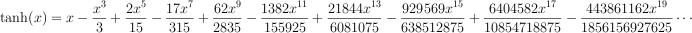
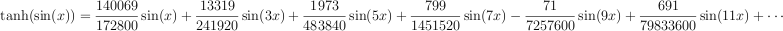
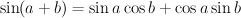

| mus-location | number of calls so far on this env |
| mus-increment | base |
| mus-data | breakpoint list |
| mus-scaler | scaler |
| mus-offset | offset |
| mus-length | duration in samples |
| mus-channels | current position in the break-point list |

CLM (originally an acronym for Common Lisp Music) is a sound synthesis package in the Music V family. This file describes CLM as implemented in Snd, aiming primarily at the Scheme version. Common Lisp users should check out clm.html in the CLM tarball. CLM is based on a set of functions known as "generators". These can be packaged into "instruments", and instrument calls can be packaged into "note lists". (These names are just convenient historical artifacts). The main emphasis here is on the generators; note lists and instruments are described in sndscm.html.
| related documentation: | snd.html | extsnd.html | grfsnd.html | sndscm.html | fm.html | sndlib.html | libxm.html | s7.html | index.html |
|
|
| |||||||||||||||||||||||||||||||||||||||||||||||||||||||||||||||||||||||||||||||||||||||||||||||||||||||||||||||||||||||||||||||||||||
|
| |||||||||||||||||||||||||||||||||||||||||||||||||||||||||||||||||||||||||||||||||||||||||||||||||||||||||||||||||||||||||||||||||||||
|
|
If you try to make new sounds, or recreate and alter existing sounds, you'll find that there are some functions that seem to pop up everywhere. The basic building block of sound is the sinusoid, so we have things like oscil and polywave. Another basic thing is noise, so we have rand and rand-interp. Sounds get louder and softer, or go up and down in pitch, so we have envelopes (env). We need a way to get at them (in-any, readin), and play them (out-any, locsig). We need tons of reverb (delay, convolve). |
Start Snd, open the listener (choose "Show listener" in the View menu), and:
>(load "v.scm")
fm-violin
>(with-sound () (fm-violin 0 1 440 .1))
"test.snd"
Snd's printout is in blue here, and your typing is in red. If all went well, you should see a graph of the fm-violin's output. Click the "play" button to hear it; click "f" to see its spectrum.
In Ruby, we'd do it this way:
>load "v.rb"
true
>with_sound() do fm_violin_rb(0, 1.0, 440.0, 0.1) end
#<With_CLM: output: "test.snd", channels: 1, srate: 22050>
and in Forth:
snd> "clm-ins.fs" file-eval
0
snd> 0.0 1.0 440.0 0.1 ' fm-violin with-sound
\ filename: test.snd
In most of this document, I'll stick with Scheme as implemented by s7. extsnd.html and sndscm.html have numerous Ruby and Forth examples, and I'll toss some in here as I go along. You can save yourself a lot of typing by using two features of the listener. First, <TAB> (that is, the key marked TAB) tries to complete the current name, so if you type "fm-<TAB>" the listener completes the name as "fm-violin". And second, you can back up to a previous expression, edit it, move the cursor to the closing parenthesis, and type <RETURN>, and that expression will be evaluated as if you had typed all of it in from the start. Needless to say, you can paste code from this file into the Snd listener.
with-sound opens an output sound file, evaluates its body, closes the file, and then opens it in Snd. If the sound is already open, with-sound replaces it with the new version. The body of with-sound can be any size, and can include anything that you could put in a function body. For example, to get an arpeggio:
(with-sound ()
(do ((i 0 (+ 1 i)))
((= i 8))
(fm-violin (* i .25) .5 (* 100 (+ 1 i)) .1)))
|
If that seemed to take awhile, make sure you've turned on optimization:
>(set! (optimization) 6)
6
The optimizer, a macro named "run", can usually speed up computations by about a factor of 10. |
with-sound, instruments, CLM itself are all optional, of course. We could do everything by hand:
(let ((sound (new-sound "test.snd" :size 22050))
(increment (/ (* 440.0 2.0 pi) 22050.0))
(current-phase 0.0))
(map-channel (lambda (y)
(let ((val (* .1 (sin current-phase))))
(set! current-phase (+ current-phase increment))
val))))
This opens a sound file (via new-sound) and fills it with a .1 amplitude sine wave at 440 Hz. The "increment" calculation turns 440 Hz into a phase increment in radians (we could also use the function hz->radians). The "oscil" generator keeps track of the phase increment for us, so essentially the same thing using with-sound and oscil is:
(with-sound ()
(let ((osc (make-oscil 440.0)))
(do ((i 0 (+ 1 i)))
((= i 44100))
(outa i (* .1 (oscil osc)) *output*))))
*output* is the file opened by with-sound, and outa is a function that adds its second argument (the sinusoid) into the current output at the sample given by its first argument ("i" in this case). oscil is our sinusoid generator, created by make-oscil. You don't need to worry about freeing the oscil; we can depend on the Scheme garbage collector to deal with that. All the generators are like oscil in that each is a function that on each call returns the next sample in an infinite stream of samples. An oscillator, for example, returns an endless sine wave, one sample at a time. Each generator consists of a set of functions: make-<gen> sets up the data structure associated with the generator; <gen> produces a new sample; <gen>? checks whether a variable is that kind of generator. Current generator state is accessible via various generic functions such as mus-frequency:
(set! oscillator (make-oscil :frequency 330))
prepares "oscillator" to produce a sine wave when set in motion via
(oscil oscillator)
The make-<gen> function takes a number of optional arguments, setting whatever state the given generator needs to operate on. The run-time function's first argument is always its associated structure. Its second argument is nearly always something like an FM input or whatever run-time modulation might be desired. Frequency sweeps of all kinds (vibrato, glissando, breath noise, FM proper) are all forms of frequency modulation. So, in normal usage, our oscillator looks something like:
(oscil oscillator (+ vibrato glissando frequency-modulation))
One special aspect of each make-<gen> function is the way it reads its arguments. I use parenthesized parameters in the function definitions to indicate that the argument names are keywords, but the keywords themselves are optional. Take the make-oscil call, defined as:
make-oscil (frequency *clm-default-frequency*) (initial-phase 0.0)
This says that make-oscil has two optional arguments, frequency (in Hz), and initial-phase (in radians). The keywords associated with these values are :frequency and :initial-phase. When make-oscil is called, it scans its arguments; if a keyword is seen, that argument and all following arguments are passed unchanged, but if a value is seen, the corresponding keyword is prepended in the argument list:
(make-oscil :frequency 440.0)
(make-oscil :frequency 440.0 :initial-phase 0.0)
(make-oscil 440.0)
(make-oscil 440.0 :initial-phase 0.0)
(make-oscil 440.0 0.0)
are all equivalent, but
(make-oscil :frequency 440.0 0.0)
(make-oscil :initial-phase 0.0 440.0)
are in error, because once we see any keyword, all the rest of the arguments have to use keywords too (we can't reliably make any assumptions after that point about argument ordering). This style of argument passing is the same as that of s7's define*, and is very similar to the "Optional Positional and Named Parameters" extension of scheme: SRFI-89.
Since we often want to use a given sound-producing algorithm many times (in a note list, for example), it is convenient to package up that code into a function. Our sinewave could be rewritten:
(define (simp start end freq amp) (let ((os (make-oscil freq))) (do ((i start (+ 1 i))) ((= i end)) (outa i (* amp (oscil os)))))) ; outa output defaults to *output* so we can omit it |
Now to hear our sine wave:
(with-sound (:play #t) (simp 0 44100 330 .1))
This version of "simp" forces you to think in terms of sample numbers ("start" and "end") which are dependent on the sampling rate. Our first enhancement is to use seconds:
(define (simp beg dur freq amp) (let* ((os (make-oscil freq)) (start (seconds->samples beg)) (end (+ start (seconds->samples dur)))) (do ((i start (+ 1 i))) ((= i end)) (outa i (* amp (oscil os)))))) |
Now we can use any sampling rate, and call "simp" using seconds:
(with-sound (:srate 44100) (simp 0 1.0 440.0 0.1))
Our next improvement adds the "run" macro to speed up processing by about a factor of 10:
(define (simp beg dur freq amp) (let* ((os (make-oscil freq)) (start (seconds->samples beg)) (end (+ start (seconds->samples dur)))) (run (do ((i start (+ 1 i))) ((= i end)) (outa i (* amp (oscil os))))))) |
Since we're using a do loop in all these examples, we could save some typing by defining a macro to package up the run and loop boiler-plate:
(define-macro (run-loop start end . body)
`(run
(do ((i ,start (+ i 1)))
((= i ,end))
,@body)))
|
and now our instrument is just:
(define (simp beg dur freq amp) (let* ((os (make-oscil freq)) (start (seconds->samples beg)) (end (+ start (seconds->samples dur)))) (run-loop start end (outa i (* amp (oscil os)))))) |
But I think I'll stick with the do loops in this document. Next we turn the "simp" function into an "instrument". An instrument is a function that has a variety of built-in actions within with-sound. The only change is the word "definstrument":
(definstrument (simp beg dur freq amp) (let* ((os (make-oscil freq)) (start (seconds->samples beg)) (end (+ start (seconds->samples dur)))) (run (do ((i start (+ 1 i))) ((= i end)) (outa i (* amp (oscil os))))))) |
Now we can simulate a telephone:
(define (telephone start telephone-number)
(let ((touch-tab-1 '(0 697 697 697 770 770 770 852 852 852 941 941 941))
(touch-tab-2 '(0 1209 1336 1477 1209 1336 1477 1209 1336 1477 1209 1336 1477)))
(do ((i 0 (+ 1 i)))
((= i (length telephone-number)))
(let* ((num (telephone-number i))
(frq1 (touch-tab-1 num))
(frq2 (touch-tab-2 num)))
(simp (+ start (* i .4)) .3 frq1 .1)
(simp (+ start (* i .4)) .3 frq2 .1)))))
(with-sound () (telephone 0.0 '(7 2 3 4 9 7 1)))
|
As a last change, let's add an amplitude envelope:
(definstrument (simp beg dur freq amp envelope) (let* ((os (make-oscil freq)) (amp-env (make-env envelope :duration dur :scaler amp)) (start (seconds->samples beg)) (end (+ start (seconds->samples dur)))) (run (do ((i start (+ 1 i))) ((= i end)) (outa i (* (env amp-env) (oscil os))))))) |
A CLM envelope is a list of (x y) break-point pairs. The x-axis bounds are arbitrary, but it is conventional (here at ccrma) to go from 0 to 1.0. The y-axis values are normally between -1.0 and 1.0, to make it easier to figure out how to apply the envelope in various different situations.
(with-sound () (simp 0 2 440 .1 '(0 0 0.1 1.0 1.0 0.0)))
Add a few more oscils and envs, and you've got the fm-violin. You can try out a generator or a patch of generators quickly by plugging it into the following with-sound call:
(with-sound ()
(let ((sqr (make-square-wave 100))) ; test a square-wave generator
(do ((i 0 (+ 1 i)))
((= i 10000))
(outa i (square-wave sqr)))))
|
By the way, there's nothing special about a generator in CLM: it is a function, or perhaps more accurately, a closure. If such a function happens to restrict itself to functions that the "run" macro can handle (and this includes most of Scheme), then it will run nearly as fast as any built-in function. If it needs to keep on-going state around, it is simplest to use a vct as the generator object:
(define (make-my-oscil frequency) ; we want our own oscil! (vct 0.0 (hz->radians frequency))) ; current phase and frequency-based phase increment (define (my-oscil gen fm) ; the corresponding generator (let ((result (sin (gen 0)))) ; return sin(current-phase) (set! (gen 0) (+ (gen 0) ; increment current phase (gen 1) ; by frequency fm)) ; and FM result)) ; return sine wave (with-sound () (run (let ((osc (make-my-oscil 440.0))) (do ((i 0 (+ 1 i))) ((= i 44100)) (outa i (my-oscil osc 0.0)))))) |
There are many more such generators scattered around the Snd package, most now collected in generators.scm. I'm also writing pure-scheme versions of the built-in generators: big-gens.scm. For comparison, here is the sinewave instrument in Grace (Common Music) and Snd-rt:
file "test.wav" ()
with osc = make-oscil(440)
loop for i below 44100
outa(i, .1 * oscil(osc))
end
end
snd-rt:
(<rt-out> :len 1 (oscil :freq 440))
(<rt-stalin>
(sound :dur 1:-s
(out (oscil :freq 440))))
|
Generators |
oscil |
make-oscil (frequency *clm-default-frequency*) (initial-phase 0.0) oscil os (fm-input 0.0) (pm-input 0.0) oscil? os
(with-sound (:play #t)
(let ((gen (make-oscil 440.0)))
(do ((i 0 (+ 1 i)))
((= i 44100))
(outa i (* 0.5 (oscil gen))))))
|
with_sound(:play, true) do
gen = make_oscil(440.0);
44100.times do |i|
outa(i, 0.5 * oscil(gen), $output)
end
end.output
|
lambda: ( -- )
440.0 make-oscil { gen }
44100 0 do
i gen 0 0 oscil f2/ *output* outa drop
loop
; :play #t with-sound drop
|
oscil produces a sine wave (using sin) with optional frequency change (FM). Its first argument is an oscil created by make-oscil. Oscil's second argument is the frequency change (frequency modulation), and the third argument is the phase change (phase modulation). The initial-phase argument to make-oscil is in radians. You can use degrees->radians to convert from degrees to radians. To get a cosine (as opposed to sine), set the initial-phase to (/ pi 2).
| mus-frequency | frequency in Hz |
| mus-phase | phase in radians |
| mus-length | 1 (no set!) |
| mus-increment | frequency in radians per sample |
(let ((result (sin (+ phase pm-input))))
(set! phase (+ phase (hz->radians frequency) fm-input))
result)
One slightly confusing aspect of oscil is that glissando has to be turned into a phase-increment envelope. This means that the frequency envelope y values should be passed through hz->radians:
(define (simp start end freq amp frq-env)
(let ((os (make-oscil freq))
(frqe (make-env frq-env :length (+ 1 (- end start)) :scaler (hz->radians freq))))
(do ((i start (+ 1 i)))
((= i end))
(outa i (* amp (oscil os (env frqe)))))))
(with-sound () (simp 0 10000 440 .1 '(0 0 1 1))) ; sweep up an octave
|
Here is an example of FM (here the hz->radians business is folded into the FM index):
(definstrument (simple-fm beg dur freq amp mc-ratio index amp-env index-env) (let* ((start (seconds->samples beg)) (end (+ start (seconds->samples dur))) (cr (make-oscil freq)) ; carrier (md (make-oscil (* freq mc-ratio))) ; modulator (fm-index (hz->radians (* index mc-ratio freq))) (ampf (make-env (or amp-env '(0 0 .5 1 1 0)) :scaler amp :duration dur)) (indf (make-env (or index-env '(0 0 .5 1 1 0)) :scaler fm-index :duration dur))) (run (do ((i start (+ 1 i))) ((= i end)) (outa i (* (env ampf) (oscil cr (* (env indf) (oscil md))))))))) ;;; (with-sound () (simple-fm 0 1 440 .1 2 1.0)) |
fm.html has an introduction to FM. FM and PM behave slightly differently during a glissando; FM is the more "natural" in that, left to its own devices, it produces a spectrum that varies inversely with the pitch. Compare these two cases. Both involve a slow glissando up an octave, FM in channel 0, and PM in channel 1. In the first note, I fix up the FM index during the sweep to keep the spectra steady, and in the second, I fix up the PM index.
(with-sound (:channels 2) (let* ((dur 2.0) (samps (seconds->samples dur)) (pitch 1000) (modpitch 100) (pm-index 4.0) (fm-index (hz->radians (* 4.0 modpitch)))) (let* ((car1 (make-oscil pitch)) (mod1 (make-oscil modpitch)) (car2 (make-oscil pitch)) (mod2 (make-oscil modpitch)) (frqf (make-env '(0 0 1 1) :duration dur)) (ampf (make-env '(0 0 1 1 20 1 21 0) :duration dur :scaler .5))) (do ((i 0 (+ 1 i))) ((= i samps)) (let* ((frq (env frqf)) (rfrq (hz->radians frq)) (amp (env ampf))) (outa i (* amp (oscil car1 (+ (* rfrq pitch) (* fm-index (+ 1 frq) ; keep spectrum the same (oscil mod1 (* rfrq modpitch))))))) (outb i (* amp (oscil car2 (* rfrq pitch) (+ (* pm-index (oscil mod2 (* rfrq modpitch))))))))) (let* ((car1 (make-oscil pitch)) (mod1 (make-oscil modpitch)) (car2 (make-oscil pitch)) (mod2 (make-oscil modpitch)) (frqf (make-env '(0 0 1 1) :duration dur)) (ampf (make-env '(0 0 1 1 20 1 21 0) :duration dur :scaler .5))) (do ((i 0 (+ 1 i))) ((= i samps)) (let* ((frq (env frqf)) (rfrq (hz->radians frq)) (amp (env ampf))) (outa (+ i samps) (* amp (oscil car1 (+ (* rfrq pitch) (* fm-index ; let spectrum decay (oscil mod1 (* rfrq modpitch))))))) (outb (+ i samps) (* amp (oscil car2 (* rfrq pitch) (+ (* (/ pm-index (+ 1 frq)) (oscil mod2 (* rfrq modpitch))))))))))))) |
To show CLM in its various embodiments, here are the Scheme, Common Lisp, Ruby, Forth, and C versions of the bird instrument; it produces a sinusoid with (usually very elaborate) amplitude and frequency envelopes.
| |
| |
| |
| |
|
Many of the synthesis functions in this document try to make it faster or more convenient to produce a lot of sinusoids, but there are times when nothing but a ton of oscils will do:
|
Actually, we could do this with mus-chebyshev-t-sum:
...
(amps (make-vct 10607))
(angle 0.0)
(freq (hz->radians 1.0))
...
(do ((i 0 (+ i 1))
(k 0 (+ k 2)))
((= i len))
(set! (amps (peaks k)) (peaks (+ k 1))))
...
(outa i (* (env ampf) (mus-chebyshev-t-sum angle amps)))
(set! angle (+ angle freq (rand-interp vib)))
...
but it seems a bit unnatural. Related generators are ncos, nsin, asymmetric-fm, and nrxysin. Some instruments that use oscil are bird and bigbird, fm-violin (v), lbj-piano (clm-ins.scm), vox (clm-ins.scm), and fm-bell (clm-ins.scm). Interesting extensions of oscil include the various summation formulas in generators.scm. To goof around with FM from a graphical interface, see bess.scm and bess1.scm.
|
When oscil's frequency is high relative to the sampling rate, the waveform it produces may not look very sinusoidal. Here, for example, is oscil at 440 Hz when the srate is 1000, 4000, and 16000: |
env |
make-env
envelope ; list or vct of x,y break-point pairs
(scaler 1.0) ; scaler on every y value (before offset is added)
duration ; duration in seconds
(offset 0.0) ; value added to every y value
base ; type of connecting line between break-points
end ; end sample number (obsolete, use length)
length ; duration in samples
env e
env? e
env-interp x env (base 1.0) ;value of env at x
env-any e connecting-function
(with-sound (:play #t)
(let ((gen (make-oscil 440.0))
(ampf (make-env
'(0 0 .01 1 .25 .1 1 0)
:scaler 0.5
:length 44100)))
(do ((i 0 (+ 1 i)))
((= i 44100))
(outa i (* (env ampf) (oscil gen))))))
|
with_sound(:play, true) do
gen = make_oscil(440.0);
ampf = make_env(
[0, 0, 0.01, 1.0, 0.25, 0.1, 1, 0],
:scaler, 0.5,
:length, 44100);
44100.times do |i|
outa(i, env(ampf) * oscil(gen), $output)
end
end.output
|
lambda: ( -- )
440.0 make-oscil { gen }
'( 0 0 0.01 1 0.25 0.1 1 0 )
:scaler 0.5 :length 44100 make-env { ampf }
44100 0 do
i gen 0 0 oscil ampf env f* *output* outa drop
loop
; :play #t with-sound drop
|
|
|
|||||||||||||||||
An envelope is a list or vct of break point pairs: '(0 0 100 1) is
a ramp from 0 to 1 over an x-axis excursion from 0 to 100, as is (vct 0 0 100 1).
This data is passed
to make-env along with the scaler (multiplier)
applied to the y axis, the offset added to every y value,
and the time in samples or seconds that the x axis represents.
make-env returns an env generator.
env then returns the next sample of the envelope each time it is called.
Say we want a ramp moving from .3 to .5 during 1 second.
(make-env '(0 0 100 1) :scaler .2 :offset .3 :duration 1.0)
(make-env '(0 .3 1 .5) :duration 1.0)
I find the second version easier to read. The first is handy if you have a bunch of stored envelopes. To specify the breakpoints, you can also use the form '((0 0) (100 1)).
|
The base argument determines how the break-points are connected. If it is 1.0 (the
default), you get straight line segments. If base is 0.0, you get a step
function (the envelope changes its value suddenly to the new one without any
interpolation). Any other positive value affects the exponent of the exponential curve
connecting the points. A base less than 1.0 gives convex curves (i.e. bowed
out), and a base greater than 1.0 gives concave curves (i.e. sagging).
If you'd rather think in terms of e^-kt, set the base to |

|

|
You can get a lot from a couple of envelopes:
> (load "animals.scm")
#<unspecified>
> (with-sound (:play #t) (pacific-chorus-frog 0 .5))
"test.snd"
> (with-sound (:play #t) (house-finch 0 .5))
"test.snd"
There are several ways to get arbitrary connecting curves between the break points. The simplest method is to treat the output of env as the input to the connecting function. Here's an instrument that maps the line segments into sin x^3:
|

|
Another method is to write a function that traces out the curve you want. J.C.Risset's bell curve is:
(define (bell-curve x) ;; x from 0.0 to 1.0 creates bell curve between .64e-4 and nearly 1.0 ;; if x goes on from there, you get more bell curves; x can be ;; an envelope (a ramp from 0 to 1 if you want just a bell curve) (+ .64e-4 (* .1565 (- (exp (- 1.0 (cos (* 2 pi x)))) 1.0)))) |
But the most flexible method is to use env-any. env-any takes the env generator that produces the underlying envelope, and a function to "connect the dots", and returns the new envelope applying that connecting function between the break points. For example, say we want to square each envelope value:
(with-sound () (let ((e (make-env '(0 0 1 1 2 .25 3 1 4 0) :duration 0.5))) (do ((i 0 (+ 1 i))) ((= i 44100)) (outa i (env-any e (lambda (y) (* y y))))))) ;; or connect the dots with a sinusoid: (define (sine-env e) (env-any e (lambda (y) (* 0.5 (+ 1.0 (sin (+ (* -0.5 pi) (* pi y)))))))) (with-sound () (let ((e (make-env '(0 0 1 1 2 .25 3 1 4 0) :duration 0.5))) (run (do ((i 0 (+ 1 i))) ((= i 44100)) (outa i (sine-env e)))))) |
The env-any connecting function takes one argument, the current envelope value treated as going between 0.0 and 1.0 between each two points. It returns a value that is then fitted back into the original (scaled, offset) envelope. There are a couple more of these functions in generators.scm, one to apply a blackman4 window between the points, and the other to cycle through a set of exponents.
mus-reset of an env causes it to start all over again from the beginning. mus-reset is called internally if you use mus-scaler to set an env's scaler (and similarly for offset and length). To jump to any position in an env, use mus-location. Here's a function that uses these methods to apply an envelope over and over:
(define (strum e) (map-channel (lambda (y) (if (> (mus-location e) (mus-length e)) ; mus-length = dur (mus-reset e)) ; start env again (default is to stick at the last value) (* y (env e))))) ;;; (strum (make-env (list 0 0 1 1 10 .6 25 .3 100 0) :length 2000)) |
To copy an env while changing one aspect (say duration), it's simplest to use make-env:
(define (change-env-dur e dur) (make-env (mus-data e) :scaler (mus-scaler e) :offset (mus-offset e) :base (mus-increment e) :duration dur)) |
make-env signals an error if the envelope breakpoints are either out of order, or an x axis value occurs twice. The default error handler in with-sound may not give you the information you need to track down the offending note, even given the original envelope. Here's one way to trap the error and get more info (in this case, the begin time and duration of the enclosing note):
(define* (make-env-with-catch beg dur :rest args) (catch 'mus-error (lambda () (apply make-env args)) (lambda args (display (format #f ";~A ~A: ~A~%" beg dur args))))) |
An envelope applied to the amplitude of a signal is a form of amplitude modulation, and glissando is frequency modulation. Both cause a broadening of the spectral components:
(with-sound (:srate 10000)')"> |
(with-sound (:srate 10000)')"> | |
multiplied by sinusoid at 50Hz | sinusoid from 100Hz to 300Hz |
The amplitude case reflects the spectrum of the amplitude envelope all by itself, translated (by multiplication) up to the sinusoid's pitch. The sidebands are about 1 Hz apart (the envelope takes 1 second to go linearly from 0 to 1). Despite appearances, we hear this (are you sitting down?) as a changing amplitude, not a timbral mess. Spectra can be tricky to interpret, and I've tried to choose parameters for this display that emphasize the broadening.
| Envelopes | ||||||||||||||||||||||||||||||||||||||||||||||||
|---|---|---|---|---|---|---|---|---|---|---|---|---|---|---|---|---|---|---|---|---|---|---|---|---|---|---|---|---|---|---|---|---|---|---|---|---|---|---|---|---|---|---|---|---|---|---|---|---|
|
table-lookup |
make-table-lookup
(frequency *clm-default-frequency*) ; table repetition rate in Hz
(initial-phase 0.0) ; starting point in radians (pi = mid-table)
wave ; a vct containing the signal
(size *clm-table-size*) ; table size if wave not specified
(type mus-interp-linear) ; interpolation type
table-lookup tl (fm-input 0.0)
table-lookup? tl
make-table-lookup-with-env frequency env size
(with-sound (:play #t)
(let ((gen (make-table-lookup 440.0 :wave (partials->wave '(1 .5 2 .5)))))
(do ((i 0 (+ 1 i)))
((= i 44100))
(outa i (* 0.5 (table-lookup gen))))))
|
with_sound(:play, true) do
gen = make_table_lookup(440.0, :wave, partials2wave([1.0, 0.5, 2.0, 0.5]));
44100.times do |i|
outa(i, 0.5 * table_lookup(gen), $output)
end
end.output
|
lambda: ( -- )
440.0 :wave '( 1 0.5 2 0.5 ) #f #f partials->wave make-table-lookup { gen }
44100 0 do
i gen 0 table-lookup f2/ *output* outa drop
loop
; :play #t with-sound drop
|
table-lookup performs interpolating table lookup with a lookup index that moves
through the table at a speed set by make-table-lookup's "frequency" argument and table-lookup's "fm-input" argument.
That is, the waveform in the table is produced repeatedly, the repetition rate set by the frequency arguments.
Table-lookup scales its
fm-input argument to make its table size appear to be two pi.
The intention here is that table-lookup with a sinusoid in the table and a given FM signal
produces the same output as oscil with that FM signal.
The "type" argument sets the type of interpolation used: mus-interp-none,
mus-interp-linear, mus-interp-lagrange, or mus-interp-hermite.
make-table-lookup-with-env (defined in generators.scm) returns a new table-lookup generator with the envelope 'env' loaded into its table.
| mus-frequency | frequency in Hz |
| mus-phase | phase in radians |
| mus-data | wave vct |
| mus-length | wave size (no set!) |
| mus-interp-type | interpolation choice (no set!) |
| mus-increment | table increment per sample |
(let ((result (array-interp wave phase))) (set! phase (+ phase (hz->radians frequency) (* fm-input (/ (length wave) (* 2 pi))))) result)
In the past, table-lookup was often used for additive synthesis, so there are two functions that make it easier to load up various such waveforms:
partials->wave synth-data wave-vct (norm #t) phase-partials->wave synth-data wave-vct (norm #t)
The "synth-data" argument is a list or vct of (partial amp) pairs: '(1 .5 2 .25) gives a combination of a sine wave at the carrier (partial = 1) at amplitude .5, and another at the first harmonic (partial = 2) at amplitude .25. The partial amplitudes are normalized to sum to a total amplitude of 1.0 unless the argument "norm" is #f. If the initial phases matter (they almost never do), you can use phase-partials->wave; in this case the synth-data is a list or vct of (partial amp phase) triples with phases in radians. If "wave-vct" is not passed, these functions return a new vct.
(definstrument (simple-table dur) (let ((tab (make-table-lookup :wave (partials->wave '(1 .5 2 .5))))) (do ((i 0 (+ 1 i))) ((= i dur)) (outa i (* .3 (table-lookup tab)))))) |
table-lookup can also be used as a sort of "freeze" function, looping through a sound repeatedly, based on some previously chosen loop positions:
(define (looper start dur sound freq amp) (let* ((beg (seconds->samples start)) (end (+ beg (seconds->samples dur))) (loop-data (mus-sound-loop-info sound))) (if (or (null? loop-data) (<= (cadr loop-data) (car loop-data))) (throw 'no-loop-positions) (let* ((loop-start (car loop-data)) (loop-end (cadr loop-data)) (loop-length (+ 1 (- loop-end loop-start))) (sound-section (file->array sound 0 loop-start loop-length (make-vct loop-length))) (original-loop-duration (/ loop-length (srate sound))) (tbl (make-table-lookup :frequency (/ freq original-loop-duration) :wave sound-section))) ;; "freq" here is how fast we read (transpose) the sound — 1.0 returns the original (run (do ((i beg (+ 1 i))) ((= i end)) (outa i (* amp (table-lookup tbl))))))))) (with-sound (:srate 44100) (looper 0 10 "/home/bil/sf1/forest.aiff" 1.0 0.5)) |
And for total confusion, here's a table-lookup that modulates a sound where we specify the modulation deviation in samples:
(definstrument (fm-table file start dur amp read-speed modulator-freq index-in-samples) (let* ((beg (seconds->samples start)) (end (+ beg (seconds->samples dur))) (table-length (mus-sound-frames file)) (tab (make-table-lookup :frequency (/ read-speed (mus-sound-duration file)) :wave (file->array file 0 0 table-length (make-vct table-length)))) (osc (make-oscil modulator-freq)) (index (/ (* (hz->radians modulator-freq) 2 pi index-in-samples) table-length))) (run (do ((i beg (+ 1 i))) ((= i end)) (outa i (* amp (table-lookup tab (* index (oscil osc))))))))) |
Lessee.. there's a factor of table-length/(2*pi) in table-lookup, so that a table with a sinusoid behaves the same as an oscil even with FM; hz->radians adds a factor of (2*pi)/srate; so we've cancelled the internal 2*pi and table-length, and we have an actual deviation of mfreq*2*pi*index/srate, which looks like FM; hmmm. See srcer below for an src-based way to do the same thing.
There is one annoying problem with table-lookup: noise.
Say we have a sine wave in a table with L elements, and we want to read it at a frequency of
f Hz at a sampling rate of Fs. This requires that we read the table at locations that are multiples of
L * f / Fs. This is ordinarily not an integer (that is, we've fallen between the
table elements). We have no data between the elements, but we can make (plenty of)
assumptions about what ought to be there. In the no-interpolation case (type = mus-interp-none), we take the floor of
the table-relative phase, returning a squared-off sine-wave:
100 1.000000')">
9900 0.010368 (.01)
10100 0.010192
19900 0.005174 (.005)
20100 0.005099
29900 0.003431 (.0033)
30100 0.003436
39900 0.002594 (.0025)
40100 0.002560
49900 0.002060 (.002)
50100 0.002066
59900 0.001732 (.0017)
60100 0.001715
69900 0.001477 (.0014)
70100 0.001478
79900 0.001300 (.00125)
80100 0.001296
89900 0.001157 (.0011)
90100 0.001153
99900 0.001043 (.001)
100100 0.001046
In addition to the sine at 100 Hz, we're getting lots of pairs of components, each pair centered around n * L * f, (10000 = 100 * 100 is the first),
and separated from it by f, (9900 and 10100),
and the amplitude of each pair is 1/(nL): -40 dB is 1/100 for the n=1 case.
This spectrum says "amplitude modulation" (the fast square wave times the slow sinusoid).
After scribbling a bit on the back of an envelope, we announce with a confident air that
the sawtooth error signal gives us the 1/n (it is a sum of sin nx/n), and its amplitude gives us the 1/L.
Now we try linear interpolation (mus-interp-linear), and get the same components as before, but
the amplitude is going (essentially) as 1.0 / (n * n * L * L). So the interpolation
reduces the original problem by a factor of n * L:
100 1.00000000')">
9900 0.00010508 (.0001)
10100 0.00010086
19900 0.00002580 (.000025)
20100 0.00002524
29900 0.00001133 (.000011)
30100 0.00001157
39900 0.00000661 (.0000063)
40100 0.00000652
49900 0.00000419 (.000004)
50100 0.00000422
59900 0.00000263 (.0000027)
60100 0.00000282
69900 0.00000216 (.000002)
70100 0.00000201
79900 0.00000161 (.0000015)
80100 0.00000155
89900 0.00000120 (.0000012)
90100 0.00000123
99900 0.00000099 (.000001)
100100 0.00000102
We can view this also as amplitude modulation: the sinusoid at frequency f times the little blip during each table sample at frequency L * f. Each component is at n * L * f, as before, and split in half by the modulation. Since L * f is normally a very high frequency, and sampling rates are not in the megahertz range (as in our examples), these components alias to such an extent that they look like noise, but they are noise only in the sense that we wish they weren't there.
The table length (L above) is the "effective" length. If we store an nth harmonic in the table, each period gets L/n elements (we want to avoid clicks caused by discontinuities between the first and last table elements), so the amplitude of the nth harmonic's noise components is higher (by n^2) than the fundamental's. We either have to use enormous tables or stick to low numbered partials. To keep the noise components out of sight in 16-bit output (down 90 dB), we need 180 elements per period. So a table with a 50th harmonic has to be at least length 8192. It's odd that the cutoff here is so similar to the waveshaping case; a 50-th harmonic is trouble in either case. (This leaves an opening for ncos and friends even when dynamic spectra aren't the issue).
We can try fancier interpolations. mus-interp-lagrange and mus-interp-hermite
reduce the components (which are at the same frequencies as before) by about another factor of L.
But these interpolations are expensive and ugly.
If you're trying to produce a sum of sinusoids, use polywave — it makes a monkey out of table lookup in every case.
|
table-lookup of a sine (or some facsimile thereof) probably predates Ptolemy. One neat method of generating the table is that of Bhaskara I, AD 600, India, mentioned in van Brummelen, "The Mathematics of the Heavens and the Earth": use the rational approximation 4x(180-x)/(40500-x(180-x)), x in degrees, or more readably: 4x(pi-x)/(12.337-x(pi-x)), x in radians. The maximum error is 0.00163 at x=11.54 (degrees)! |
spectr.scm has a steady state spectra of several standard orchestral instruments, courtesy of James A. Moorer. The drone instrument in clm-ins.scm uses table-lookup for the bagpipe drone. two-tab in the same file interpolates between two tables. See also grani and display-scanned-synthesis.
polywave, polyshape |
make-polywave
(frequency *clm-default-frequency*)
(partials '(1 1)) ; a list of harmonic numbers and their associated amplitudes
(type mus-chebyshev-first-kind) ; Chebyshev polynomial choice
polywave w (fm 0.0)
polywave? w
make-polyshape
(frequency *clm-default-frequency*)
(initial-phase 0.0)
coeffs
(partials '(1 1))
(kind mus-chebyshev-first-kind)
polyshape w (index 1.0) (fm 0.0)
polyshape? w
partials->polynomial partials (kind mus-chebyshev-first-kind)
normalize-partials partials
mus-chebyshev-tu-sum x t-coeffs u-coeffs
mus-chebyshev-t-sum x t-coeffs
mus-chebyshev-u-sum x u-coeffs
(with-sound (:play #t)
(let ((gen (make-polywave 440.0
:partials '(1 .5 2 .5))))
(do ((i 0 (+ 1 i)))
((= i 44100))
(outa i (* 0.5 (polywave gen))))))
|
with_sound(:play, true) do
gen = make_polywave(440.0,
:partials, [1.0, 0.5, 2.0, 0.5]);
44100.times do |i|
outa(i, 0.5 * polywave(gen), $output)
end
end.output
|
lambda: ( -- )
440.0 :partials '( 1 0.5 2 0.5 ) make-polywave { gen }
44100 0 do
i gen 0 polywave f2/ *output* outa drop
loop
; :play #t with-sound drop
|
These two generators drive a sum of scaled Chebyshev polynomials with a cosine, creating a sort of cross between additive synthesis and FM; see "Digital Waveshaping Synthesis" by Marc Le Brun in JAES 1979 April, vol 27, no 4, p250. The basic idea is:
We can add scaled Tns (polynomials) to get the spectrum we want, producing in the simplest case an inexpensive additive synthesis. We can vary the peak amplitude of the input (cos theta) to get effects similar to those of FM. polyshape uses a prebuilt sum of Chebyshev polynomials, whereas polywave uses the underlying Chebyshev recursion. polywave is stable and noise-free even with high partial numbers (I've tried it with 16384 harmonics). The "partials" argument to the make function can be either a list or a vct. The "type" or "kind" argument determines which kind of Chebyshev polynomial is used internally: mus-chebyshev-first-kind (Tn) which produces a sum of cosines, or mus-chebyshev-second-kind (Un), which produces a sum of sines.
normalize-partials takes the list or vct of partial number and amplitudes, and returns a vct with the amplitudes normalized so that their magnitudes add to 1.0.
>(normalize-partials '(1 1 3 2 6 1))
#<vct[len=6]: 1.000 0.250 3.000 0.500 6.000 0.250>
>(normalize-partials (vct 1 .1 2 .1 3 -.2))
#<vct[len=6]: 1.000 0.250 2.000 0.250 3.000 -0.500>
partials->polynomial takes a list or vct of partial numbers and amplitudes and returns the Chebyshev polynomial coefficients that produce that spectrum. These coefficients can be passed to polyshape (the coeffs argument), or used directly by polynomial (there are examples of both below).
>(partials->polynomial '(1 1 3 2 6 1))
#<vct[len=7]: -1.000 -5.000 18.000 8.000 -48.000 0.000 32.000>
>(partials->polynomial '(1 1 3 2 6 1) mus-chebyshev-second-kind)
#<vct[len=7]: -1.000 6.000 8.000 -32.000 0.000 32.000 0.000>
>(partials->polynomial (vct 1 .1 2 .1 3 -.2))
#<vct[len=4]: -0.100 0.700 0.200 -0.800>
mus-chebyshev-tu-sum and friends perform the same function as partials->polynomial, but use the much more stable and accurate underlying recursion (see below for a long-winded explanation). They are the innards of the polywave and polyoid generators. The arguments are "x" (normally a phase), and one or two vcts of component amplitudes. These functions makes it easy to do additive synthesis with any number of harmonics (I've tried 16384), each with arbitrary initial-phase and amplitude, and each harmonic independently changeable in phase and amplitude at run-time by setting a vct value.
| mus-frequency | frequency in Hz |
| mus-scaler | index (polywave only) |
| mus-phase | phase in radians |
| mus-data | polynomial coeffs |
| mus-length | number of partials |
| mus-increment | frequency in radians per sample |
(let ((result (polynomial wave (cos phase)))) (set! phase (+ phase (hz->radians frequency) fm)) result)
In its simplest use, waveshaping is additive synthesis:
(with-sound () (let ((wav (make-polyshape :frequency 500.0 :partials '(1 .5 2 .3 3 .2)))) (do ((i 0 (+ 1 i))) ((= i 40000)) (outa i (polyshape wav))))) |
Say we want every third harmonic at amplitude 1/sqrt(harmonic-number) for 5 harmonics total:
(with-sound (:clipped #f :statistics #t :play #t :scaled-to .5) (let* ((gen (make-polywave 200 (let ((harms (make-vct (* 5 2)))) ; 5 harmonics, 2 numbers for each (do ((k 1 (+ k 3)) (i 0 (+ i 2))) ((= i (* 5 2))) (set! (harms i) k) ; harmonic number (k*freq) (set! (harms (+ i 1)) (/ 1.0 (sqrt k)))) ; harmonic amplitude harms))) (ampf (make-env '(0 0 1 1 10 1 11 0) :duration 1.0 :scaler .5))) (do ((i 0 (+ 1 i))) ((= i 44100)) (outa i (* (env ampf) (polywave gen)))))) |
See animals.scm for many more examples along these lines. normalize-partials makes sure that the component amplitudes (magnitudes) add to 1.0. Its argument can be either a list or vct, but it always returns a vct. The fm-violin uses polyshape for the multiple FM section in some cases. The pqw and pqwvox instruments use both kinds of Chebyshev polynomials to produce single side-band spectra. Here is a somewhat low-level example:
(definstrument (pqw start dur spacing carrier partials) (let* ((spacing-cos (make-oscil spacing (/ pi 2.0))) (spacing-sin (make-oscil spacing)) (carrier-cos (make-oscil carrier (/ pi 2.0))) (carrier-sin (make-oscil carrier)) (sin-coeffs (partials->polynomial partials mus-chebyshev-second-kind)) (cos-coeffs (partials->polynomial partials mus-chebyshev-first-kind)) (beg (seconds->samples start)) (end (+ beg (seconds->samples dur)))) (run (do ((i beg (+ 1 i))) ((= i end)) (let ((ax (oscil spacing-cos))) (outa i (- (* (oscil carrier-sin) (oscil spacing-sin) (polynomial sin-coeffs ax)) (* (oscil carrier-cos) (polynomial cos-coeffs ax))))))))) (with-sound () (pqw 0 1 200.0 1000.0 '(2 .2 3 .3 6 .5))) |

|
We can use waveshaping to make a band-limited triangle-wave:
(define* (make-band-limited-triangle-wave (frequency *clm-default-frequency*) (order 1))
(let ((freqs '()))
(do ((i 1 (+ 1 i))
(j 1 (+ j 2)))
((> i order))
(set! freqs (cons (/ 1.0 (* j j)) (cons j freqs))))
(make-polywave frequency :partials (reverse freqs))))
(define* (band-limited-triangle-wave gen (fm 0.0))
(polywave gen fm))
|
Band-limited square or sawtooth waves:
(definstrument (bl-saw start dur frequency order) (let* ((norm (if (= order 1) 1.0 ; these peak amps were determined empirically (if (= order 2) 1.3 ; actual limit is supposed to be pi/2 (G&R 1.441) (if (< order 9) 1.7 ; but Gibbs phenomenon pushes it to 1.851 1.852)))) (freqs '())) (do ((i 1 (+ 1 i))) ((> i order)) (set! freqs (cons (/ 1.0 (* norm i)) (cons i freqs)))) (let* ((gen (make-polywave frequency :partials (reverse freqs) :type mus-chebyshev-second-kind)) (beg (seconds->samples start)) (end (+ beg (seconds->samples dur)))) (run (do ((i beg (+ 1 i))) ((= i end)) (outa i (polywave gen))))))) |
| The "fm" argument to these generators is intended mainly for vibrato and frequency envelopes. If you use it for frequency modulation, you'll notice that the result is not the necessarily same as applying that modulation to the equivalent bank of oscillators, but it is the same as (for example) applying it to an ncos generator, or most of the other generators (table-lookup, nsin, etc). The polynomial in cos(x) produces a sum of cos(nx) for various "n", but if "x" is itself a sinusoid, its effective index includes the factor of "n" (the partial number). This is what you want if all the components should move together (as in vibrato). If you need better control of the FM spectrum, use a bank of oscils where you can set each index independently. Here we used '(1 1 2 1 3 1) and polyshape with sinusoidal FM with an index of 1. |
The same thing happens if you use polyshape or ncos (or whatever) as the (complex) modulating signal to an oscil (the reverse of the situation above). The effective index of each partial is divided by the partial number (and in ncos, for example, the output is scaled to be -1..1, so that adds another layer of confusion). There's a longer discussion of this under ncos.
To get the FM effect of a spectrum centered around a carrier, multiply the waveshaping output by the carrier (the 0Hz term gives us the carrier):
(with-sound () (let ((modulator (make-polyshape 100.0 :partials (list 0 .4 1 .4 2 .1 3 .05 4 .05))) (carrier (make-oscil 1000.0))) (do ((i 0 (+ 1 i))) ((= i 20000)) (outa i (* .5 (oscil carrier) (polyshape modulator)))))) |
The simplest way to get get changing spectra is to interpolate between two or more sets of coefficients.
(+ (* interp (polywave p1 ...)) ; see animals.scm for many examples
(* (- 1.0 interp) (polywave p2 ...)))
Or use mus-chebyshev-*-sum and set the component amplitudes directly:
(with-sound () (let* ((dur 1.0) (samps (seconds->samples dur)) (coeffs (vct 0.0 0.5 0.25 0.125 0.125)) (x 0.0) (incr (hz->radians 100.0)) (ampf (make-env '(0 0 1 1 10 1 11 0) :duration dur :scaler .5)) (harmf (make-env '(0 .125 1 .25) :duration dur))) (do ((i 0 (+ 1 i))) ((= i samps)) (let ((harm (env harmf))) (set! (coeffs 3) harm) (set! (coeffs 4) (- .25 harm)) (outa i (* (env ampf) (mus-chebyshev-t-sum x coeffs))) (set! x (+ x incr)))))) |
But we can also vary the index (the amplitude of the cosine driving the sum of polynomials), much as in FM. The kth partial's amplitude at a given index, given a set h[k] of coefficients, is:
(This formula is implemented by cheby-hka in dsp.scm). The function traced out by the harmonic (analogous to the role the Bessel function Jn plays in FM) is a polynomial in the index whose order depends on the number of coefficients. When the index is less than 1.0, energy appears in lower harmonics even if they are not included in the index=1.0 list:
> (cheby-hka 3 0.25 (vct 0 0 0 0 1.0 1.0))
-0.0732421875
> (cheby-hka 2 0.25 (vct 0 0 0 0 1.0 1.0))
-0.234375
> (cheby-hka 1 0.25 (vct 0 0 0 0 1.0 1.0))
1.025390625
> (cheby-hka 0 0.25 (vct 0 0 0 0 1.0 1.0))
1.5234375
Below we sweep the index from 0.0 to 1.0 (sticking at 1.0 for a moment at the end), with a partials list of '(11 1.0 20 1.0). These numbers were chosen to show that the even and odd harmonics are independent:
(with-sound () (let ((gen (make-polyshape 100.0 :partials (list 11 1 20 1))) (ampf (make-env '(0 0 1 1 20 1 21 0) :scaler .4 :length 88200)) (indf (make-env '(0 0 1 1 1.1 1) :length 88200))) (do ((i 0 (+ 1 i))) ((= i 88200)) (outa i (* (env ampf) (polyshape gen (env indf))))))) | |
You can see there's another annoying "gotcha": the DC component can be arbitrarily large. If we don't counteract it in some way, we lose dynamic range, and we get a big click when the generator stops. In addition (as the right graph shows, although in this case the effect is minor), the peak amplitude is dependent on the index. We can reduce this problem somewhat by changing the signs of the harmonics to follow the pattern + + - -:
(list 1 .5 2 .25 3 -.125 4 -.125) ; squeeze the amplitude change toward index=0
but now the peak amplitude is hard to predict (it's .6242 in this example). Perhaps flatten-partials would be a better choice here. To follow an amplitude envelope despite a changing index, we can use a moving-max generator (from generators.scm):
(with-sound () (let ((gen (make-polyshape 1000.0 :partials (list 1 .25 2 .25 3 .125 4 .125 5 .25))) (indf (make-env '(0 0 1 1 2 0) :duration 2.0)) ; index env (ampf (make-env '(0 0 1 1 2 1 3 0) :duration 2.0)) ; desired amp env (mx (make-moving-max 256)) ; track actual current amp (samps (seconds->samples 2.0))) (do ((i 0 (+ 1 i))) ((= i samps)) (let ((val (polyshape gen (env indf)))) ; polyshape with index env (outa i (/ (* (env ampf) val) (max 0.001 (moving-max mx val)))))))) |
The harmonic amplitude formula for the Chebyshev polynomials of the second kind is:
On a related topic, if we drive the sum of Chebyshev polynomials with more than one sinusoid, we get sum and difference tones, much as in complex FM:
(with-sound () (let ((pcoeffs (partials->polynomial (vct 5 1))) (gen1 (make-oscil 100.0)) (gen2 (make-oscil 2000.0))) (do ((i 0 (+ 1 i))) ((= i 44100)) (outa i (polynomial pcoeffs (+ (* 0.5 (oscil gen1)) (* 0.5 (oscil gen2)))))))) |
This kind of output is typical; I get the impression that the cross products are much more noticeable here than in FM. Of course, we can take advantage of that:
(with-sound (:channels 2) (let* ((dur 2.0) (samps (seconds->samples dur)) (p1 (make-polywave 800 (list 1 .1 2 .3 3 .4 5 .2))) (p2 (make-polywave 400 (list 1 .1 2 .3 3 .4 5 .2))) (interpf (make-env '(0 0 1 1) :duration dur)) (p3 (partials->polynomial (list 1 .1 2 .3 3 .4 5 .2))) (g1 (make-oscil 800)) (g2 (make-oscil 400)) (ampf (make-env '(0 0 1 1 10 1 11 0) :duration dur))) (do ((i 0 (+ 1 i))) ((= i samps)) (let ((interp (env interpf)) (amp (env ampf))) ;; chan A: interpolate from one spectrum to the next directly (outa i (* amp (+ (* interp (polywave p1)) (* (- 1.0 interp) (polywave p2))))) ;; chan B: interpolate inside the sum of Tns! (outb i (* amp (polynomial p3 (+ (* interp (oscil g1)) (* (- 1.0 interp) (oscil g2)))))))))) |
If we use an arbitrary sound as the argument to the polynomial, the output is a brightened or distorted version of the original:
(define (brighten-slightly coeffs)
(let ((pcoeffs (partials->polynomial coeffs))
(mx (maxamp)))
(map-channel
(lambda (y)
(* mx (polynomial pcoeffs (/ y mx)))))))
but watch out for clicks from the DC component if any of the "n" in the Tn are even. When I use this idea, I either use only odd numbered partials in the partials->polynomial list, or add an amplitude envelope to make sure the result ends at 0. I suppose you could also subtract out the DC term (coeffs[0]), but I haven't tried this.
If you push the polyshape generator into high harmonics (above say 30), you'll run into numerical trouble (the polywave generator is immune to this bug). Where does the trouble lie? The polynomials are related to each other via the recursion: , so the first few polynomials are:
 |
The first coefficient is 2^n or 2^(n-1). This is bad news if "n" is large because we are expecting a bunch of huge numbers to add up to something in the vicinity of 0.0 or 1.0. If we're using 32-bit floats, the first sign of trouble comes when the order is around 26. If you look at some of the coefficients, you'll see numbers like -129026688.000 (in the 32 bit case), which should be -129026680.721 — we have run out of bits in the mantissa! Even if we build Snd --with-doubles, we can only push the order up to around 46. polywave, on the other hand, builds up the sum of sines from the underlying recursion, which is only slightly slower than using the polynomial, and it is not bothered by these numerical problems. I have run polywave with 16384 harmonics, and the maximum error compared to the equivalent sum of sinusoids was around 5.0e-12.
Since it is primarily used for additive synthesis, and we can always do that with oscils or table-lookup, we might ask why we'd want polywave at all. Leaving aside speed (the Chebyshev computation is 10 to 20 times faster than the equivalent sum of oscils) and memory (the defunct table-lookup based waveshape generator and table-lookup itself use a table that has to be loaded), the main reason to use polywave is accuracy. polywave produces output that is as clean as the equivalent sum of oscils, whereas table-lookup and poor old waveshape, both of which interpolate into a sampled version of the desired function, are noisy. To make the difference almost appalling, here are spectra comparing a sum of oscils, polyshape, (table-lookup based) waveshape, and table-lookup.
|
The table size is 512, but that almost doesn't matter; you'd have to use a table size of at least 8192 to approach the oscil and polyshape cases. The FFT size is 1048576, with no data window ("rectangular"), and the y-axis is in dB, going down to -120 dB. The choice of fft window can make a big difference; using no window, but a huge fft seems like the least confusing way to present this result. Notice the lower peaks in the table-lookup case. partials->wave puts n periods of the nth harmonic in the table, so the nth harmonic has an effective table length of table-length/n. n * 1/n = 1, so all our components have their first interpolation noise peak centered (in this case) around 7100 Hz ((512 * 100) mod 22050). Since the 1600 Hz component has an effective table size of only 32 samples, it creates big sidebands at 5500 Hz and 8700 Hz. The 800 Hz component makes smaller peaks (by a factor of 4, since this is proportional to n^2) at 6300 Hz and 7900 Hz, and the 100 Hz cases are at 7000 Hz and 7200 Hz (down in amplitude by 16^2). The highest peaks are down only 60 dB. See table-lookup for more discussion of interpolation noise (it's actually amplitude modulation of the stored signal and the linear interpolating signal with severe aliasing). The waveshaping noise is much worse because the polynomial is so sensitive numerically. Here is a portion of the error signal at the point where the driving sinusoid is at its maximum: |
See also polyoid and noid in generators.scm.
sawtooth-wave, triangle-wave, pulse-train, square-wave |
make-triangle-wave (frequency *clm-default-frequency*) (amplitude 1.0) (initial-phase pi) triangle-wave s (fm 0.0) triangle-wave? s make-square-wave (frequency *clm-default-frequency*) (amplitude 1.0) (initial-phase 0) square-wave s (fm 0.0) square-wave? s make-sawtooth-wave (frequency *clm-default-frequency*) (amplitude 1.0) (initial-phase pi) sawtooth-wave s (fm 0.0) sawtooth-wave? s make-pulse-train (frequency *clm-default-frequency*) (amplitude 1.0) (initial-phase (* 2 pi)) pulse-train s (fm 0.0) pulse-train? s
(with-sound (:play #t)
(let ((gen (make-triangle-wave 440.0)))
(do ((i 0 (+ 1 i)))
((= i 44100))
(outa i (* 0.5
(triangle-wave gen))))))
|
with_sound(:play, true) do
gen = make_triangle_wave(440.0);
44100.times do |i|
outa(i, 0.5 * triangle_wave(gen),
$output)
end
end.output
|
lambda: ( -- )
440.0 make-triangle-wave { gen }
44100 0 do
i gen 0 triangle-wave f2/ *output* outa drop
loop
; :play #t with-sound drop
|
| mus-frequency | frequency in Hz |
| mus-phase | phase in radians |
| mus-scaler | amplitude arg used in make-<gen> |
| mus-width | width of square-wave pulse (0.0 to 1.0) |
| mus-increment | frequency in radians per sample |
One popular kind of vibrato is: (+ (triangle-wave pervib) (rand-interp ranvib))
These generators produce some standard old-timey wave forms that are still occasionally useful (well, triangle-wave is useful; the others are silly). sawtooth-wave ramps from -1 to 1, then goes immediately back to -1. Use a negative frequency to turn the "teeth" the other way. To get a sawtooth from 0 to 1, you can use modulo:
(with-sound () (do ((i 0 (+ i 1)) (x 0.0 (+ x .01))) ((= i 22050)) (outa i (modulo x 1.0))))
triangle-wave ramps from -1 to 1, then ramps from 1 to -1. pulse-train produces a single sample of 1.0, then zeros. square-wave produces 1 for half a period, then 0. All have a period of two pi, so the "fm" argument should have an effect comparable to the same FM applied to the same waveform in table-lookup. To get a square-wave with control over the "duty-factor":
(with-sound () (let* ((duty-factor .25) ; ratio of pulse duration to pulse period (p-on (make-pulse-train 100 0.5)) (p-off (make-pulse-train 100 -0.5 (* 2 pi (- 1.0 duty-factor)))) (sum 0.0)) (do ((i 0 (+ 1 i))) ((= i 44100)) (set! sum (+ sum (pulse-train p-on) (pulse-train p-off))) (outa i sum)))) |
This is the adjustable-square-wave generator in generators.scm.
That file also defines adjustable-triangle-wave and
adjustable-sawtooth-wave.
All of these generators produce non-band-limited output; if the frequency is too high, you can get foldover.
A more reasonable square-wave can be generated via
(tanh (* B (sin theta))), where "B" (a float) sets how squared-off it is:

|

|
|
The spectrum of tanh(sin) can be obtained by expanding tanh as a power series: plugging in "sin" for "x", expanding the sine powers, and collecting terms (very tedious — use maxima!): which is promising since a square wave is made up of odd harmonics with amplitude 1/n. As the "B" in tanh(B sin(x)) increases above pi/2, this series doesn't apply. 
but I haven't found a completion of this expansion that isn't ugly when B > pi/2. In any case, we can check the formula for tanh, and see that the e^-x term will vanish (in the positive x case), giving 1.0. So we do get a square wave, but it's not band limited. If a complex signal replaces the sin(x), we get "intermodulation products" (sum and difference tones); this use of tanh as a soft clipper goes way back — I don't know who invented it. |
If you try to make a square wave by adding harmonics at amplitude 1/n, you run into "Gibb's phenomenon": although the sum converges on a square wave, it does so "pointwise" — each point converges to the square wave, but the sum always has an overshoot. To get something that looks square, we need to round-off the corners. Bill Gosper shows one mathematical way to do this (gibbs.html). We could also use with-mixed-sound and the Mixes dialog:
(definstrument (sine-wave start dur freq amp) (let* ((beg (seconds->samples start)) (end (+ beg (seconds->samples dur))) (osc (make-oscil freq))) (run (do ((i beg (+ 1 i))) ((= i end)) (outa i (* amp (oscil osc))))))) (with-mixed-sound () (sine-wave 0 1 10.0 1.0) (sine-wave 0 1 30.0 .333) (sine-wave 0 1 50.0 .2) (sine-wave 0 1 70.0 .143)) |
Now we can play with the individual sinewave amplitudes in the Mixes dialog, seeing "in realtime" what effect an amplitude has on the waveform. In the graph below, we've taken the original set of four sines and chosen amplitudes 1.16, .87, .46, .14 (these are multipliers on the original 1/n amps). The first graph is the original waveform, the last is the result of the amplitude changes, and the middle one shows 100 sines (it is the usual demo that the Gibbs overshoot is not reduced by adding lots more components). The peak amplitude should be pi/4, but the Gibbs phenomenon adds .14.
But goofing with individual amplitudes quickly becomes tiresome. This "realtime" business depends on luck; if we have some idea of what we're doing, we don't have to get lucky. Since tanh(B sin(x)) produces a nice square wave, we can truncate its spectrum at the desired number of harmonics:
(define square-wave->coeffs
(let ((previous-results (make-vector 128 #f)))
(lambda* (n B)
(or (and (< n 128)
(not B)
(previous-results n))
(let* ((coeffs (make-vct (* 2 n)))
(size (expt 2 12))
(rl (make-vct size))
(im (make-vct size))
(incr (/ (* 2 pi) size))
(index (or B (max 1 (floor (/ n 2))))))
(do ((i 0 (+ 1 i))
(x 0.0 (+ x incr)))
((= i size))
(set! (rl i) (tanh (* index (sin x))))) ; make our desired square wave
(spectrum rl im #f 2) ; get its spectrum
(do ((i 0 (+ i 1))
(j 0 (+ j 2)))
((= i n))
(set! (coeffs j) (+ j 1))
(set! (coeffs (+ j 1)) (/ (* 2 (rl (+ j 1))) size)))
(if (and (< n 128) ; save this set so we don't have to compute it again
(not B))
(set! (previous-results n) coeffs))
coeffs)))))
(with-sound ()
(let* ((samps (seconds->samples 1.0))
(wave (make-polywave 100.0
:partials (square-wave->coeffs 16)
:type mus-chebyshev-second-kind)))
(run
(do ((i 0 (+ 1 i)))
((= i samps))
(outa i (* 0.5 (polywave wave)))))))
|
See also tanhsin in generators.scm.
Another square-wave choice is eoddcos in generators.scm,
based on atan; as its "r" parameter approaches 0.0, you get closer to a square wave.
Even more amusing is this algorithm (related to tanh(sin)):

(define (cossq c theta) ; as c -> 1.0+, more of a square wave (try 1.00001)
(let* ((cs (cos theta)) ; (+ theta pi) if matching sin case (or (- ...))
(cp1 (+ c 1.0))
(cm1 (- c 1.0))
(cm1c (expt cm1 cs))
(cp1c (expt cp1 cs)))
(/ (- cp1c cm1c)
(+ cp1c cm1c)))) ; from "From Squares to Circles..." Lasters and Sharpe, Math Spectrum 38:2
(define (sinsq c theta) (cossq c (- theta (* 0.5 pi))))
(define (sqsq c theta) (sinsq c (- (sinsq c theta)))) ; a sharper square wave
(with-sound ()
(let ((angle 0.0))
(do ((i 0 (+ 1 i))
(angle 0.0 (+ angle 0.02)))
((= i 44100))
(outa i (* 0.5 (+ 1.0 (sqsq 1.001 angle)))))))
|
And in the slightly batty category is this method which uses only nested sines:
(with-sound () (let ((angle 0.0) (z 1.18) (incr (hz->radians 100.0))) (do ((i 0 (+ 1 i))) ((= i 20000)) (let* ((result (* z (sin angle)))) (do ((k 0 (+ 1 k))) ((= k 100)) ; the limit here sets how square it is, and also the overall amplitude (set! result (* z (sin result)))) (set! angle (+ angle incr)) (outa i result))))) |
The continuously variable square-wave, tanh(B sin), can be differentiated to get a variable pulse-train, or integrated to get a variable triangle-wave. The derivative is B * cos(x) / (cosh^2(B * sin(x))):
(with-sound ()
(let* ((Benv (make-env '(0 .1 .1 1 .7 2 2 5)
:end 10000))
(osc (make-oscil 100)))
(do ((i 0 (+ i 1)))
((= i 10000))
(let* ((B (env Benv))
(num (cos (mus-phase osc)))
(den (cosh (* B (oscil osc)))))
(outa i (/ num (* den den)))))))
|
Similar, but simpler is B*cos(x)/(e^(B*cos(x)) - 1):
(with-sound ()
(let* ((gen (make-oscil 40.0))
(Benv (make-env '(0 .75 1 1.5 2 20)
:end 10000)))
(run
(do ((i 0 (+ i 1)))
((= i 10000))
(let* ((B (env Benv))
(arg (* B pi (+ 1.0 (oscil gen)))))
(outa i (/ arg (- (exp arg) 1))))))))
|
When we integrate tanh(B sin), the peak amp depends on both the frequency and the "B" factor (which sets how close we get to a triangle wave):
(with-sound ()
(let* ((gen (make-oscil 30.0))
(Benv (make-env '(0 .1 .25 1 2 3 3 10)
:end 20000))
(scl (hz->radians 30.0))
(sum 0.0))
(do ((i 0 (+ i 1)))
((= i 20000))
(let* ((B (env Benv))
(val (/ (* scl (max 1.0 (log B))
(tanh (* B (oscil gen))))
B)))
(outa i (- sum 1.0))
(set! sum (+ sum val))))))
|
The amplitude scaling is obviously not right (if "B" > 3, it works to use (* (/ scl 1.6) (tanh (* B (oscil gen)))) and (outa i (- sum .83)), but if "B" is following an envelope, the integration makes it hard to keep everything centered and normalized). For sawtooth output, see also rksin. In these generators, the "fm" argument is useful mainly for various sci-fi sound effects:
(define (tritri start dur freq amp index mcr) (let* ((beg (seconds->samples start)) (end (+ beg (seconds->samples dur))) (carrier (make-triangle-wave freq)) (modulator (make-triangle-wave (* mcr freq)))) (run (do ((i beg (+ 1 i))) ((= i end)) (outa i (* amp (triangle-wave carrier (* index (triangle-wave modulator))))))))) (with-sound (:srate 44100) (tritri 0 1 1000.0 0.5 0.1 0.01)) ; sci-fi laser gun (with-sound (:srate 44100) (tritri 0 1 4000.0 0.7 0.1 0.01)) ; a sparrow? |
On the other hand, animals.scm uses pulse-train's fm argument to track a frequency envelope, triggering a new peep each time the pulse goes by. I think just about every combination of oscil/triangle-wave/sawtooth-wave/square-wave has been used. Even triangle-wave(square-wave) can make funny noises. See ncos for more dicussion about using these generators as FM modulators.
ncos and nsin |
make-ncos (frequency *clm-default-frequency*) (n 1) ncos nc (fm 0.0) ncos? nc make-nsin (frequency *clm-default-frequency*) (n 1) nsin ns (fm 0.0) nsin? ns
(with-sound (:play #t)
(let ((gen (make-ncos 440.0 10)))
(do ((i 0 (+ 1 i)))
((= i 44100))
(outa i (* 0.5 (ncos gen))))))
|
with_sound(:play, true) do
gen = make_ncos(440.0, 10);
44100.times do |i|
outa(i, 0.5 * ncos(gen), $output)
end
end.output
|
lambda: ( -- )
440.0 10 make-ncos { gen }
44100 0 do
i gen 0 ncos f2/ *output* outa drop
loop
; :play #t with-sound drop
|
ncos produces a band-limited pulse train containing "n" cosines. I think this was originally viewed as a way to get a speech-oriented pulse train that would then be passed through formant filters (see pulse-voice in examp.scm). Set "n" to srate/2 to get a pulse-train (a single non-zero sample). There are many similar formulas: see ncos2 and friends in generators.scm. "Trigonometric Delights" by Eli Maor has a derivation of the nsin formula and a neat geometric explanation. For a derivation of the ncos formula, see "Fourier Analysis" by Stein and Shakarchi, or (in the formula given below) multiply the left side (the cosines) by sin(x/2), use the trig formula 2sin(a)cos(b) = sin(b+a)-sin(b-a), and notice that all the terms in the series cancel except the last.
| mus-frequency | frequency in Hz |
| mus-phase | phase in radians |
| mus-scaler | (/ 1.0 cosines) |
| mus-length | n or cosines arg used in make-<gen> |
| mus-increment | frequency in radians per sample |
based on:
the Dirichlet kernel see also generators.scm
(define (simple-soc beg dur freq amp)
(let* ((os (make-ncos freq 10))
(start (seconds->samples beg))
(end (+ start (seconds->samples dur))))
(run
(do ((i start (+ 1 i))) ((= i end))
(outa i (* amp (ncos os)))))))
(with-sound () (simple-soc 0 1 100 1.0))
|

|
The sinc-train generator (in generators.scm) is very similar to ncos. If you use ncos as the FM modulating signal, you may be surprised and disappointed. As the modulating signal approaches a spike (as n increases), the bulk of the energy collapses back onto the carrier:
(with-sound () (for-each (lambda (arg) (let ((car1 (make-oscil 1000)) (mod1 (make-ncos 100 (cadr arg))) (start (seconds->samples (car arg))) (samps (seconds->samples 1.0)) (ampf (make-env '(0 0 1 1 20 1 21 0) :duration 1.0 :scaler .8)) (index (hz->radians (* 100 3.0)))) (do ((i start (+ 1 i))) ((= i (+ start samps))) (outa i (* (env ampf) (oscil car1 (* index (ncos mod1)))))))) (list (list 0.0 1) (list 2.0 2) (list 4.0 4) (list 6.0 8) (list 8.0 16) (list 10.0 32) (list 12.0 64) (list 14.0 128)))) | I tried adding axes and labels to this graph, but they looked really dumb')" hspace=40> |
If you go all the way and use a pulse-train as the FM source, you get a large component for the carrier, and all the others are very small. One very sketchy explanation is that since a pulse is close to zero most of the time, the modulation is also close to zero. I believe this is the basis of FM radio's noise reduction: we can filter out the high stuff which is weak anyway, and otherwise the spike has no effect on our carrier. Another handwaving approach is: let "n" be the number of components ncos creates, "B" the amplitude of the modulating signal, and "k" be the component number. Since each component produced by ncos has the same amplitude (B/n), if it is treated as an FM component its FM index is B/(k*n); B/n because that's the amplitude of each component, and 1/k since we have to cancel the factor of the modulating frequency in its index calculation. As more components are produced (as n increases), the higher ones only matter when all the Ji(B/(k * n))'s are not negligible (since it's a huge product of J's, — see fm.html). B/(k * n) is heading for 0, so the product of J's is non-negligible only when all the J's are J0 except the solitary J1 that hits that component directly (i.e. the kth). J0(0) is 1, and J1(0) is 0, and the factor of n is scrunching all our components closer and closer to 0, so the carrier (all J0's) approaches 1, whereas the others (J0's except for J1(B/(n*k))) approach 0.
(define (ncfm freq-we-want wc modfreq baseindex n)
;; get amplitude of "freq-we-want" given ncos as FM,
;; "wc" as carrier, "modfreq" as ncos freq,
;; "baseindex" as FM-index of 1st harmonic,
;; "n" as number of harmonics
(let ((harms '())
(amps '()))
(do ((i 1 (+ 1 i)))
((> i n))
(set! harms (cons (* i modfreq) harms))
(set! amps (cons (/ baseindex (* i n)) amps)))
(fm-parallel-component freq-we-want wc
(reverse harms) (reverse amps) '() '() #f)))
| ||||||||||||||||||||||||||||||||
|
| |||||||||||||||||||||||||||||||
|
You can multiply the index by n to counteract the effect of the n modulators (in the n=128 case mentioned above, the index becomes 384!). I find it surprising how smooth the spectral evolution is in this context. Here we sweep the index from 0 to 48 using n=16: |
|
But if our second analysis is correct, there's nothing special about the spike waveform that ncos produces. We only need a lot of components of decreasing effective FM index. If we randomize the initial phases of the n harmonically related equal amplitude sinusoids, we can minimize the peak amplitude (to reduce the spike), getting waveforms and results like these:
|
|
Compare the sound of the n=64 and n=128 cases using ncos and random phases: they sound very different
despite having the same spectrum. We confront the burning question: given n equal amplitude
harmonically related sinusoids, what is the minimum peak amplitude? sqrt(n) is too low. Here are (some of) the
best minimum peaks I've found:
1 1.0, 2 1.76, 4 2.04, 8 2.79, 16 3.87, 32 5.53, 64 8.02, 128 11.71, 256 19.42, 512 31.39, 1024 49.87, 2048 77.35
For the actual phases, see peak-phases.scm.
|
If you use ncos (or nsin) as both the carrier and modulator, you get a very similar effect. As n increases, the ncos(wc + ncos(wm)) output gradually approaches the unmodulated ncos output — the crunch happens on each carrier component, but most strongly on the earlier ones (the "effective index" is less on those components, as mentioned under polywave). And (for some reason this makes me smile), polywave modulated by ncos behaves the same way:
(with-sound () (let ((modulator (make-ncos 100 :n 128)) (carrier (make-polywave 1000 (list 1 .5 3 .25 6 .25)))) (do ((i 0 (+ 1 i))) ((= i 20000)) (outa i (* .5 (polywave carrier (* (hz->radians (* 3 100)) (ncos modulator 0.0)))))))) |
So, a pulse-train modulated by a pulse-train is a pulse-train. Are there any other cases where gen(wc + gen(wm)) = gen(wc)? My first thought was rand, but that has a hidden surprise: the modulation obscures the underlying square-wave!
What FM input (to oscil, for a given index) would give the most dispersed output? My first guess was square-wave, but looking at graphs, I'd say rand gives it a good contest. If you sweep ncos upwards in frequency, you'll eventually get foldover; the generator produces its preset number of cosines no matter what. It is possible to vary the spectrum smoothly:
(with-sound () (let ((os (make-ncos 100.0 4)) (pow (make-env '(0 1.0 1 30.0) :length 10000))) ; our "index" envelope in FM jargon (do ((i 0 (+ 1 i))) ((= i 10000)) (let ((val (ncos os))) (outa i (* (signum val) ; signum is in dsp.scm (expt (abs val) (env pow)))))))) |
This is not a very polite sound. The same trick works on all the pulse-train functions in generators.scm (or an oscil for that matter!), but perhaps a filter is a simpler approach. There are a lot more of these "kernels" in generators.scm.
 |
 |
nsin produces a sum of equal amplitude sines. It is very similar (good and bad) to ncos. For n greater than 10 or so, its peak amplitude occurs at approximately 3pi/4n, and is about .7245*n (that is, 8n*(sin^2(3pi/8))/3pi). The nsin generator scales its output to be between -1 and 1 for any n. We can use nxysin to try any initial-phase in a sum of equal sinusoids. The peak amp in this case varys sinusoidally from a sum of sines n * 0.7245 to a sum of cosines n * 1.0; the peak amp is nsin-max(n) + abs(sin(initial-phase))*(1 - nsin-max(n)).
| mus-frequency | frequency in Hz |
| mus-phase | phase in radians |
| mus-scaler | dependent on number of sines |
| mus-length | n or sines arg used in make-<gen> |
| mus-increment | frequency in radians per sample |

the conjugate Dirichlet kernel |
As with all the paired cos/sin generators (waveshaping, generators.scm, etc), we can vary the initial phase by taking advantage of the trig identity:
that is,
(+ (* (ncos nc) (sin initial-phase))
(* (nsin ns) (cos initial-phase)))
Or vary it via an envelope at run-time:
(with-sound () (let* ((nc (make-ncos 500.0 6)) (ns (make-nsin 500.0 6)) (phase (make-env '(0 0 1 1) :length 1000 :scaler (/ pi 2)))) (do ((i 0 (+ 1 i))) ((= i 1000)) (let ((angle (env phase))) (outa i (+ (* (ncos nc) (sin angle)) (* (nsin ns) (cos angle)))))))) |
Compared to ncos or nsin, polywave is probably always faster and more accurate, but less convenient to set up. Both ncos and nsin could be implemented as polynomials in cos x, just as in polyshape; in fact, ncos is almost the same as the Chebyshev polynomial of the 4th kind. See also the nrxycos generator, and generators.scm.
| |||||||||||||||||||||||||||||||||||||||||||||||||||||||||||||||||||||||||||
There are many formulas that produce exponentially decaying or bell-curve shaped spectra; I think these all sound about the same, so I have included only a representative sample of them. A couple of the formulas are special cases of the "Bessel function summation theorem", G&R 8.530: , where Z stands for any of the various Bessel functions (J, Y, etc), and R stands for the Poisson-like business (or is it Legendre?) in the square root. Don't shy away from the sums to infinity just because you've heard shouting about "band-limited waveforms" — FM is an infinite sum:
|
| |||||||||
Most of the formulas are implemented as generators in generators.scm, along with the single side-band cases, where possible. As J. A. Moorer and Marc Le Brun pointed out long ago, there are many more such formulas "buried in reference works". Well, they've done nobody any good being buried for a generation, so I say: dig them up! If you know of any curious formula, anything that might trigger an interesting train of reflection, please send it to me, and I'll add it to this collection.
nrxysin and nrxycos |
make-nrxysin
(frequency *clm-default-frequency*)
(ratio 1.0) ; ratio between frequency and the spacing between successive sidebands
(n 1) ; number of sidebands
(r .5) ; amplitude ratio between successive sidebands (-1.0 < r < 1.0)
nrxysin s (fm 0.0)
nrxysin? s
make-nrxycos (frequency *clm-default-frequency*) (ratio 1.0) (n 1) (r .5)
nrxycos s (fm 0.0)
nrxycos? s
(with-sound (:play #t)
(let ((gen (make-nrxycos 440.0 :n 10)))
(do ((i 0 (+ 1 i)))
((= i 44100))
(outa i (* 0.5 (nrxycos gen))))))
|
with_sound(:play, true) do
gen = make_nrxycos(440.0, 1.0, 10, 0.5);
44100.times do |i|
outa(i, 0.5 * nrxycos(gen), $output)
end
end.output
|
lambda: ( -- )
440.0 :n 10 make-nrxycos { gen }
44100 0 ?do
i gen 0 nrxycos f2/ *output* outa drop
loop
; :play #t with-sound drop
|
|
| ||||||||||||||||||
These three generators produce a kind of additive synthesis. "n" is the number of sidebands (0 gives a sine wave), "r" is the amplitude ratio between successive sidebands (don't set it to 1.0), and "ratio" is the ratio between the carrier frequency and the spacing between successive sidebands. A "ratio" of 2 gives odd-numbered harmonics for a (vaguely) clarinet-like sound. A negative ratio puts the side-bands below the carrier. A negative r is the same as shifting the initial phase by pi (instead of lining up for the spike at multiples of 2*pi, the (-1)^n causes them to line up at (2k-1)*pi, but the waveform is the same otherwise). The basic idea is very similar to that used in the ncos generator, but you have control of the fall-off of the spectrum and the spacing of the partials.
The peak amplitude of nrxysin is hard to predict. I think nrxysin is close to the -1.0..1.0 ideal, and won't go over 1.0. nrxycos is normalized correctly.
Besides the usual FM input, you can also vary the "r" parameter (via mus-scaler) to get changing spectra. In the next example, we add a glissando envelope, and use the same envelope to vary "r" so that as the frequency goes up, "r" goes down (to avoid foldover, or whatever).
(definstrument (ss beg dur freq amp (n 1) (r .5) (ratio 1.0) (frqf #f)) (let* ((st (seconds->samples beg)) (nd (+ st (seconds->samples dur))) (sgen (make-nrxysin freq ratio n r)) (frq-env (if frqf (make-env frqf :scaler (hz->radians freq) :duration dur) #f)) (spectr-env (if frqf (make-env frqf :duration dur) #f)) (amp-env (make-env '(0 0 1 1 2 1 3 0) :scaler amp :duration dur))) (run (do ((i st (+ 1 i))) ((= i nd)) (if spectr-env (set! (mus-scaler sgen) (* r (exp (- (env spectr-env)))))) (outa i (* (env amp-env) (nrxysin sgen (if frq-env (env frq-env) 0.0)))))))) (with-sound () (ss 0 1 400.0 1.0 5 0.5 1.0 '(0 0 1 2))) |
"r" can also be used in the same way as an FM index, but with much simpler spectral evolution (x^n, x between -1.0 and 1.0, rather than Jn(x)). In the graph, r is 0 at the midpoint, r goes from -1.0 to 1.0 along the horizontal axis — I forgot to label the axes.
(with-sound () (let ((gen1 (make-nrxycos 400 1 15 0.95)) (indr (make-env '(0 -1 1 1) :length 80000 :scaler 0.9999))) (do ((i 0 (+ 1 i))) ((= i 80000)) (set! (mus-scaler gen1) (env indr)) ; this sets r (outa i (* .5 (nrxycos gen1 0.0)))))) |
ssb-am |
make-ssb-am (frequency *clm-default-frequency*) (order 40) ssb-am gen (insig 0.0) (fm 0.0) ssb-am? gen
(with-sound (:play #t :srate 44100)
(let ((shifter (make-ssb-am 440.0 20))
(osc (make-oscil 440.0)))
(do ((i 0 (+ 1 i)))
((= i 44100))
(outa i (* 0.5 (ssb-am shifter
(oscil osc)))))))
|
with_sound(:play, true, :srate, 44100) do
shifter = make_ssb_am(440.0, 20);
osc = make_oscil(440.0);
44100.times do |i|
outa(i,
0.5 * ssb_am(shifter, oscil(osc)),
$output);
end
end.output
|
lambda: ( -- )
440.0 20 make-ssb-am { shifter }
440.0 make-oscil { osc }
44100 0 ?do
i shifter osc 0 0 oscil 0 ssb-am f2/ *output* outa drop
loop
; :play #t :srate 44100 with-sound drop
|
ssb-am provides single sideband suppressed carrier amplitude modulation, normally used for frequency shifting. The basic notion is to shift a spectrum up or down while cancelling either the upper or lower half of the spectrum. See dsp.scm for a number of curious possibilities (time stretch without pitch shift for example). When this works, which it does more often than I expected, it is much better than the equivalent phase-vocoder or granular synthesis kludges.
| mus-frequency | frequency in Hz |
| mus-phase | phase (of embedded sin osc) in radians |
| mus-order | embedded delay line size |
| mus-length | same as mus-order |
| mus-interp-type | mus-interp-none |
| mus-xcoeff | FIR filter coeff |
| mus-xcoeffs | embedded Hilbert transform FIR filter coeffs |
| mus-data | embedded filter state |
| mus-increment | frequency in radians per sample |
(define* (ssb-am freq (order 40))
;; higher order = better cancellation
(let* ((car-freq (abs freq))
(cos-car (make-oscil car-freq (* .5 pi)))
(sin-car (make-oscil car-freq))
(dly (make-delay order))
(hlb (make-hilbert-transform order)))
(map-channel
(lambda (y)
(let ((ccos (oscil cos-car))
(csin (oscil sin-car))
(yh (hilbert-transform hlb y))
(yd (delay dly y)))
(if (> freq 0.0)
(- (* ccos yd) ; shift up
(* csin yh))
(+ (* ccos yd) ; shift down
(* csin yh))))))))
(definstrument (shift-pitch beg dur file freq (order 40)) (let* ((st (seconds->samples beg)) (nd (+ st (seconds->samples dur))) (gen (make-ssb-am freq order)) (rd (make-readin file))) (run (do ((i st (+ 1 i))) ((= i nd)) (outa i (ssb-am gen (readin rd))))))) (with-sound () (shift-pitch 0 3 "oboe.snd" 1108.0)) |
Normal amplitude modulation, cos(x) * (amp + Y(t)), where Y is some signal, produces the carrier (cos(x)), and symmetric sidebands at x+/-frq where frq is each spectral component of Y. This is just an elaboration of
cos(x) * (amp + cos(y)) = amp * cos(x) + 1/2(cos(x - y) + cos(x + y))
So, the Y spectrum (the first picture below) is shifted up by cos(x) and mirrored on either side of it (the second picture below; the spectral components on the left side are folding under 0). In single side-band AM, we create both the Y spectrum, and, via the hilbert transform, a version of Y in which the phases are shifted too. Then we can add these two copies, using the phase differences to cancel one side of the symmetric spectrum (this is the third picture below; the new spectral components are not harmonically related however). Once we can shift a pitch without creating its symmetric twin, we can split a spectrum into many bands, shift each band separately, and thereby retain its original harmonic spacing (the fourth picture). We have the original, but at a higher pitch. If we then use src to convert it back to its pre-shift pitch, we have the original, but with a different length. We have decoupled the pitch from the duration, much as in a phase vocoder (which uses an FFT rather than a filter bank, and an inverse FFT of the moved spectrum, rather than ssb-am).
|
The second picture was created from oboe.snd (the original) via:
(let ((osc (make-oscil 1000.0)))
(map-channel
(lambda (y)
(* .5 (amplitude-modulate .01 (oscil osc) y)))))
The third picture was created by:
(let ((am (make-ssb-am 1000 40)))
(map-channel
(lambda (y)
(ssb-am am y))))
And the fourth used the ssb-am-bank function in dsp.scm rewritten here for with-sound:
(definstrument (repitch beg dur sound old-freq new-freq (amp 1.0) (pairs 10) (order 40) (bw 50.0)) (let* ((start (seconds->samples beg)) (end (+ start (seconds->samples dur))) (ssbs (make-vector pairs)) (bands (make-vector pairs)) (factor (/ (- new-freq old-freq) old-freq)) (rd (make-readin sound))) (do ((i 1 (+ 1 i))) ((> i pairs)) (let* ((aff (* i old-freq)) (bwf (* bw (+ 1.0 (/ i (* 2 pairs)))))) (set! (ssbs (- i 1)) (make-ssb-am (* i factor old-freq))) (set! (bands (- i 1)) (make-bandpass (hz->radians (- aff bwf)) ; bandpass is in dsp.scm (hz->radians (+ aff bwf)) order)))) (run (do ((i start (+ 1 i))) ((= i end)) (let ((sum 0.0) (y (readin rd))) (do ((band 0 (+ 1 band))) ((= band pairs)) (set! sum (+ sum (ssb-am (ssbs band) (bandpass (bands band) y))))) (outa i (* amp sum))))))) (let* ((sound "oboe.snd") (mx (maxamp sound)) (dur (mus-sound-duration sound))) (with-sound (:scaled-to mx :srate (srate sound)) (repitch 0 dur sound 554 1000))) |
If you'd like to move formants independently of the fundamental, add or subtract integer multiples of the new fundamental from the make-ssb-am frequency argument. In the repitch instrument above, say we wanted to add a "stretch" argument to spread out or squeeze down the spectrum. We would replace the current make-ssb-am line with:
(set! (ssbs (- i 1)) (make-ssb-am (+ (* i factor old-freq)
(* new-freq (round (* i stretch))))))
wave-train |
make-wave-train
(frequency *clm-default-frequency*)
(initial-phase 0.0)
wave
(size *clm-table-size*)
(type mus-interp-linear)
wave-train w (fm 0.0)
wave-train? w
make-wave-train-with-env frequency env size
(with-sound (:play #t)
(let ((gen (make-wave-train 440.0
:wave (let ((v (make-vct 64))
(g (make-ncos 400 10)))
(set! (mus-phase g) (* -0.5 pi))
(do ((i 0 (+ 1 i)))
((= i 64))
(set! (v i) (ncos g)))
v))))
(do ((i 0 (+ 1 i)))
((= i 44100))
(outa i (* 0.5 (wave-train gen))))))
|
with_sound(:play, true) do
v = make_vct(64);
g = make_ncos(400, 10);
g.phase = -0.5 * 3.14159;
64.times do |i|
v[i] = ncos(g);
end
gen = make_wave_train(440.0, :wave, v);
44100.times do |i|
outa(i, 0.5 * wave_train(gen), $output)
end
end.output
|
lambda: ( -- )
400 10 make-ncos { g }
g -0.5 pi f* set-mus-phase drop
64 make-vct map! g 0 ncos end-map { v }
440.0 :wave v make-wave-train { gen }
44100 0 do
i gen 0 wave-train f2/ *output* outa drop
loop
; :play #t with-sound drop
|
wave-train adds a copy of its "wave" (a "grain" in more modern parlance) into its output at "frequency" times per second. These copies can overlap or have long intervals of silence in between, so wave train can be viewed either as an extension of pulse-train and table-lookup, or as a primitive form of granular synthesis. make-wave-train-with-env (defined in generators.scm) returns a new wave-train generator with the envelope 'env' loaded into its table.
| mus-frequency | frequency in Hz |
| mus-phase | phase in radians |
| mus-data | wave array (no set!) |
| mus-length | length of wave array (no set!) |
| mus-interp-type | interpolation choice (no set!) |
With some simple envelopes or filters, you can use this for VOSIM and other related techniques. Here is a FOF instrument based loosely on fof.c of Perry Cook and the article "Synthesis of the Singing Voice" by Bennett and Rodet in "Current Directions in Computer Music Research".
(definstrument (fofins beg dur frq amp vib f0 a0 f1 a1 f2 a2 ve ae) (let* ((start (seconds->samples beg)) (end (+ start (seconds->samples dur))) (ampf (make-env (or ae (list 0 0 25 1 75 1 100 0)) :scaler amp :duration dur)) (frq0 (hz->radians f0)) (frq1 (hz->radians f1)) (frq2 (hz->radians f2)) (foflen (if (= (mus-srate) 22050) 100 200)) (vibr (make-oscil 6)) (vibenv (make-env (or ve (list 0 1 100 1)) :scaler vib :duration dur)) (win-freq (/ (* 2 pi) foflen)) (foftab (make-vct foflen)) (wt0 (make-wave-train :wave foftab :frequency frq))) (do ((i 0 (+ 1 i))) ((= i foflen)) (set! (foftab i) ;; this is not the pulse shape used by B&R (* (+ (* a0 (sin (* i frq0))) (* a1 (sin (* i frq1))) (* a2 (sin (* i frq2)))) .5 (- 1.0 (cos (* i win-freq)))))) (run (do ((i start (+ 1 i))) ((= i end)) (outa i (* (env ampf) (wave-train wt0 (* (env vibenv) (oscil vibr))))))))) (with-sound () (fofins 0 1 270 .2 .001 730 .6 1090 .3 2440 .1)) ; "Ahh" (with-sound () ; one of JC's favorite demos (fofins 0 4 270 .2 0.005 730 .6 1090 .3 2440 .1 '(0 0 40 0 75 .2 100 1) '(0 0 .5 1 3 .5 10 .2 20 .1 50 .1 60 .2 85 1 100 0)) (fofins 0 4 (* 6/5 540) .2 0.005 730 .6 1090 .3 2440 .1 '(0 0 40 0 75 .2 100 1) '(0 0 .5 .5 3 .25 6 .1 10 .1 50 .1 60 .2 85 1 100 0)) (fofins 0 4 135 .2 0.005 730 .6 1090 .3 2440 .1 '(0 0 40 0 75 .2 100 1) '(0 0 1 3 3 1 6 .2 10 .1 50 .1 60 .2 85 1 100 0))) |
The "wave" is a vct accessible via mus-data. The "fm" argument affects the frequency of repetition. Here is a wave-train instrument that increasingly filters its grain (the word "now", for example) while increasing the repetition rate. We're also using a pulse train as a sort of internal click track, using the same frequency envelope as the wave-train, so we have some idea when to refilter the grain.
(definstrument (when? start-time duration start-freq end-freq grain-file) (let* ((beg (seconds->samples start-time)) (len (seconds->samples duration)) (end (+ beg len)) (grain-dur (mus-sound-duration grain-file)) (frqf (make-env '(0 0 1 1) :scaler (hz->radians (- end-freq start-freq)) :duration duration)) (click-track (make-pulse-train start-freq)) (grain-size (seconds->samples grain-dur)) (grains (make-wave-train :size grain-size :frequency start-freq)) (ampf (make-env '(0 1 1 0) :scaler .7 :offset .3 :duration duration :base 3.0)) (grain (mus-data grains))) (file->array grain-file 0 0 grain-size grain) (let ((original-grain (vct-copy grain))) (run (do ((i beg (+ 1 i))) ((= i end)) (let* ((gliss (env frqf))) (outa i (* (env ampf) (wave-train grains gliss))) (let ((click (pulse-train click-track gliss))) (if (> click 0.0) (let* ((scaler (max 0.1 (* 1.0 (/ (- i beg) len)))) (comb-len 32) (c1 (make-comb scaler comb-len)) (c2 (make-comb scaler (floor (* comb-len .75)))) (c3 (make-comb scaler (floor (* comb-len 1.25))))) (do ((k 0 (+ 1 k))) ((= k grain-size)) (let ((x (original-grain k))) (set! (grain k) (+ (comb c1 x) (comb c2 x) (comb c3 x)))))))))))))) (with-sound () (when? 0 4 2.0 8.0 "right-now.snd")) |
wave-train is built on table-lookup and shares all of its questionable aspects. See also the pulsed-enve generator in generators.scm, used in animals.scm. It is often simpler to use pulse-train as the repetition trigger, and mus-reset to restart an envelope.
rand, rand-interp |
make-rand
(frequency *clm-default-frequency*) ; frequency at which new random numbers occur
(amplitude 1.0) ; numbers are between -amplitude and amplitude
(envelope '(-1 1 1 1)) ; distribution envelope (uniform distribution is the default)
distribution ; pre-computed distribution
rand r (sweep 0.0)
rand? r
make-rand-interp
(frequency *clm-default-frequency*)
(amplitude 1.0)
(envelope '(-1 1 1 1)
distribution)
rand-interp r (sweep 0.0)
rand-interp? r
mus-random amp
mus-rand-seed
(with-sound (:channels 2 :play #t)
(let ((ran1 (make-rand 5.0 (hz->radians 220.0)))
(ran2 (make-rand-interp 5.0 (hz->radians 220.0)))
(osc1 (make-oscil 440.0))
(osc2 (make-oscil 1320.0)))
(do ((i 0 (+ 1 i)))
((= i 88200))
(outa i (* 0.5 (oscil osc1 (rand ran1))))
(outb i (* 0.5 (oscil osc2 (rand-interp ran2)))))))
|
with_sound(:play, true, :channels, 2) do
ran1 = make_rand(5.0, hz2radians(220.0));
ran2 = make_rand_interp(5.0, hz2radians(220.0));
osc1 = make_oscil(440.0);
osc2 = make_oscil(1320.0);
88200.times do |i|
outa(i, 0.5 * oscil(osc1, rand(ran1)), $output);
outb(i, 0.5 * oscil(osc2, rand_interp(ran2)), $output);
end
end.output
|
lambda: ( -- )
5.0 220.0 hz->radians make-rand { ran1 }
5.0 330.0 hz->radians make-rand-interp { ran2 }
440.0 make-oscil { osc1 }
1320.0 make-oscil { osc2 }
88200 0 do
i osc1 ran1 0 rand 0 oscil f2/ *output* outa drop
i osc2 ran2 0 rand-interp 0 oscil f2/ *output* outb drop
loop
; :channels 2 :play #t with-sound drop
|
rand produces a sequence of random numbers between -amplitude and amplitude (a sort of step function). rand-interp interpolates between successive random numbers. rand-interp could be defined as (moving-average agen (rand rgen)) where the averager has the same period (length) as the rand. In both cases, the "envelope" argument or the "distribution" argument determines the random number distribution. mus-random returns a random number between -amplitude and amplitude. mus-rand-seed provides access to the seed for mus-random's random number generator.
| mus-frequency | frequency in Hz |
| mus-phase | phase in radians |
| mus-scaler | amplitude arg used in make-<gen> |
| mus-length | distribution table (vct) length |
| mus-data | distribution table (vct), if any |
| mus-increment | frequency in radians per sample |
rand: (if (>= phase (* 2 pi)) (set! output (mus-random amplitude))) (set! phase (+ phase (hz->radians frequency) sweep))
The "frequency" is the rate at which new values are produced, so it makes sense to request a frequency above srate/2. If rand's frequency is the current srate, it produces a new random value on every sample. Since rand is (normally) producing a sequence of square-waves, and rand-interp a sequence of triangle-waves, both reflect that in their spectra (spectrum y axis is in dB):
There are a variety of ways to get a non-uniform random number distribution:
(random (random 1.0)) or (sin (mus-random pi)) are examples. Exponential distribution could be:
(/ (log (max .01 (random 1.0))) (log .01))
where the ".01"'s affect how tightly the resultant values cluster toward 0.0 — set them to .0001, for example, to get most of the random values close to 0.0. The central-limit theorem says that you can get closer and closer to gaussian noise by adding rand's together. Orfanidis in "Introduction to Signal Processing" says 12 calls on rand will do perfectly well:
(define (gaussian-noise)
(let ((val 0.0))
(do ((i 0 (+ 1 i)))
((= i 12) (/ val 12.0) )
(set! val (+ val (random 1.0))))))
You can watch this (or any other distribution) in action via:
(define (add-rands n)
(let ((bins (make-vector 201 0))
(rands (make-vector n #f)))
(do ((i 0 (+ 1 i)))
((= i n))
(set! (rands i) (make-rand :frequency (mus-srate) :amplitude (/ 100 n)))
(rand (rands i)))
(do ((i 0 (+ 1 i)))
((= i 100000))
(let ((sum 0.0))
(do ((k 0 (+ 1 k)))
((= k n))
(set! sum (+ sum (rand (rands k)))))
(let ((bin (floor (+ 100 (round sum)))))
(set! (bins bin) (+ (bins bin) 1)))))
bins))
(let ((ind (new-sound "test.snd")))
(do ((n 1 (+ n 1)))
((= n 12))
(let* ((bins (vector->vct (add-rands n)))
(pk (vct-peak bins)))
(vct->channel (vct-scale! bins (/ 1.0 pk)))
(set! (x-axis-label) (format #f "n: ~D" n))
(update-time-graph))))
|
Another way to get different distributions is the "rejection method" in which we generate random number
pairs until we get a pair that falls within the
desired distribution; see any-random in dsp.scm.
The rand and rand-interp generators, however, use the "transformation method".
The make-rand and make-rand-interp "envelope" arguments specify
the desired distribution function; the generator takes the
inverse of the integral of this envelope, loads that into an array, and uses
(array-interp (random array-size)). This gives
random numbers of any arbitrary distribution at a computational cost
equivalent to the old waveshape generator.
The x axis of the envelope sets the output range (before scaling by the "amplitude" argument), and
the y axis sets the relative weight of the corresponding x axis value.
So, the default is '(-1 1 1 1) which says "output numbers between -1 and 1,
each number having the same chance of being chosen".
An envelope of '(0 1 1 0) outputs values between 0 and 1, denser toward 0.
If you already have the distribution table (a vct, the result of (inverse-integrate envelope) for example),
you can pass it through the "distribution" argument. Here is gaussian noise
using the "envelope" argument:
(define (gaussian-envelope s)
(let ((e '())
(den (* 2.0 s s)))
(do ((i 0 (+ 1 i))
(x -1.0 (+ x .1))
(y -4.0 (+ y .4)))
((= i 21))
(set! e (cons x e))
(set! e (cons (exp (- (/ (* y y) den))) e)))
(reverse e)))
(make-rand :envelope (gaussian-envelope 1.0))
|
If you want a particular set of values, it's simplest to fill a vct with those values, then use random as the index into the array. Say we want 0.0, 0.5, and 1.0 at random, but 0.5 should happen three times as often as either of the others:
(let ((vals (vct 0.0 0.5 0.5 0.5 1.0)))
(do ((i 0 (+ 1 i)))
((= i 10))
(display (format #f ";~A " (vals (floor (random 5.0)))))))
These "distributions" refer to the values returned by the random number generator, but all of them produce white noise (all frequencies are equally likely). You can, of course, filter the output of rand to get a different frequency distribution. See, for example, round-interp in generators.scm. It uses a moving-average generator to low-pass filter the output of a rand-interp generator; the result is a rand-interp signal with rounded corners. Orfanidis also mentions a clever way to get reasonably good 1/f noise: sum together n rand's, where each rand is running an octave slower than the preceding:
(define (make-1f-noise n)
;; returns an array of rand's ready for the 1f-noise generator
(let ((rans (make-vector n)))
(do ((i 0 (+ 1 i)))
((= i n) rans)
(set! (rans i) (make-rand :frequency (/ (mus-srate) (expt 2 i)))))))
(define (1f-noise rans)
(let ((val 0.0)
(len (length rans)))
(do ((i 0 (+ 1 i)))
((= i len) (/ val len))
(set! val (+ val (rand (rans i)))))))
|
This is the pink-noise generator in generators.scm. See also green-noise — bounded brownian noise that can mimic 1/f noise in some cases. (The brownian graph below has a different dB range, and the rand graph would be flat if we used a frequency of 44100).
| ||||||
|
And we can't talk about noise without mentioning fractals:
(definstrument (fractal start duration m x amp) ;; use formula of M J Feigenbaum (let* ((beg (seconds->samples start)) (end (+ beg (seconds->samples duration)))) (run (do ((i beg (+ 1 i))) ((= i end)) (outa i (* amp x)) (set! x (- 1.0 (* m x x))))))) ;;; this quickly reaches a stable point for any m in[0,.75], so: (with-sound () (fractal 0 1 .5 0 .5)) ;;; is just a short "ftt" (with-sound () (fractal 0 1 1.5 .20 .2)) |
With this instrument you can hear the change over from the stable equilibria, to the period doublings, and finally into the combination of noise and periodicity that has made these curves famous. See appendix 2 to Ekeland's "Mathematics and the Unexpected" for more details. Another instrument based on similar ideas is:
(definstrument (attract beg dur amp c) ; c from 1 to 10 or so ;; by James McCartney, from CMJ vol 21 no 3 p 6 (let* ((st (seconds->samples beg)) (nd (+ st (seconds->samples dur))) (a .2) (b .2) (dt .04) (scale (/ (* .5 amp) c)) (x1 0.0) (x -1.0) (y 0.0) (z 0.0)) (do ((i st (+ 1 i))) ((= i nd)) (set! x1 (- x (* dt (+ y z)))) (set! y (+ y (* dt (+ x (* a y))))) (set! z (+ z (* dt (- (+ b (* x z)) (* c z))))) (set! x x1) (outa i (* scale x))))) |
which gives brass-like sounds! We can also get all the period doublings and so on from sin:
(with-sound (:clipped #f :scaled-to 0.5) (let ((x 0.5)) (do ((i 0 (+ 1 i))) ((= i 44100)) (outa i x) (set! x (* 4 (sin (* pi x))))))) |
For an extended discussion of this case, complete with pictures of the period doublings, see Strogatz, "Nonlinear Dynamics and Chaos".
See also dither-channel (dithering), maraca.scm (physical modelling), noise.scm, noise.rb (a truly ancient noise-maker), any-random (arbitrary distribution via the rejection method), and green-noise (bounded Brownian noise).
one-pole, one-zero, two-pole, two-zero |
make-one-pole a0 b1 ; b1 < 0.0 gives lowpass, b1 > 0.0 gives highpass one-pole f input one-pole? f make-one-zero a0 a1 ; a1 > 0.0 gives weak lowpass, a1 < 0.0 highpass one-zero f input one-zero? f make-two-pole frequency [or a0] radius [or b1] b2 two-pole f input two-pole? f make-two-zero frequency [or a0] radius [or a1] a2 two-zero f input two-zero? f
(with-sound (:play #t)
(let ((flt (make-two-pole 1000.0 0.999))
(ran1 (make-rand 10000.0 .002)))
(do ((i 0 (+ 1 i)))
((= i 44100))
(outa i (* 0.5 (two-pole flt
(rand ran1)))))))
|
with_sound(:play, true) do
flt = make_two_pole(1000.0, 0.999);
ran1 = make_rand(10000.0, 0.002);
44100.times do |i|
outa(i,
0.5 * two_pole(flt, rand(ran1)),
$output);
end
end.output
|
lambda: ( -- )
1000.0 0.999 make-two-pole { flt }
10000.0 0.002 make-rand { ran1 }
44100 0 do
i flt ran1 0 rand two-pole f2/ *output* outa drop
loop
; :play #t with-sound drop
|
These are the simplest of filters. If you're curious about filters, Julius Smith's on-line Introduction to Digital Filters is excellent.
| mus-xcoeff | a0, a1, a2 in equations |
| mus-ycoeff | b1, b2 in equations |
| mus-order | 1 or 2 (no set!) |
| mus-scaler | two-pole and two-zero radius |
| mus-frequency | two-pole and two-zero center frequency |
one-zero y(n) = a0 x(n) + a1 x(n-1) one-pole y(n) = a0 x(n) - b1 y(n-1) two-pole y(n) = a0 x(n) - b1 y(n-1) - b2 y(n-2) two-zero y(n) = a0 x(n) + a1 x(n-1) + a2 x(n-2)
The "a0, b1" nomenclature is taken from Julius Smith's "An Introduction to Digital Filter Theory" in Strawn "Digital Audio Signal Processing", and is different from that used in the more general filters such as fir-filter. In make-two-pole and make-two-zero you can specify either the actual desired coefficients ("a0" and friends), or the center frequency and radius of the filter ("frequency" and "radius"). The word "radius" refers to the unit circle, so it should be between 0.0 and (less than) 1.0. "frequency" should be between 0 and srate/2.
We can use a one-pole filter as an "exponentially weighted moving average":
(make-one-pole (/ 1.0 order) (/ (- order) (+ 1.0 order)))
where "order" is more or less how long an input affects the output. The mus-xcoeff and mus-ycoeff functions give access to the filter coefficients. prc95.scm uses them to make "run time" alterations to the filters:
(set! (mus-ycoeff p 1) (- val)) ; "p" is a one-pole filter, this is setting "b1"
(set! (mus-xcoeff p 0) (- 1.0 val)) ; this is setting "a0"
We can also use mus-frequency and mus-scaler (the pole "radius") as a more intuitive handle on these coefficients:
>(define p (make-two-pole :radius .9 :frequency 1000.0))
#<unspecified>
>p
#<two-pole: a0: 1.000, b1: -1.727, b2: 0.810, y1: 0.000, y2: 0.000>
>(mus-frequency p)
1000.00025329731
>(mus-scaler p)
0.899999968210856
>(set! (mus-frequency p) 2000.0)
2000.0
>p
#<two-pole: a0: 1.000, b1: -1.516, b2: 0.810, y1: 0.000, y2: 0.000>
A quick way to see the frequency response of a filter is to drive it with a sine wave sweeping from 0 Hz to half the sampling rate; if the sound length is 0.5 seconds, you can read off the time axis as the response at that frequency (in terms of a sampling rate of 1.0):
(define (test-filter flt) (let* ((osc (make-oscil)) (samps (seconds->samples 0.5)) (ramp (make-env '(0 0 1 1) :scaler (hz->radians samps) :length samps))) (with-sound () (do ((i 0 (+ 1 i))) ((= i samps)) (outa i (flt (oscil osc (env ramp)))))))) (test-filter (make-one-zero 0.5 0.5)) (test-filter (make-one-pole 0.1 -0.9)) (test-filter (make-two-pole 0.1 0.1 0.9)) (test-filter (make-two-zero 0.5 0.2 0.3)) |
formant |
make-formant
frequency ; resonance center frequency in Hz
radius ; resonance width, indirectly
formant f input center-frequency-in-radians
formant? f
make-firmant frequency radius
firmant f input center-frequency-in-radians
firmant? f
(with-sound (:play #t)
(let ((flt (make-firmant 1000.0 0.999))
(ran1 (make-rand 10000.0 5.0)))
(do ((i 0 (+ 1 i)))
((= i 44100))
(outa i (* 0.5 (firmant flt
(rand ran1)))))))
|
with_sound(:play, true) do
flt = make_firmant(1000.0, 0.999);
ran1 = make_rand(10000.0, 5.0);
44100.times do |i|
outa(i,
0.5 * firmant(flt, rand(ran1)),
$output);
end
end.output
|
lambda: ( -- )
1000.0 0.999 make-firmant { flt }
10000.0 5.0 make-rand { ran1 }
44100 0 do
i flt ran1 0 rand #f firmant f2/ *output* outa drop
loop
; :play #t with-sound drop
|
formant and firmant are resonators (two-pole, two-zero bandpass filters) centered at "frequency", with the bandwidth set by "radius".
|
formant:
y(n) = x(n) -
r * x(n-2) +
2 * r * cos(frq) * y(n-1) -
r * r * y(n-2)
firmant:
x(n+1) = r * (x(n) - 2 * sin(frq/2) * y(n)) + input
y(n+1) = r * (2 * sin(frq/2) * x(n+1) + y(n))
| ||||||||
The formant generator is described in "A Constant-gain Digital Resonator Tuned By a Single Coefficient" by Julius O. Smith and James B. Angell in Computer Music Journal Vol. 6 No. 4 (winter 1982) and "A note on Constant-Gain Digital Resonators" by Ken Steiglitz, CMJ vol 18 No. 4 pp.8-10 (winter 1994). The formant bandwidth is a function of the "radius", and its center frequency is set by "frequency". As the radius approaches 1.0 (the unit circle), the resonance gets narrower. Use mus-frequency to change the center frequency, and mus-scaler to change the radius. The radius can be set in terms of desired bandwidth in Hz via:
(exp (* -0.5 (hz->radians bandwidth)))
If you change the radius, the peak amplitude of the output changes. The firmant generator is the "modified coupled form" of the formant generator, developed by Max Mathews and Julius Smith in "Methods for Synthesizing Very High Q Parametrically Well Behaved Two Pole Filters". Here are some graphs showing the formant and firmant filtering white noise as we sweep either the frequency or the radius:
formant and firmant are often used to sculpt away unwanted spectral components, or emphasize formant regions. In animals.scm, the crow, for example,
(load "animals.scm")
(with-sound (:play #t) (american-crow 0 .5))
has three formant filters. Without them, it would sound like this:
(with-sound (:play #t) (american-crow-no-formants 0 .5))
formant generators are also commonly used in a bank of filters to provide a sort of sample-by-sample spectrum. An example is fade.scm which has various functions for frequency domain mixing. See also grapheq (a non-graphic equalizer), and cross-synthesis. Here's an example that moves a set of harmonically related formants through a sound. If "radius" is .99, you get a glass-harmonica effect; if it's less, you get more of an FM index envelope effect.
(definstrument (move-formants start file amp radius move-env num-formants) (let* ((frms (make-vector num-formants)) (beg (seconds->samples start)) (dur (mus-sound-frames file)) (end (+ beg dur)) (rd (make-readin file)) (menv (make-env move-env :length dur))) (let ((start-frq (env menv))) (do ((i 0 (+ 1 i))) ((= i num-formants)) (set! (frms i) (make-formant (* (+ i 1) start-frq) radius)))) (run (do ((k beg (+ 1 k))) ((= k end)) (let ((sum 0.0) (x (readin rd)) (frq (env menv))) (do ((i 0 (+ 1 i))) ((= i num-formants)) (set! sum (+ sum (formant (frms i) x))) (let ((curfrq (* (+ i 1) frq))) (if (< (* 2 curfrq) (mus-srate)) (set! (mus-frequency (frms i)) curfrq)))) (outa k (* amp sum))))))) (with-sound () (move-formants 0 "oboe.snd" 2.0 0.99 '(0 1200 1.6 2400 2 1400) 4)) |
The clm-3 formant gain calculation was incorrect. To translate from the old formant to the new one, multiply the old gain by (* 2 (sin (hz->radians frequency))).
If you change the radius or frequency rapidly, the formant generator will either produce clicks or overflow, but firmant gives good output. Here's an example that puts formant on the edge of disaster (the glitch is about to explode), but firmant plugs away happily:
(with-sound (:channels 2) (let* ((dur 3) (samps (seconds->samples dur)) (flta (make-formant 100 .999)) (fltc (make-firmant 100 .999)) (vib (make-oscil 10)) (index (hz->radians 100)) (click (make-ncos 40 500))) (run (do ((i 0 (+ 1 i))) ((= i samps)) (let* ((vib (* index (+ 1 (oscil vib)))) (pulse (ncos click))) (outa i (* 10 (formant flta pulse vib))) (outb i (* 10 (firmant fltc pulse vib)))))))) |
filter, iir-filter, fir-filter |
make-filter order xcoeffs ycoeffs filter fl inp filter? fl make-fir-filter order xcoeffs fir-filter fl inp fir-filter? fl make-iir-filter order ycoeffs iir-filter fl inp iir-filter? fl make-fir-coeffs order v
(with-sound (:play #t)
(let ((flt (make-iir-filter 3 (vct 0.0 -1.978 0.998)))
(ran1 (make-rand 10000.0 0.002)))
(do ((i 0 (+ 1 i)))
((= i 44100))
(outa i (* 0.5 (iir-filter flt (rand ran1)))))))
|
with_sound(:play, true) do
flt = make_iir_filter(3, vct(0.0, -1.978, 0.998));
ran1 = make_rand(10000.0, 0.002);
44100.times do |i|
outa(i, 0.5 * iir_filter(flt, rand(ran1)), $output);
end
end.output
|
lambda: ( -- )
3 vct( 0.0 -1.978 0.998 ) make-iir-filter { flt }
10000.0 0.002 make-rand { ran1 }
44100 0 do
i flt ran1 0 rand iir-filter f2/ *output* outa drop
loop
; :play #t with-sound drop
|
These are general FIR/IIR filters of arbitrary order. The "order" argument is one greater than the nominal filter order (it is the size of the coefficient array).
|
(let ((xout 0.0))
(set! (state 0) input)
(do ((j (- order 1) (- j 1)))
((= j 0))
(set! xout (+ xout (* (xcoeffs j) (state j))))
(set! (state 0) (- (state 0) (* (ycoeffs j) (state j))))
(set! (state j) (state (- j 1))))
(+ xout (* (state 0) (xcoeffs 0))))
|
||||||||||||||||
dsp.scm has a number of filter design functions, and various specializations of the filter generators, including such perennial favorites as biquad, butterworth, hilbert transform, and notch filters. Similarly, analog-filter.scm has the usual IIR suspects: Butterworth, Chebyshev, Bessel, and Elliptic filters. A biquad section can be implemented as:
(define (make-biquad a0 a1 a2 b1 b2)
(make-filter 3 (vct a0 a1 a2) (vct 0.0 b1 b2)))
|
The Hilbert transform can be implemented with an fir-filter:
(define* (make-hilbert-transform (len 30))
(let* ((arrlen (+ 1 (* 2 len)))
(arr (make-vct arrlen))
(lim (if (even? len) len (+ 1 len))))
(do ((i (- len) (+ 1 i)))
((= i lim))
(let* ((k (+ i len))
(denom (* pi i))
(num (- 1.0 (cos (* pi i)))))
(if (or (= num 0.0) (= i 0))
(set! (arr k) 0.0)
(set! (arr k) (* (/ num denom)
(+ .54 (* .46 (cos (/ (* i pi) len)))))))))
(make-fir-filter arrlen arr)))
(define hilbert-transform fir-filter)
|
make-fir-coeffs translates a frequency response envelope (actually, evenly spaced points in a vct) into the corresponding FIR filter coefficients. The order of the filter determines how close you get to the envelope.
| Filters |
|---|
|
delay, tap |
make-delay
size ; delay length
initial-contents ; delay line's initial values (a vct or a list)
(initial-element 0.0) ; delay line's initial element
max-size ; maximum delay size in case the delay changes
type ; interpolation type
delay d input (pm 0.0)
delay? d
tap d (offset 0)
delay-tick d input
(with-sound (:play #t)
(let ((dly (make-delay (seconds->samples 0.5)))
(osc1 (make-oscil 440.0))
(osc2 (make-oscil 660.0)))
(do ((i 0 (+ 1 i)))
((= i 44100))
(outa i (* 0.5
(+ (oscil osc1)
(delay dly
(oscil osc2))))))))
|
with_sound(:play, true) do
dly = make_delay(seconds2samples(0.5));
osc1 = make_oscil(440.0);
osc2 = make_oscil(660.0);
44100.times do |i|
outa(i,
0.5 * (oscil(osc1) +
delay(dly, oscil(osc2))),
$output);
end
end.output
|
lambda: ( -- )
0.5 seconds->samples make-delay { dly }
440.0 make-oscil { osc1 }
660.0 make-oscil { osc2 }
44100 0 do
i
osc1 0 0 oscil
dly osc2 0 0 oscil 0 delay f+
f2/ *output* outa drop
loop
; :play #t with-sound drop
|
The delay generator is a delay line. The make-delay "size" argument sets the delay line length (in samples). Input fed into a delay line reappears at the output size samples later. If "max-size" is specified in make-delay, and it is larger than "size", the delay line can provide varying-length delays (including fractional amounts). The delay generator's "pm" argument determines how far from the original "size" we are; that is, it is difference between the length set by make-delay and the current actual delay length, size + pm. So, a positive "pm" corresponds to a longer delay line. See zecho in examp.scm for an example. The make-delay "type" argument sets the interpolation type in the case of fractional delays: mus-interp-none, mus-interp-linear, mus-interp-all-pass, mus-interp-lagrange, mus-interp-bezier, or mus-interp-hermite.
| mus-length | length of delay |
| mus-order | same as mus-length |
| mus-data | delay line itself (no set!) |
| mus-interp-type | interpolation choice (no set!) |
| mus-scaler | available for delay specializations |
| mus-location | current delay line write position |
(let ((result (array-interp line (- loc pm)))) (set! (line loc) input) (set! loc (+ 1 loc)) (if (<= size loc) (set! loc 0)) result)
The tap function taps a delay line at a given offset from the output point. delay-tick is a function that just puts a sample in the delay line, 'ticks' the delay forward, and returns its "input" argument. See prc95.scm for examples of both of these functions.
(definstrument (echo beg dur scaler secs file) (let ((del (make-delay (seconds->samples secs))) (rd (make-sampler 0 file))) (run (do ((i beg (+ 1 i))) ((= i (+ beg dur))) (let ((inval (rd))) (outa i (+ inval (delay del (* scaler (+ (tap del) inval)))))))))) (with-sound () (echo 0 60000 .5 1.0 "pistol.snd")) |
The mus-scaler field is available for simple extensions of the delay. For example, the moving-max generator uses mus-scaler to track the current maximum sample value in the delay line; the result is an envelope that tracks the peak amplitude in the last "size" samples. The mus-location field returns the current delay line write position. To access the delay line contents as a sliding window on the input data, use:
(define (delay-ref dly loc)
(vct-ref (mus-data dly) (modulo (+ loc (mus-location dly)) (mus-length dly))))
The delay generator is used in some reverbs (nrev), many physical models (stereo-flute), dlocsig, chorus effects (chorus in dsp.scm), and flanging (new-effects), and is the basis for about a dozen extensions (comb and friends below).
comb, notch |
make-comb (scaler 1.0) size initial-contents (initial-element 0.0) max-size comb cflt input (pm 0.0) comb? cflt make-filtered-comb (scaler 1.0) size initial-contents (initial-element 0.0) max-size filter filtered-comb cflt input (pm 0.0) filtered-comb? cflt make-notch (scaler 1.0) size initial-contents (initial-element 0.0) max-size notch cflt input (pm 0.0) notch? cflt
(with-sound (:play #t)
(let ((cmb (make-comb 0.4 (seconds->samples 0.4)))
(osc (make-oscil 440.0))
(ampf (make-env '(0 0 1 1 2 1 3 0) :length 4410)))
(do ((i 0 (+ 1 i)))
((= i 88200))
(outa i (* 0.5 (comb cmb (* (env ampf) (oscil osc))))))))
|
with_sound(:play, true) do
cmb = make_comb(0.4, seconds2samples(0.4));
osc = make_oscil(440.0);
ampf = make_env([0.0, 0.0, 1.0, 1.0, 2.0, 1.0, 3.0, 0.0], :length, 4410);
88200.times do |i|
outa(i, 0.5 * (comb(cmb, env(ampf) * oscil(osc))), $output);
end
end.output
|
lambda: ( -- )
0.4 0.4 seconds->samples make-comb { cmb }
440.0 make-oscil { osc }
'( 0 0 1 1 2 1 3 0 ) :length 4410 make-env { ampf }
88200 0 do
i
cmb ( gen )
ampf env osc 0 0 oscil f* ( val )
0 ( pm )
comb f2/ *output* outa drop
loop
; :play #t with-sound drop
|
The comb generator is a delay line with a scaler on the feedback. notch is a delay line with a scaler on the current input. filtered-comb is a comb filter with a filter on the feedback. Although normally this is a one-zero filter, it can be any CLM generator. The make-<gen> "size" argument sets the length in samples of the delay line, and the other arguments are also handled as in delay.
|
comb: y(n) = x(n - size) + scaler * y(n - size) notch: y(n) = x(n) * scaler + x(n - size) filtered-comb: y(n) = x(n - size) + scaler * filter(y(n - size)) | ||||||||||||||
As a rule of thumb, the decay time of the feedback is 7.0 * size / (1.0 - scaler) samples, so to get a decay of feedback-dur seconds,
(make-comb :size size :scaler (- 1.0 (/ (* 7.0 size) (* feedback-dur (mus-srate)))))
The peak gain is 1.0 / (1.0 - (abs scaler)). The peaks (or valleys in notch's case) are evenly spaced at (mus-srate) / size. The height (or depth) thereof is determined by scaler — the closer to 1.0 it is, the more pronounced the dips or peaks. See Julius Smith's "An Introduction to Digital Filter Theory" in Strawn "Digital Audio Signal Processing", or Smith's "Music Applications of Digital Waveguides". The following instrument sweeps the comb filter using the pm argument:
(definstrument (zc time dur freq amp length1 length2 feedback) (let* ((beg (seconds->samples time)) (end (+ beg (seconds->samples dur))) (s (make-pulse-train :frequency freq)) ; some raspy input so we can hear the effect easily (d0 (make-comb :size length1 :max-size (max length1 length2) :scaler feedback)) (aenv (make-env '(0 0 .1 1 .9 1 1 0) :scaler amp :duration dur)) (zenv (make-env '(0 0 1 1) :scaler (- length2 length1) :base 12.0 :duration dur))) (run (do ((i beg (+ 1 i))) ((= i end)) (outa i (* (env aenv) (comb d0 (pulse-train s) (env zenv)))))))) (with-sound () (zc 0 3 100 .1 20 100 .5) (zc 3.5 3 100 .1 90 100 .95)) |
The comb filter can produce some nice effects; here's one that treats the comb filter's delay line as the coefficients for an FIR filter:
(define (fir+comb beg dur freq amp size) (let* ((start (seconds->samples beg)) (end (+ start (seconds->samples dur))) (dly (make-comb :scaler .9 :size size)) (flt (make-fir-filter :order size :xcoeffs (mus-data dly))) ; comb delay line as FIR coeffs (r (make-rand freq))) ; feed comb with white noise (run (do ((i start (+ 1 i))) ((= i end)) (outa i (* amp (fir-filter flt (comb dly (rand r))))))))) (with-sound () (fir+comb 0 2 10000 .001 200) (fir+comb 2 2 1000 .0005 400) (fir+comb 4 2 3000 .001 300) (fir+comb 6 2 3000 .0005 1000)) |
Here's another that fluctuates between two sets of combs; it usually works best with voice sounds:
(definstrument (flux start-time file frequency combs0 combs1 (scaler 0.99) (comb-len 32)) (let* ((beg (seconds->samples start-time)) (len (mus-sound-frames file)) (end (+ beg len)) (num-combs0 (length combs0)) (num-combs1 (length combs1)) (cmbs0 (make-vector num-combs0)) (cmbs1 (make-vector num-combs1)) (osc (make-oscil frequency)) (rd (make-readin file))) (do ((k 0 (+ 1 k))) ((= k num-combs0)) (set! (cmbs0 k) (make-comb scaler (floor (* comb-len (combs0 k)))))) (do ((k 0 (+ 1 k))) ((= k num-combs1)) (set! (cmbs1 k) (make-comb scaler (floor (* comb-len (combs1 k)))))) (run (do ((i beg (+ 1 i))) ((= i end)) (let* ((interp (oscil osc)) (sum0 0.0) (sum1 0.0) (x (readin rd))) (do ((k 0 (+ 1 k))) ((= k num-combs0)) (set! sum0 (+ sum0 (comb (cmbs0 k) x)))) (do ((k 0 (+ 1 k))) ((= k num-combs1)) (set! sum1 (+ sum1 (comb (cmbs1 k) x)))) (outa i (+ (* interp sum0) (* (- 1.0 interp) sum1)))))))) (with-sound (:scaled-to .5) (flux 0 "oboe.snd" 10.0 '(1.0 1.25 1.5) '(1.0 1.333 1.6)) ; bowed oboe? (flux 2 "now.snd" 4.0 '(1.0 1.25 1.5) '(1.0 1.333 1.6 2.0 3.0)) (flux 4 "now.snd" 1.0 '(1.0 1.25 1.5) '(1.0 1.333 1.6 2.0 3.0) 0.995 20) (flux 6 "now.snd" 10.0 '(1.0 1.25 1.5) '(1.0 1.333 1.6 2.0 3.0) 0.99 10) (flux 8 "now.snd" 10.0 '(2.0) '(1.0 1.333 1.6 2.0 3.0) 0.99 120) (flux 10 "fyow.snd" .50 '(1.0 2.0 1.5) '(1.0 1.333 1.6 2.0 3.0) 0.99 120)) |
For more comb filter examples, see examp.scm, chordalize in dsp.scm, or any of the standard reverbs such as nrev. filtered-comb is used in freeverb where a one-zero filter is placed in the feedback loop:
(make-filtered-comb :size len :scaler room-decay-val :filter (make-one-zero :a0 (- 1.0 dmp) :a1 dmp))
all-pass |
make-all-pass
(feedback 0.0)
(feedforward 0.0)
size
initial-contents
(initial-element 0.0)
max-size
all-pass f input (pm 0.0)
all-pass? f
(with-sound (:play #t)
(let ((alp (make-all-pass -0.4 0.4 (seconds->samples 0.4)))
(osc (make-oscil 440.0))
(ampf (make-env '(0 0 1 1 2 1 3 0) :length 4410)))
(do ((i 0 (+ 1 i)))
((= i 88200))
(outa i (* 0.5 (all-pass alp (* (env ampf) (oscil osc))))))))
|
with_sound(:play, true) do
alp = make_all_pass(-0.4, 0.4, seconds2samples(0.4));
osc = make_oscil(440.0);
ampf = make_env([0.0, 0.0, 1.0, 1.0, 2.0, 1.0, 3.0, 0.0], :length, 4410);
88200.times do |i|
outa(i, 0.5 * (all_pass(alp, env(ampf) * oscil(osc))), $output);
end
end.output
|
lambda: ( -- )
-0.4 0.4 0.4 seconds->samples make-all-pass { alp }
440.0 make-oscil { osc }
'( 0 0 1 1 2 1 3 0 ) :length 4410 make-env { ampf }
88200 0 do
i
alp ( gen )
ampf env osc 0 0 oscil f* ( val )
0 ( pm )
all-pass f2/ *output* outa drop
loop
; :play #t with-sound drop
|
The all-pass or moving average comb generator is just like comb but with an added scaler on the input ("feedforward" is Julius Smith's suggested name for it). If feedforward is 0.0, we get a comb filter. If both scale terms are 0.0, we get a pure delay line.
| mus-length | length of delay |
| mus-order | same as mus-length |
| mus-data | delay line itself (no set!) |
| mus-feedback | feedback scaler |
| mus-feedforward | feedforward scaler |
| mus-interp-type | interpolation choice (no set!) |
y(n) = feedforward * x(n) + x(n - size) + feedback * y(n - size)
all-pass filters are used extensively in reverberation; see jcrev or nrev. To get the "all-pass" behavior, set feedback equal to -feedforward. Here's an example (based on John Chowning's ancient reverb) that was inspired by the bleed-through you get on old analog tapes — the reverb slightly precedes the direct signal:
(define (later file dly rev)
(let* ((allpass1 (make-all-pass -0.700 0.700 1051))
(allpass2 (make-all-pass -0.700 0.700 337))
(allpass3 (make-all-pass -0.700 0.700 113))
(comb1 (make-comb 0.742 4799))
(comb2 (make-comb 0.733 4999))
(comb3 (make-comb 0.715 5399))
(comb4 (make-comb 0.697 5801))
(file-dur (mus-sound-frames file))
(decay-dur (mus-srate))
(len (floor (+ decay-dur file-dur)))
(rd (make-readin file)) ; the direct signal (via sound-let below)
(d (make-delay dly)) ; this delays the direct signal
(backup (min 4799 dly)))
(run
(do ((i 0 (+ 1 i)))
((= i len))
(let* ((inval (readin rd))
(allpass-sum (all-pass allpass3
(all-pass allpass2
(all-pass allpass1
(* rev inval)))))
(comb-sum
(+ (comb comb1 allpass-sum)
(comb comb2 allpass-sum)
(comb comb3 allpass-sum)
(comb comb4 allpass-sum)))
(orig (delay d inval)))
(if (>= i backup)
(outa (- i backup) (+ comb-sum orig))))))))
(with-sound ()
(sound-let ((tmp () (fm-violin 0 .1 440 .1)))
(later tmp 10000 .1)))
|
moving-average |
make-moving-average size initial-contents (initial-element 0.0) moving-average f input moving-average? f
(with-sound (:play #t)
(let ((avg (make-moving-average 4410))
(osc (make-oscil 440.0))
(stop (- 44100 4410)))
(do ((i 0 (+ 1 i)))
((= i stop))
(let ((val (oscil osc)))
(outa i (* val (moving-average avg (abs val))))))
(do ((i stop (+ 1 i)))
((= i 44100))
(outa i (* (oscil osc) (moving-average avg 0.0))))))
|
with_sound(:play, true) do
avg = make_moving_average(4410);
osc = make_oscil(440.0);
stop = 44100 - 4410;
stop.times do |i|
val = oscil(osc);
outa(i, val * moving_average(avg, val.abs), $output);
end
4410.times do |i|
outa(stop + i, oscil(osc) * moving_average(avg, 0.0), $output);
end
end.output
|
lambda: ( -- )
4410 make-moving-average { avg }
440.0 make-oscil { osc }
44100 4410 - { stop }
0.0 { val }
stop 0 do
osc 0 0 oscil to val
i avg val fabs moving-average val f* *output* outa drop
loop
44100 stop do
i avg 0.0 moving-average osc 0 0 oscil f* *output* outa drop
loop
; :play #t with-sound drop
|
The moving-average or moving window average generator returns the average of the last "size" values input to it.
| mus-length | length of table |
| mus-order | same as mus-length |
| mus-data | table of last 'size' values |
result = sum-of-last-n-inputs / n
moving-average is used both to track rms values and to generate ramps between 0 and 1 in a "gate" effect in new-effects.scm and in rms-envelope in env.scm. It can also be viewed as a low-pass filter. And in sounds->segment-data in examp.scm, it is used to segment a sound library. Here is an example (from new-effects.scm) that implements a "squelch" effect, throwing away any samples below a threshhold, and ramping between portions that are squelched and those that are unchanged (to avoid clicks):
(define (squelch-channel amount snd chn gate-size) ; gate-size = ramp length and rms window length
(let ((gate (make-moving-average gate-size))
(ramp (make-moving-average gate-size :initial-element 1.0)))
(map-channel (lambda (y)
(* y (moving-average ramp ; ramp between 0 and 1
(if (< (moving-average gate (* y y)) amount) ; local (r)ms value
0.0 ; below "amount" so squelch
1.0))))
0 #f snd chn)))
|
See also generators.scm for several related functions: moving-max, moving-rms, moving-sum, moving-length, weighted-moving-average, and exponentially-weighted-moving-average (the latter being just a one-pole filter).
src |
make-src input (srate 1.0) (width 5) src s (sr-change 0.0) input-function src? s
(with-sound (:play #t :srate 22050)
(let* ((rd (make-readin "oboe.snd"))
(len (* 2 (mus-sound-frames "oboe.snd")))
(sr (make-src rd 0.5)))
(do ((i 0 (+ 1 i)))
((= i len))
(outa i (src sr)))))
|
with_sound(:play, true, :srate, 22050) do
rd = make_readin("oboe.snd");
len = 2 * mus_sound_frames("oboe.snd");
sr = make_src(lambda do |dir|
readin(rd) end, 0.5);
len.times do |i|
outa(i, src(sr), $output);
end
end.output
|
lambda: ( -- )
"oboe.snd" make-readin { rd }
rd 0.5 make-src { sr }
"oboe.snd" mus-sound-frames 2* ( len ) 0 do
i sr 0 #f src *output* outa drop
loop
; :play #t :srate 22050 with-sound drop
|
(with-sound (:play #t)
(let ((osc (make-oscil 440.0))
(sr (make-src :srate 2.0)))
(do ((i 0 (+ 1 i)))
((= i 44100))
(outa i (src sr 0.0 (lambda (dir) (oscil osc)))))))
|
with_sound(:play, true) do
osc = make_oscil(440.0);
sr = make_src(:srate, 2.0);
44100.times do |i|
outa(i, src(sr, 0.0, lambda do |dir|
oscil(osc)
end),
$output);
end
end.output
|
: make-src-proc { osc -- prc; dir self -- val }
1 proc-create osc , ( prc )
does> { dir self -- val }
self @ ( osc ) 0 0 oscil
;
lambda: ( -- )
440.0 make-oscil { osc }
osc make-src-proc { prc }
:srate 2.0 make-src { sr }
44100 0 do
i sr 0 prc src *output* outa drop
loop
; :play #t with-sound drop
|
The src generator performs sampling rate conversion by convolving its input with a sinc function. make-src's "srate" argument is the ratio between the old sampling rate and the new; an srate of 2 causes the sound to be half as long, transposed up an octave.
| mus-increment | srate arg to make-src |
The "width" argument sets how many neighboring samples to convolve with the sinc function. If you hear high-frequency artifacts in the conversion, try increasing this number; Perry Cook's default value is 40, and I've seen cases where it needs to be 100. It can also be set as low as 2 in some cases. The greater the width, the slower the src generator runs.
The src generator's "sr-change" argument is the amount to add to the current srate on a sample by sample basis (if it's 0.0 and the original make-src srate argument was also 0.0, you get a constant output because the generator is not moving at all). Here's an instrument that provides time-varying sampling rate conversion:
(definstrument (simple-src start-time duration amp srt srt-env filename) (let* ((senv (make-env srt-env :duration duration)) (beg (seconds->samples start-time)) (end (+ beg (seconds->samples duration))) (src-gen (make-src :input (make-readin filename) :srate srt))) (run (do ((i beg (+ 1 i))) ((= i end)) (outa i (* amp (src src-gen (env senv)))))))) (with-sound () (simple-src 0 4 1.0 0.5 '(0 1 1 2) "oboe.snd")) |
src can provide an all-purpose "Forbidden Planet" sound effect:
(definstrument (srcer start-time duration amp srt fmamp fmfreq filename) (let* ((os (make-oscil fmfreq)) (beg (seconds->samples start-time)) (end (+ beg (seconds->samples duration))) (src-gen (make-src :input (make-readin filename) :srate srt))) (run (do ((i beg (+ 1 i))) ((= i end)) (outa i (* amp (src src-gen (* fmamp (oscil os))))))))) (with-sound () (srcer 0 2 1.0 1 .3 20 "fyow.snd")) (with-sound () (srcer 0 25 10.0 .01 1 10 "fyow.snd")) (with-sound () (srcer 0 2 1.0 .9 .05 60 "oboe.snd")) (with-sound () (srcer 0 2 1.0 1.0 .5 124 "oboe.snd")) (with-sound () (srcer 0 2 10.0 .01 .2 8 "oboe.snd")) (with-sound () (srcer 0 2 1.0 1 3 20 "oboe.snd")) |
The "input" argument to make-src and the "input-function" argument to src provide the generator with input as it is needed. The input function is a function of one argument (the desired read direction, if the reader can support it), that is called each time src needs another sample of input. Here's an example instrument that reads a file with an envelope on the src:
(definstrument (src-change filename start-time duration file-start srcenv)
(let* ((beg (seconds->samples start-time))
(end (+ beg (seconds->samples duration)))
(loc (seconds->samples file-start))
(src-gen (make-src :srate 0.0))
(e (make-env srcenv :duration duration))
(inp (make-file->sample filename)))
(run
(do ((i beg (+ i 1)))
((= i end))
(outa i (src src-gen (env e)
(lambda (dir) ; our input function
(set! loc (+ loc dir))
(ina loc inp))))))))
;;; (with-sound () (src-change "pistol.snd" 0 2 0 '(0 0.5 1 -1.5)))
|
If you jump around in the input (via mus-location for example), use mus-reset to clear out any lingering state before starting to read at the new position. (src, like many other generators, has an internal buffer of recently read samples, so a sudden jump to a new location will otherwise cause a click).
There are several other ways to resample a sound. Some of the more interesting ones are in dsp.scm (down-oct, sound-interp, linear-src, etc). To calculate a sound's new duration after a time-varying src is applied, use src-duration. To scale an src envelope so that the result has a given duration, use scr-fit-envelope.
convolve |
make-convolve input filter fft-size filter-size convolve ff input-function convolve? ff convolve-files file1 file2 (maxamp 1.0) (output-file "tmp.snd")
(with-sound (:play #t :statistics #t)
(let ((cnv (make-convolve
(make-readin "pistol.snd")
(file->vct "oboe.snd")))) ; file->vct is in examp.scm
(do ((i 0 (+ 1 i)))
((= i 88200))
(outa i (* 0.25 (convolve cnv))))))
|
with_sound(:play, true, :statistics, true) do
rd = make_readin("oboe.snd");
flt = file2vct("pistol.snd"); # examp.rb
cnv = make_convolve(lambda { |dir| readin(rd)}, flt);
88200.times do |i|
outa(i, 0.25 * convolve(cnv), $output);
end
end.output
|
lambda: ( -- )
"pistol.snd" make-readin ( rd )
"oboe.snd" file->vct ( v ) make-convolve { cnv }
88200 0 do
i cnv #f convolve 0.25 f* *output* outa drop
loop
; :play #t :statistics #t with-sound drop
|
(with-sound (:play #t)
(let* ((tempfile (convolve-files "oboe.snd"
"pistol.snd" 0.5
"convolved.snd"))
(len (mus-sound-frames tempfile))
(reader (make-readin tempfile)))
(do ((i 0 (+ 1 i)))
((= i len))
(outa i (readin reader)))
(delete-file tempfile)))
|
with_sound(:play, true) do
tempfile = convolve_files("oboe.snd",
"pistol.snd", 0.5,
"convolved.snd");
len = mus_sound_frames(tempfile);
reader = make_readin(tempfile);
len.times do |i|
outa(i, readin(reader), $output);
end
File.unlink(tempfile)
end.output
|
lambda: ( -- )
"oboe.snd" "pistol.snd" 0.5 "convolved.snd" convolve-files { tempfile }
tempfile make-readin { reader }
tempfile mus-sound-frames ( len ) 0 do
i reader readin *output* outa drop
loop
tempfile file-delete
; :play #t with-sound drop
|
The convolve generator convolves its input with the impulse response "filter" (a vct). "input" and "input-function" are functions of one argument that are called whenever convolve needs input.
| mus-length | fft size used in the convolution |
(definstrument (convins beg dur filter file (size 128)) (let* ((start (seconds->samples beg)) (end (+ start (seconds->samples dur))) (ff (make-convolve :input (make-readin file) :fft-size size :filter filter))) (run (do ((i start (+ 1 i))) ((= i end)) (outa i (convolve ff)))))) (with-sound () (convins 0 2 (vct 1.0 0.5 0.25 0.125) "oboe.snd")) ; same as fir-filter with those coeffs |
convolve-files handles a very common special case: convolve two files, then normalize the result to some maxamp. The convolve generator does not know in advance what its maxamp will be, and when the two files are more or less the same size, there's no real computational savings to using overlap-add (i.e. the generator), so a one-time giant FFT saved as a temporary sound file is much handier. If you're particular about the format of the convolved data:
(define* (convolve-files->aifc file1 file2 (maxamp 1.0) (output-file "test.snd"))
(let ((outname (string-append "temp-" output-file)))
(convolve-files file1 file2 maxamp outname)
(with-sound (:header-type mus-aifc :data-format mus-bfloat)
(let ((len (seconds->samples (mus-sound-duration outname)))
(reader (make-readin outname)))
(run
(do ((i 0 (+ i 1)))
((= i len))
(outa i (readin reader))))))
(delete-file outname)
output-file))
|
The convolve generator is the modern way to add reverb. There are impulse responses of various concert halls floating around the web. convolve and fir-filter actually perform the same mathematical operation, but convolve uses an FFT internally, rather than a laborious dot-product.
granulate |
make-granulate
input
(expansion 1.0) ; how much to lengthen or compress the file
(length .15) ; length of file slices that are overlapped
(scaler .6) ; amplitude scaler on slices (to avoid overflows)
(hop .05) ; speed at which slices are repeated in output
(ramp .4) ; amount of slice-time spent ramping up/down
(jitter 1.0) ; affects spacing of successive grains
max-size ; internal buffer size
edit ; grain editing function
granulate e input-function edit-function
granulate? e
(with-sound (:play #t)
(let ((grn (make-granulate (make-readin "oboe.snd") 2.0)))
(do ((i 0 (+ 1 i)))
((= i 44100))
(outa i (granulate grn)))))
|
with_sound(:play, true) do
rd = make_readin("oboe.snd");
grn = make_granulate(lambda do |dir| readin(rd) end, 2.0);
88200.times do |i|
outa(i, granulate(grn), $output);
end
end.output
|
lambda: ( -- )
"oboe.snd" make-readin 2.0 make-granulate { grn }
44100 0 do
i grn #f #f granulate *output* outa drop
loop
; :play #t with-sound drop
|
(with-sound (:play #t)
(let* ((osc (make-oscil 440.0))
(sweep (make-env '(0 0 1 1)
:scaler (hz->radians 440.0)
:length 44100))
(grn (make-granulate (lambda (dir)
(* 0.2 (oscil osc (env sweep))))
:expansion 2.0
:length .5)))
(do ((i 0 (+ 1 i)))
((= i 88200))
(outa i (granulate grn)))))
|
with_sound(:play, true) do
osc = make_oscil(440.0);
sweep = make_env([0.0, 0.0, 1.0, 1.0],
:scaler, hz2radians(440.0),
:length, 44100);
grn = make_granulate(lambda { |dir| 0.2 * oscil(osc, env(sweep))},
:expansion, 2.0,
:length, 0.5);
88200.times do |i|
outa(i, granulate(grn), $output);
end
end.output
|
: make-granulate-proc { osc sweep -- prc; dir self -- val }
1 proc-create osc , sweep , ( prc )
does> { dir self -- val }
self @ ( osc ) self cell+ @ ( sweep ) env 0 oscil 0.2 f*
;
lambda: ( -- )
440.0 make-oscil { osc }
'( 0 0 1 1 ) :scaler 440.0 hz->radians :length 44100 make-env { sweep }
osc sweep make-granulate-proc :expansion 2.0 :length 0.5 make-granulate { grn }
88200 0 do
i grn #f #f granulate *output* outa drop
loop
; :play #t with-sound drop
|
The granulate generator "granulates" its input (normally a sound file). It is the poor man's way to change the speed at which things happen in a recorded sound without changing the pitches. It works by slicing the input file into short pieces, then overlapping these slices to lengthen (or shorten) the result; this process is sometimes known as granular synthesis, and is similar to the freeze function.
| mus-frequency | time (seconds) between output grains (hop) |
| mus-ramp | length (samples) of grain envelope ramp segment |
| mus-hop | time (samples) between output grains (hop) |
| mus-scaler | grain amp (scaler) |
| mus-increment | expansion |
| mus-length | grain length (samples) |
| mus-data | grain samples (a vct) |
| mus-location | granulate's local random number seed |
result = overlap add many tiny slices from input
The duration of each slice is "length" — the longer the slice, the more the effect resembles reverb. The portion of the length (on a scale from 0 to 1.0) spent on each ramp (up or down) is set by the "ramp" argument. It can control the smoothness of the result of the overlaps.
The "jitter" argument sets the accuracy with which granulate hops. If you set it to 0 (no randomness), you can get very strong comb filter effects, or tremolo. The more-or-less average time between successive segments is "hop". If jitter is 0.0, and hop is very small (say .01), you're asking for trouble (a big comb filter). If you're granulating more than one channel at a time, and want the channels to remain in-sync, make each granulator use the same initial random number seed (via mus-location).
The overall amplitude scaler on each segment is set by the "scaler" argument; this is used to try to avoid overflows as we add all these zillions of segments together. "expansion" determines the input hop in relation to the output hop; an expansion-amount of 2.0 should more or less double the length of the original, whereas an expansion-amount of 1.0 should return something close to the original tempo. "input" and "input-function" are the same as in src and convolve (functions of one argument that return a new input sample whenever they are called by granulate).
(definstrument (granulate-sound file beg dur (orig-beg 0.0) (exp-amt 1.0)) (let* ((f-srate (srate file)) (f-start (round (* f-srate orig-beg))) (f (make-readin file :start f-start)) (st (seconds->samples beg)) (new-dur (or dur (- (mus-sound-duration file) orig-beg))) (exA (make-granulate :input f :expansion exp-amt)) (nd (+ st (seconds->samples new-dur)))) (run (do ((i st (+ 1 i))) ((= i nd)) (outa i (granulate exA)))))) (with-sound () (granulate-sound "now.snd" 0 3.0 0 2.0)) |
See clm-expsrc in clm-ins.scm. Here's an instrument that uses the input-function argument to granulate. It cause the granulation to run backwards through the file:
(definstrument (grev beg dur exp-amt file file-beg) (let* ((exA (make-granulate :expansion exp-amt)) (fil (make-file->sample file)) (ctr file-beg)) (run (do ((i beg (+ 1 i))) ((= i (+ beg dur))) (outa i (granulate exA (lambda (dir) (let ((inval (file->sample fil ctr 0))) (if (> ctr 0) (set! ctr (- ctr 1))) inval)))))))) (with-sound () (grev 0 100000 2.0 "pistol.snd" 40000)) |
But it's unnecessary to write clever input functions. It is just as fast, and much more perspicuous, to use sound-let in cases like this. Here's an example that takes any set of notes and calls granulate on the result:
(define-macro (gran-any beg dur expansion . body)
`(sound-let ((tmp () ,@body))
(let* ((start (floor (* (mus-srate) ,beg)))
(end (+ start (* (mus-srate) ,dur)))
(rd (make-readin tmp))
(gran (make-granulate :input rd :expansion ,expansion)))
(run
(do ((i start (+ i 1)))
((= i end))
(outa i (granulate gran)))))))
(with-sound ()
(gran-any 0 2.5 4
(fm-violin 0 .1 440 .1)
(fm-violin .2 .1 660 .1)
(fm-violin .4 .1 880 .1)))
|
Any of the input-oriented generators (src, etc) can use this trick.
The "edit" argument can be a function of one argument, the current granulate generator. It is called just before a grain is added into the output buffer. The current grain is accessible via mus-data. The edit function, if any, should return the length in samples of the grain, or 0. In the following example, we use the edit function to reverse every other grain:
(let ((forward #t))
(let ((grn (make-granulate :expansion 2.0
:edit (lambda (g)
(let ((grain (mus-data g)) ; current grain
(len (mus-length g))) ; current grain length
(if forward ; no change to data
(set! forward #f)
(begin
(set! forward #t)
(vct-reverse! grain len)))
len))))
(rd (make-sampler 0)))
(map-channel (lambda (y) (granulate grn (lambda (dir) (rd)))))))
|
phase-vocoder |
make-phase-vocoder input (fft-size 512) (overlap 4) (interp 128) (pitch 1.0) analyze edit synthesize phase-vocoder pv input-function analyze-function edit-function synthesize-function phase-vocoder? pv
(with-sound (:play #t) ; new pitch = 2 * old
(let ((pv (make-phase-vocoder
(make-readin "oboe.snd") :pitch 2.0)))
(do ((i 0 (+ 1 i)))
((= i 44100))
(outa i (phase-vocoder pv)))))
|
with_sound(:play, true) do
rd = make_readin("oboe.snd");
pv = make_phase_vocoder(
lambda do |dir|
readin(rd) end, :pitch, 2.0);
88200.times do |i|
outa(i, phase_vocoder(pv), $output);
end
end.output
|
lambda: ( -- )
"oboe.snd" make-readin :pitch 2.0 make-phase-vocoder { pv }
44100 0 do
i pv #f #f #f #f phase-vocoder *output* outa drop
loop
; :play #t with-sound drop
|
(with-sound (:play #t :srate 22050) ; new dur = 2 * old
(let ((pv (make-phase-vocoder
(make-readin "oboe.snd")
:interp 256)) ; 2 * 512 / 4
;; 512: fft size, 4: overlap, new dur: 2 * old dur
(samps (* 2 (mus-sound-frames "oboe.snd"))))
(do ((i 0 (+ 1 i)))
((= i samps))
(outa i (phase-vocoder pv)))))
|
with_sound(:play, true, :srate, 22050) do
rd = make_readin("oboe.snd");
pv = make_phase_vocoder(
lambda do |dir| readin(rd) end,
:interp, 2 * 512 / 4);
samps = 2 * mus_sound_frames("oboe.snd");
samps.times do |i|
outa(i, phase_vocoder(pv), $output);
end
end.output
|
lambda: ( -- )
"oboe.snd" make-readin :interp 256 make-phase-vocoder { pv }
"oboe.snd" mus-sound-frames 2* ( samps ) 0 do
i pv #f #f #f #f phase-vocoder *output* outa drop
loop
; :play #t :srate 22050 with-sound drop
|
| mus-frequency | pitch shift |
| mus-length | fft-size |
| mus-increment | interp |
| mus-hop | fft-size / overlap |
| mus-location | outctr (counter to next fft) |
The phase-vocoder generator performs phase-vocoder analysis and resynthesis. The process is split into three pieces, the analysis stage, editing of the amplitudes and phases, then the resynthesis. Each stage has a default that is invoked if the "analyze", "edit", or "synthesize" arguments are omitted from make-phase-vocoder or the phase-vocoder generator. The edit and synthesize arguments are functions of one argument, the phase-vocoder generator. The analyze argument is a function of two arguments, the generator and the input function. The default is to read the current input, take an fft, get the new amplitudes and phases (as the edit function default), then resynthesize using sines; so, the default case returns a resynthesis of the original input. The "interp" argument sets the time between ffts (for time stretching, etc).
(definstrument (simple-pvoc beg dur amp size file) (let* ((start (seconds->samples beg)) (end (+ start (seconds->samples dur))) (sr (make-phase-vocoder (make-readin file) :fft-size size))) (run (do ((i start (+ 1 i))) ((= i end)) (outa i (* amp (phase-vocoder sr))))))) (with-sound () (simple-pvoc 0 2.0 1.0 512 "oboe.snd")) |
There are several functions giving access to the phase-vocoder data:
phase-vocoder-amps gen phase-vocoder-freqs gen phase-vocoder-phases gen phase-vocoder-amp-increments gen phase-vocoder-phase-increments gen
These are arrays (vcts) containing the spectral data the phase-vocoder uses to reconstruct the sound. See clm23.scm for examples, in particular pvoc-e that specifies all of the functions with their default values (that is, it explicitly passes in functions that do what the phase-vocoder would have done without any function arguments). pvoc.scm implements the phase-vocoder directly in Scheme (rather than going through the CLM generator). In the next example we use all these special functions to resynthesize down an octave:
(with-sound (:srate 22050 :statistics #t)
(let ((pv (make-phase-vocoder
(make-readin "oboe.snd")
512 4 128 1.0
#f ; no change to analysis method
#f ; no change to spectrum
(lambda (gen) ; resynthesis function
(vct-add! (phase-vocoder-amps gen) (phase-vocoder-amp-increments gen))
(vct-add! (phase-vocoder-phase-increments gen) (phase-vocoder-freqs gen))
(vct-add! (phase-vocoder-phases gen) (phase-vocoder-phase-increments gen))
(let ((sum 0.0)
(n (length (phase-vocoder-amps gen))))
(do ((k 0 (+ 1 k)))
((= k n))
(set! sum (+ sum (* (vct-ref (phase-vocoder-amps gen) k)
(sin (* 0.5 (vct-ref (phase-vocoder-phases gen) k)))))))
sum)))))
(run
(do ((i 0 (+ 1 i)))
((= i 44100))
(outa i (phase-vocoder pv))))))
|
but, sadly, this code crawls. It won't actually be useful until I optimize handling of the caller's resynthesis function, but I am dragging my feet because I've never felt that this phase-vocoder (as a generator) was the "right thing". The first step toward something less stupid is moving-spectrum in generators.scm.
asymmetric-fm |
make-asymmetric-fm
(frequency *clm-default-frequency*)
(initial-phase 0.0)
(r 1.0) ; amplitude ratio between successive sidebands
(ratio 1.0) ; ratio between carrier and sideband spacing
asymmetric-fm af index (fm 0.0)
asymmetric-fm? af
(with-sound (:play #t)
(let ((fm (make-asymmetric-fm 440.0 0.0 0.9 0.5)))
(do ((i 0 (+ 1 i)))
((= i 44100))
(outa i (* 0.5 (asymmetric-fm fm 1.0))))))
|
with_sound(:play, true) do
fm = make_asymmetric_fm(440.0, 0.0, 0.9, 0.5);
44100.times do |i|
outa(i, 0.5 * asymmetric_fm(fm, 1.0), $output);
end
end.output
|
lambda: ( -- )
440.0 0.0 0.9 0.5 make-asymmetric-fm { fm }
44100 0 do
i fm 1.0 0 asymmetric-fm f2/ *output* outa drop
loop
; :play #t with-sound drop
|
The asymmetric-fm generator provides a way around the symmetric spectra normally produced by FM. See Palamin and Palamin, "A Method of Generating and Controlling Asymmetrical Spectra" JAES vol 36, no 9, Sept 88, p671-685. P&P use sin(sin), but I'm using cos(sin) so that we get a sum of cosines, and can therefore easily normalize the peak amplitude to -1.0..1.0.
| mus-frequency | frequency in Hz |
| mus-phase | phase in radians |
| mus-scaler | "r" parameter; sideband scaler |
| mus-offset | "ratio" parameter |
| mus-increment | frequency in radians per sample |
based on:

"r" is the ratio between successive sideband amplitudes, r < 0.0 or r > 1.0 pushes energy above the carrier, whereas r between 0.0 and 1.0 pushes it below. (r = 1.0 gives normal FM). The mirror image of r (around a given carrier) is produced by -1/r. "ratio" is the ratio between the carrier and modulator (i.e. sideband spacing). It's somewhat inconsistent that asymmetric-fm takes "index" (the fm-index) as its second argument, but otherwise it would be tricky to get time-varying indices. In this instrument we sweep "r" with an envelope:
(definstrument (asy beg dur freq amp index (ratio 1.0)) (let* ((st (seconds->samples beg)) (nd (+ st (seconds->samples dur))) (r-env (make-env '(0 -1 1 -20) :duration dur)) (asyf (make-asymmetric-fm :ratio ratio :frequency freq))) (do ((i st (+ 1 i))) ((= i nd)) (set! (mus-scaler asyf) (env r-env)) ; this sets "r" (outa i (* amp (asymmetric-fm asyf index)))))) |
For the other kind of asymmetric-fm see generators.scm, and for asymmetric spectra via "single sideband FM" see generators.scm.
frames and mixers |
There are two special data types in CLM: frames and mixers. A frame is an array that represents a multichannel sample (that is, in a stereo file, at time 0.0, there are two samples, one for each channel, and the frame that represents it has 2 samples). A mixer is a array of arrays that represents a set of input to output scalers, as if it were the current state of a mixing console's volume controls. A frame (a multichannel input) can be mixed into a new frame (a multichannel output) by passing it through a mixer (a matrix, the operation being a (left) matrix multiply). These are combined with the notion of a sample (one datum of sampled music), and input/output ports (files, audio ports, etc) to handle all the sound data input and output.
make-frame chans :rest args | create frame and load it with args | |
make-frame! chans :rest args | create frame of any size and load it with args | |
frame :rest args | create frame and load it with args | |
frame? obj | is obj a frame | |
frame-ref f1 chan | return f1[chan] | |
frame-set! f1 chan val | f1[chan] = val (also set! with frame-ref) | |
frame+ f1 f2 outf | add f1 and f2 element-wise, return new frame (or outf) | |
frame* f1 f2 outf | multiply f1 and f2 element-size, return new frame (or outf) | |
make-mixer chans :rest args | create a mixer and load it with args | |
make-mixer! chans :rest args | create a mixer of any size and load it with args | |
mixer :rest args | create a mixer and load it with args | |
make-scalar-mixer chans scl | create a mixer with scl on the diagonal | |
mixer? obj | is obj a mixer | |
mixer-ref m1 in out | m1[in,out] (use set! to change) | |
mixer-set! m1 in out val | m1[in,out] = val (also set! with mixer-ref) | |
mixer* m1 m2 outm | matrix multiply of m1 and m2, return new mixer (or outm) | |
mixer+ m1 m2 outm | matrix add of m1 and m2, return new mixer (or outm) | |
frame->frame mf mf outf | pass frame through mixer, return new frame (or outf) | |
frame->list frame | return list of frame's contents | |
sample->frame mf sample outf | pass sample through mf (a frame or mixer), return new frame (or outf) | |
frame->sample mf frame | pass frame through mf (a frame or mixer), return sample |
| mus-channels | number of channels accommodated |
| mus-length | same as mus-channels |
| mus-data | frame data (vct) |
The arguments to frame*, frame+, mixer*, and mixer+ can be floats as well as mixers and
frames. In that case, the mixer or frame is either scaled by the float, or the float is
added to each element.
In matrix terminology, a mixer is a square matrix, a frame is a column (or row) vector, mixer* is a
matrix multiply, and so on.
The form (frame->frame frame mixer frame) multiplies a row vector (the first frame)
by a matrix (the mixer), whereas (frame->frame mixer frame frame) multiplies
a matrix by a column vector.
See frame.scm for many more
frame-related functions, mixer.scm for mixer functions,
and fullmix in clm-ins.scm for an extended example.
In Ruby, frame* is frame_multiply, frame+ is frame_add, and mixer* is mixer_multiply.
>(define f1 (make-frame 3 1.0 0.5 0.1))
#<unspecified>
>f1
#<frame[3]: [1.000 0.500 0.100]>
>(frame-ref f1 2)
0.100000001490116
>(frame* f1 2.0)
#<frame[3]: [2.000 1.000 0.200]>
>(define f2 (make-frame 3 0.0 1.0 0.0))
#<unspecified>
>(frame+ f1 f2)
#<frame[3]: [1.000 1.500 0.100]>
>(frame->sample f1 f2) ; dot-product in this case
0.5
>(define m1 (make-mixer 3 1 0 0 0 1 0 0 0 2))
#<unspecified>
>m1
#<mixer: chans: 3, [
1.000 0.000 0.000
0.000 1.000 0.000
0.000 0.000 2.000
]>
>(mixer-ref m1 2 2)
2.0
>(frame->frame m1 f1)
#<frame[3]: [1.000 0.500 0.200]>
>(mus-length m1)
3
>(mus-data f1)
#<vct[len=3]: 1.000 0.500 0.100>
>(frame-set! f1 1 -.5) ; same as (set! (f1 1) -.5)
-0.5
>f1
#<frame[3]: [1.000 -0.500 0.100]>
>(mixer-set! m1 0 1 0.5) ; same as (set! (m1 0 1) 0.5)
0.5
>m1
#<mixer: chans: 3, [
1.000 0.500 0.000
0.000 1.000 0.000
0.000 0.000 2.000
]>
make-mixer! (with the exclamation point) overrides an internal size check. Since the size is interpreted normally as the number of channels, make-mixer (without the trailing "!") imposes a maximum size that is pretty low (128 when last checked). If you're using mixers as honest matrices, you'll often want large mixers. Here's a curious example that takes the "wavogram" view of a sound (as a sequence of equal length traces), loads it into a mixer, inverts the mixer (via matrix inversion, invert-matrix), then writes out the new "sound":
(let* ((snd (open-sound "oboe.snd"))
(size 225) ; 225 * 225 is about the size of oboe.snd
(mx (make-mixer! size))
(rd (make-sampler 0)))
(do ((i 0 (+ i 1)))
((= i size))
(do ((j 0 (+ j 1)))
((= j size))
(mixer-set! mx i j (rd))))
(invert-matrix mx)
(let ((nsnd (new-sound "test.snd" :srate 22050))
(samp 0)
(samps (make-vct (* size size))))
(do ((i 0 (+ i 1)))
((= i size))
(do ((j 0 (+ j 1)))
((= j size))
(set! (samps samp) (mixer-ref mx i j))
(set! samp (+ samp 1))))
(vct->channel samps 0 (* size size) nsnd)))
In s7, mixers and frames are "applicable objects", like vcts, so mixer-ref and frame-ref are unnecessary, and mixer-set! and frame-set! can be replaced with set!:
>(let ((fr (frame .1 .2)))
(set! (fr 1) .3)
(fr 1))
0.3
sound IO |
Sound file IO is based on a set of file readers and writers that deal either in samples, frames, or vcts. The six functions are file->sample, sample->file, file->frame, frame->file, array->file, and file->array. The name "array" is used here, rather than "vct" for historical reasons (the CL version of CLM predates Snd by many years). These functions are then packaged up in more convenient forms as in-any, out-any, locsig, readin, etc. Within with-sound, the variable *output* is bound to the with-sound output file via a sample->file object.
make-file->sample name (buffer-size 8192) make-sample->file name (chans 1) (format mus-lfloat) (type mus-next) comment file->sample? obj sample->file? obj file->sample obj samp chan sample->file obj samp chan val continue-sample->file file make-file->frame name (buffer-size 8192) make-frame->file name (chans 1) (format mus-lfloat) (type mus-next) comment frame->file? obj file->frame? obj file->frame obj samp outf frame->file obj samp val continue-frame->file file file->array file channel beg dur array array->file file data len srate channels mus-input? obj mus-output? obj mus-close obj *output* *reverb* mus-file-buffer-size
(with-sound (:channels 2)
;; swap channels of stereo file
(let* ((input (make-file->frame "stereo.snd"))
(len (mus-sound-frames "stereo.snd"))
(frame (make-frame 2)))
(do ((i 0 (+ 1 i)))
((= i len))
(file->frame input i frame)
(let ((val (frame 0)))
(set! (frame 0) (frame 1))
(set! (frame 1) val))
(frame->file *output* i frame))))
|
with_sound(:channels, 2) do
input = make_file2frame("stereo.snd");
len = mus_sound_frames("stereo.snd");
frame = make_frame(2);
len.times do |i|
file2frame(input, i, frame);
val = frame_ref(frame, 0);
frame_set!(frame, 0, frame_ref(frame, 1));
frame_set!(frame, 1, val);
frame2file($output, i, frame);
end
end.output
|
lambda: ( -- )
"stereo.snd" make-file->frame { input }
2 make-frame { frm }
"stereo.snd" mus-sound-frames ( len ) 0 do
input i frm file->frame ( frm ) 1 frame-ref ( val1 )
frm 0 frame-ref ( val0 ) frm 1 rot frame-set! drop
( val1 ) frm 0 rot frame-set! drop
*output* i frm frame->file drop
loop
; :channels 2 :play #t with-sound drop
|
file->sample writes a sample to a file, frame->file writes a frame, file->sample reads a sample from a file, and file->frame reads a frame. continue-frame->file and continue-sample->file reopen an existing file to continue adding sound data to it. mus-output? returns #t is its argument is some sort of file writing generator, and mus-input? returns #t if its argument is a file reader. file->frame returns a new frame unless you pass it an "outf" argument (a frame). In make-file->sample and make-file->frame, the buffer-size defaults to mus-file-buffer-size. There are many examples of these functions in snd-test.scm, clm-ins.scm, and clm23.scm. Here is one that uses file->sample to mix in a sound file (there are a zillion other ways to do this):
(define (simple-f2s beg dur amp file) (let* ((start (seconds->samples beg)) (end (+ start (seconds->samples dur))) (fil (make-file->sample file)) (ctr 0)) (run (do ((i start (+ 1 i))) ((= i end)) (out-any i (* amp (file->sample fil ctr 0)) 0) (set! ctr (+ 1 ctr)))))) |
mus-close flushes any pending output and closes the output stream 'obj'. This is normally done for you by with-sound, but if you have your own output streams, and you forget to call mus-close, the GC will eventually do it for you.
Here's a function to convert a sound file to some other header or data type using file->frame and frame->file:
(define* (convert-soundfile in-file out-file header data)
(with-sound (:output (or out-file "test.snd")
:header-type (or header (mus-sound-header-type in-file))
:data-format (or data (mus-sound-data-format in-file))
:channels (mus-sound-chans in-file)
:srate (mus-sound-srate in-file))
(let ((r (make-file->frame in-file))
(len (mus-sound-frames in-file))
(outf (make-frame (mus-sound-chans in-file))))
(run
(do ((i 0 (+ i 1)))
((= i len))
(file->frame r i outf)
(frame->file *output* i outf))))))
(convert-soundfile "oboe.snd" "test.snd" mus-aifc mus-bfloat)
|
readin |
make-readin file (channel 0) (start 0) (direction 1) size readin rd readin? rd
(with-sound (:play #t)
(let ((reader (make-readin "oboe.snd")))
(do ((i 0 (+ 1 i)))
((= i 44100))
(outa i (* 2.0 (readin reader))))))
|
with_sound(:play, true) do
reader = make_readin("oboe.snd");
44100.times do |i|
outa(i, 2.0 * readin(reader),
$output);
end
end.output
|
lambda: ( -- )
"oboe.snd" make-readin { reader }
44100 0 do
i reader readin f2/ *output* outa drop
loop
; :play #t with-sound drop
|
| mus-channel | channel arg to make-readin (no set!) |
| mus-location | current location in file |
| mus-increment | sample increment (direction arg to make-readin) |
| mus-file-name | name of file associated with gen |
| mus-length | number of frames in file associated with gen |
readin returns successive samples from a file; it is an elaboration of file->sample that keeps track of the current read location and channel number for you. Its "file" argument is the input file's name. "start" is the frame at which to start reading the input file. "channel" is which channel to read (0-based). "size" is the read buffer size in samples. It defaults to mus-file-buffer-size. Here is an instrument that applies an envelope to a sound file using readin and env:
(definstrument (env-sound file beg (amp 1.0) (amp-env '(0 1 100 1))) (let* ((st (seconds->samples beg)) (dur (mus-sound-duration file)) (rev-amount .01) (rdA (make-readin file)) (ampf (make-env amp-env amp dur)) (nd (+ st (seconds->samples dur)))) (run (do ((i st (+ 1 i))) ((= i nd)) (let ((outval (* (env ampf) (readin rdA)))) (outa i outval) (if *reverb* (outa i (* outval rev-amount) *reverb*))))))) (with-sound () (env-sound "oboe.snd" 0 1.0 '(0 0 1 1 2 1 3 0))) |
in-any, out-any |
out-any loc data channel (output *output*) outa loc data (output *output*) outb loc data (output *output*) outc loc data (output *output*) outd loc data (output *output*) in-any loc channel input ina loc input inb loc input
(with-sound (:play #t)
(let ((infile
(make-file->sample "oboe.snd")))
(do ((i 0 (+ 1 i)))
((= i 44100))
(out-any i (in-any i 0 infile) 0))))
|
with_sound(:play, true) do
infile = make_file2sample("oboe.snd");
44100.times do |i|
out_any(i, in_any(i, 0, infile),
0, $output);
end
end.output
|
lambda: ( -- )
"oboe.snd" make-file->sample { infile }
44100 0 do
i i 0 infile in-any 0 *output* out-any drop
loop
; :play #t with-sound drop
|
These are the "generic" input and output functions. out-any adds its "data" argument (a sound sample) into the "output" object at sample position "loc". The "output" argument can be a vct, a vector, a sound-data object, or a function, as well as the more usual frame->file object. or any output-capable CLM generator. In with-sound, the current output is *output* and the reverb output is *reverb*. outa is the same as out-any with a channel of 0. It is not an error to try to write to a channel that doesn't exist; the function just returns.
in-any returns the sample at position "loc" in "input". ina is the same as in-any with a channel of 0. As in out-any and friends, the "input" argument can be a file->frame object, a vct, a vector, sound-data object, or a function. If "input" is a function, it should take two arguments, the location and the channel number.
(definstrument (simple-ina beg dur amp file) (let* ((start (seconds->samples beg)) (end (+ start (seconds->samples dur))) (fil (make-file->sample file))) (run (do ((i start (+ 1 i))) ((= i end)) (outa i (* amp (in-any i 0 fil))))))) ; same as (ina i fil) (with-sound () (simple-ina 0 1 .5 "oboe.snd")) |
To write from with-sound to a vct or sound-data object, rather than a file, use its :output argument:
(with-sound (:output (make-vct 44100)) ; this sets *output*, the default output location (fm-violin 0 1 440 .1)) ;; returns #<vct[len=44100]: 0.000 0.000 0.000 ...> |
If *output* is a function, it should take 3 arguments, the sample number, current output value, and channel.
(let ((avg 0.0)
(samps 0))
(with-sound (:output (lambda (frame val chan) ; get the average of all the samples
(set! avg (+ avg val))
(set! samps (+ 1 samps))
val))
(do ((i 0 (+ 1 i)))
((> i 10))
(outa i (* i .1))))
(/ avg samps))
;; returns 0.5
|
Similarly, if in-any's "input" argument is a function, it takes the input location (sample number), and channel (0-based).
(let ((input (make-readin "oboe.snd" :start 1000))) (with-sound (:output (make-vct 10)) (do ((i 0 (+ 1 i))) ((= i 10)) (outa i (ina i (lambda (loc chn) (readin input))))))) |
(let ((outv (make-vct 10))) (with-sound () (run (do ((i 0 (+ 1 i))) ((= i 10)) (outa i (* i .1) (lambda (loc val chan) (set! (outv loc) val)))))) outv) ; this is equivalent to using :output (make-vct 10) as a with-sound argument |
locsig |
make-locsig
(degree 0.0)
(distance 1.0)
(reverb 0.0) ; reverb amount
(output *output*) ; output generator or location
(revout *reverb*) ; reverb output generator or location
(channels (channels output))
(type mus-interp-linear)
locsig loc i in-sig
locsig? loc
locsig-ref loc chan
locsig-set! loc chan val
locsig-reverb-ref loc chan
locsig-reverb-set! loc chan val
move-locsig loc degree distance
locsig-type ()
(with-sound (:play #t :channels 2)
(let ((loc (make-locsig 60.0))
(osc (make-oscil 440.0)))
(do ((i 0 (+ 1 i)))
((= i 44100))
(locsig loc i
(* 0.5 (oscil osc))))))
|
with_sound(:play, true, :channels, 2) do
loc = make_locsig(60.0, :output, $output);
osc = make_oscil(440.0);
44100.times do |i|
locsig(loc, i, 0.5 * oscil(osc));
end
end.output
|
lambda: ( -- )
60.0 make-locsig { loc }
440.0 make-oscil { osc }
44100 0 do
loc i osc 0 0 oscil f2/ locsig drop
loop
; :play #t :channels 2 with-sound drop
|
locsig places a sound in an N-channel circle of speakers by scaling the respective channel amplitudes ("that old trick never works"). It normally replaces out-any.
| mus-data | output scalers (a vct) |
| mus-xcoeff | reverb scaler |
| mus-xcoeffs | reverb scalers (a vct) |
| mus-channels | output channels |
| mus-length | output channels |
"reverb" determines how much of
the direct signal gets sent to the reverberator. "distance" tries to
imitate a distance cue by fooling with the relative amounts of direct and
reverberated signal (independent of the "reverb" argument). The distance should
be greater than or equal to 1.0.
"type" (returned by the function locsig-type) can be mus-interp-linear (the default) or mus-interp-sinusoidal.
The mus-interp-sinusoidal
case uses sin and cos to set the respective channel amplitudes (this is reported to
help with the "hole-in-the-middle" problem).
The "output" argument can be a vct or a sound-data object, as well as a frame->file generator.
Locsig can send output to any number of channels. If channels > 2, the speakers are assumed to be evenly spaced in a circle. You can use locsig-set! to override the placement decisions. To have full output to both channels,
(locsig-set! loc 0 1.0) (locsig-set! loc 1 1.0)
Here is an instrument that has envelopes on the distance and degrees, and optionally reverberates a file:
(definstrument (space file onset duration (distance-env '(0 1 100 10)) (amplitude-env '(0 1 100 1)) (degree-env '(0 45 50 0 100 90)) (reverb-amount .05)) (let* ((beg (seconds->samples onset)) (end (+ beg (seconds->samples duration))) (loc (make-locsig :degree 0 :distance 1 :reverb reverb-amount)) (rdA (make-readin :file file)) (dist-env (make-env distance-env :duration duration)) (amp-env (make-env amplitude-env :duration duration)) (deg-env (make-env degree-env :scaler (/ 1.0 90.0) :duration duration)) (dist-scaler 0.0)) (run (do ((i beg (+ 1 i))) ((= i end)) (let ((rdval (* (readin rdA) (env amp-env))) (degval (env deg-env)) (distval (env dist-env))) (set! dist-scaler (/ 1.0 distval)) (locsig-set! loc 0 (* (- 1.0 degval) dist-scaler)) (if (> (channels *output*) 1) (locsig-set! loc 1 (* degval dist-scaler))) (if *reverb* (locsig-reverb-set! loc 0 (* reverb-amount (sqrt dist-scaler)))) (locsig loc i rdval)))))) (with-sound (:reverb jc-reverb :channels 2) (space "pistol.snd" 0 3 :distance-env '(0 1 1 2) :degree-env '(0 0 1 90))) |
For a moving sound source, see either move-locsig, Fernando Lopez Lezcano's dlocsig, or flocsig (flanged locsig) in generators.scm. Here is an example of move-locsig:
|
|
|
move-sound |
make-move-sound dlocs-list (output *output*) (revout *reverb*) move-sound dloc i in-sig move-sound? dloc
move-sound is intended as the run-time portion of dlocsig. make-dlocsig creates a move-sound structure, passing it to the move-sound generator inside the dlocsig macro. All the necessary data is packaged up in a list:
(list (start 0) ; absolute sample number at which samples first reach the listener (end 0) ; absolute sample number of end of input samples (out-channels 0) ; number of output channels in soundfile (rev-channels 0) ; number of reverb channels in soundfile path ; interpolated delay line for doppler delay ; tap doppler env rev ; reverberation amount out-delays ; delay lines for output channels that have additional delays gains ; gain envelopes, one for each output channel rev-gains ; reverb gain envelopes, one for each reverb channel out-map) ; mapping of speakers to output channels
Here's an instrument that uses this generator to pan a sound through four channels:
(define (simple-dloc beg dur freq amp) "(simple-dloc-4 beg dur freq amp) test instrument for dlocsig" (let* ((os (make-oscil freq)) (start (seconds->samples beg)) (end (+ start (seconds->samples dur))) (loc (make-move-sound (list start end 4 0 (make-delay 12) (make-env '(0 0 10 1) :length dur) #f (make-vector 4 #f) (vector (make-env '(0 0 1 1 2 0 3 0 4 0) :duration dur) (make-env '(0 0 1 0 2 1 3 0 4 0) :duration dur) (make-env '(0 0 1 0 2 0 3 1 4 0) :duration dur) (make-env '(0 0 1 0 2 0 3 0 4 1) :duration dur)) #f (vector 0 1 2 3))))) (run (do ((i start (+ 1 i))) ((= i end)) (move-sound loc i (* amp (oscil os))))))) (with-sound (:channels 4) (simple-dloc 0 2 440 .5)) |
Generic Functions |
Besides the 30 or so built-in generators, there are around 100 others defined in generators.scm. If we required separate functions for each generator for access to the generator internal state (current phase, for example), we'd end up with hundreds, or even thousands of accessors. Instead, all the generators respond to a set of "generic" functions. mus-frequency, for example, tries to return (or set) a generator's frequency, for any generator that has some sort of frequency field. The generic functions are:
|
Many of these are settable:
(set! (mus-frequency osc1) 440.0)
sets osc1's phase increment to (hz->radians 440.0).
When I have a cold, I sometimes use the following function to see how high I can hear; count
the audible tones and multiply by 1000:
(define (quick-check) (with-sound () (let ((gen (make-oscil 1000))) (run (do ((i 0 (+ 1 i))) ((= i 400000)) (if (= (modulo i 20000) 0) (set! (mus-frequency gen) (+ 1000 (/ i 20)))) (outa i (* .5 (oscil gen)))))))) |
Another example is run-with-fm-and-pm in generators.scm which applies phase modulation (as well as the default frequency modulation) to any generator:
(define (run-with-fm-and-pm gen fm pm)
(set! (mus-phase gen) (+ (mus-phase gen) pm))
(let ((result (mus-run gen fm 0.0)))
(set! (mus-phase gen) (- (mus-phase gen) pm))
result))
|
mus-generator? returns #t if its argument is a generator. A generator defined via defgenerator can take part in these methods. If the last element of the list (returned by defgenerator) is an association list, the generic functions will search that list for their name, and use the functions that follow to implement their method.
Other Generators |
(this section is work in progress...)
There are dozens of generators scattered around the *.scm files that come with Snd. Some that come to mind:
analog-filter.scm:
filter: butterworth-lowpass|highpass|bandpass|bandstop,
chebyshev-lowpass|highpass|bandpass|bandstop,
inverse-chebyshev-lowpass|highpass|bandpass|bandstop,
elliptic-lowpass|highpass|bandpass|bandstop,
bessel-lowpass|highpass|bandpass|bandstop
clm-ins.scm:
rms gain balance
dsp.scm:
fir-filter: hilbert-transform,
highpass, lowpass, bandpass, bandstop,
differentiator,
make-spencer-filter,
savitzky-golay-filter
filter: butter-high-pass, butter-low-pass, butter-band-pass, butter-band-reject,
biquad,
iir-low-pass, iir-high-pass, iir-band-pass, iir-band-stop, peaking,
butter-lp, butter-hp, butter-bp, butter-bs
volterra-filter
env.scm:
power-env (and many env makers/modifiers)
extensions.scm:
env-expt-channel (and many related env modifiers)
examp.scm:
ramp,
sound-interp
moog.scm:
moog-filter
prc95.scm:
reed, bowtable, jettable, onep, lip, dc-block, delaya, delayl
zip.scm:
zipper
In this section, we concentrate on the generators defined in generators.scm. Nearly all of them respond to the generic functions mus-name, mus-reset, mus-describe, mus-frequency, mus-scaler, mus-offset, mus-phase, and mus-order. The parameters are generally "frequency", "n" (the number of sidebands), "r" (the ratio between successive sideband amplitudes), and "ratio" (the ratio between the frequency and the spacing between successive sidebands).
make-polyoid
(frequency *clm-default-frequency*)
(partial-amps-and-phases '(1 1 0.0)) ; a list of harmonic numbers, their associated amplitudes, and their initial-phases
polyoid w (fm 0.0)
polyoid? w
polyoid-env w fm amps phases
make-noid (frequency 0.0) (n 1) phases
noid w (fm 0.0)
polyoid combines the first and second Chebyshev polynomials to provide
a sum of sinusoids each with arbitrary amplitude and initial-phase.
noid is a wrapper for polyoid that sets up n equal amplitude components, a generalization
of ncos and nsin.
noid's phase argument can be a vct, 'min-peak, 'max-peak, or omitted (#f).
If omitted, the phases are set to random numbers between 0 and 2 pi; if
a vct, the vct's values are used as the phases; if 'max-peak, all phases are set
to pi/2 (ncos essentially — use (make-vct n 0.0) to get nsin);
and if 'min-peak, the minimum peak amplitude phases in peak-phases.scm are used.
In the 'min-peak and 'max-peak cases, noid's output is normalized to fall between -1.0 and 1.0.
polyoid-env is an extension of polyoid that takes envelopes to control the amplitude and phase of each
harmonic.
We can use the peak-phases.scm phases to reduce the "spikiness" of the waveform with any set of components and component amplitudes. We could, for example, change noid to use
(set! (amps (+ j 1)) (/ (expt r (- i 1)) norm))
where "r" is the ratio between successive component amplitude: "nroid"? This is not as pointless as it might at first appear. Many of these waveforms actually sound different, despite having the same (magnitude) spectrum; the minimum peak version usually sounds raspier, and in the limit it sounds like white noise!
Check out the n=1024 case:
(with-sound () (let ((samps 44100) (gen (make-noid 10.0 1024 'min-peak))) (do ((i 0 (+ 1 i))) ((= i samps)) (outa i (* 0.5 (noid gen 0.0)))))) |
make-asyfm (frequency 0.0) (ratio 1.0) (r 1.0) (index 1.0) asyfm-J gen (fm 0.0) asyfm-I gen (fm 0.0) asyfm? gen
These two generators produce the two flavors of asymmetric-fm. asyfm-J is the same as the built-in asymmetric generator; asyfm-I is the modified Bessel function version (the second formula in the asymmetric-fm section).
make-fmssb (frequency 0.0) (ratio 1.0) (index 1.0) fmssb gen (fm 0.0) fmssb? gen
This generator produces the "gapped" spectra mentioned in fm.html. It is used extensively in the various "imaginary machines". Also included in this section of generators.scm is fpmc, an instrument that performs FM with a complex index (complex in the sense of complex numbers). It can be used in with-sound, but not within run (the run macro does not currently handle complex numbers).
make-pulsed-env envelope duration frequency pulsed-env gen (fm 0.0) pulsed-env? gen
This produces a repeating envelope. env sticks at its last value, but pulsed-env repeats it over and over. "duration" is the envelope duration, and "frequency" is the repeitition rate, changeable via the "fm" argument to the pulsed-env generator. Many of the instruments in animals.scm use this generator. (In a sense, this is the original Music V OSC generator).
make-blackman frequency n ; 1 <= n <= 10 blackman gen (fm 0.0) blackman? gen
This produces a Blackman-Harris sum of cosines of order 'n'. It could be viewed as a special case of pulsed-env, or as yet another "kernel" along the lines of ncos.
make-sinc-train frequency (n 1) sinc-train gen (fm 0.0) sinc-train? gen
This produces a sinc-train ((sin x)/x) with n components. It is very similar to ncos.
make-pink-noise (n 1) pink-noise gen pink-noise? gen
This produces a reasonable approximation to 1/f noise, also known as pink-noise. 'n' sets the number of octaves used (starting at the high end); 12 is the recommended choice. (If n=1, you get white noise).
make-brown-noise frequency (amplitude 1.0) brown-noise gen brown-noise? gen
This produces (unbounded) brownian noise. 'amplitude' sets the maximum size of individual jumps.
make-green-noise (frequency 0.0) (amplitude 1.0) (low -1.0) (high 1.0) green-noise gen (fm 0.0) green-noise? gen make-green-noise-interp (frequency 0.0) (amplitude 1.0) (low -1.0) (high 1.0) green-noise-interp gen (fm 0.0) green-noise-interp? gen
These two generators produce bounded brownian noise; "green-noise" was Michael McNabb's name for it. Unlike CLM's rand or rand-interp which produce white noise centered around 0.0, green-noise wanders around, bouncing off its bounds every now and then. This produces a noise that can be similar to pink noise (see some graphs under rand). My informal explanation is that each time we bounce off an edge, we're transferring energy from a low frequency into some higher frequency. It is still brownian noise however. The 'amplitude' argument controls how large individual steps can be; 'low' and 'high' set the overall output bounds; 'frequency' controls how often a new random number is chosen. Here's an instrument that fuzzes up its amplitude envelope a bit using green noise:
(definstrument (green3 start dur freq amp amp-env noise-freq noise-width noise-max-step) (let* ((grn (make-green-noise-interp :frequency noise-freq :amplitude noise-max-step :high (* 0.5 noise-width) :low (* -0.5 noise-width))) (osc (make-oscil freq)) (e (make-env amp-env :scaler amp :duration dur)) (beg (seconds->samples start)) (end (+ beg (seconds->samples dur)))) (run (do ((i beg (+ 1 i))) ((= i end)) (outa i (* (env e) (+ 1.0 (green-noise-interp grn)) (oscil osc))))))) (with-sound () (green3 0 2.0 440 .5 '(0 0 1 1 2 1 3 0) 100 .2 .02)) |
make-adjustable-square-wave frequency (duty-factor 0.5) (amplitude 1.0) adjustable-square-wave gen (fm 0.0) adjustable-square-wave? gen make-adjustable-triangle-wave frequency (duty-factor 0.5) (amplitude 1.0) adjustable-triangle-wave gen (fm 0.0) adjustable-triangle-wave? gen make-adjustable-sawtooth-wave frequency (duty-factor 0.5) (amplitude 1.0) adjustable-sawtooth-wave gen (fm 0.0) adjustable-sawtooth-wave? gen
adjustable-square-wave produces a square-wave with optional "duty-factor" (ratio of pulse duration to pulse period). The other two are similar, producing triangle and sawtooth waves. There is also an adjustable-oscil. Use mus-scaler to set the duty-factor at run-time.
A similar trick can make, for example, a squared-off triangle-wave:
(gen (make-triangle-wave 200.0 :amplitude 4)) ; amp sets slope
...
(outa i (max -1.0 (min 1.0 (triangle-wave gen))))
make-round-interp frequency n amplitude round-interp gen (fm 0.0) round-interp? gen
This is a rand-interp generator feeding a moving-average generator. "n" is the length of the moving-average; the higher "n", the more low-passed the output.
make-moving-max (n 128) moving-max gen y moving-max? gen make-moving-sum (n 128) moving-sum gen y moving-sum? gen make-moving-rms (n 128) moving-rms gen y moving-rms? gen make-moving-length (n 128) moving-length gen y moving-length? gen make-weighted-moving-average n weighted-moving-average gen y weighted-moving-average? gen make-exponentially-weighted-moving-average n exponentially-weighted-moving-average gen y exponentially-weighted-moving-average? gen
moving-max is a specialization
of the delay generator; it produces an envelope that tracks the peak amplitude of the last 'n' samples.
(make-moving-max 256) returns the generator (this one's window size is 256),
and (moving-max gen y) then returns the envelope traced out by the signal 'y'.
The harmonicizer uses this generator to normalize an in-coming signal to 1.0
so that the Chebyshev polynomials it is driving will produce a full spectrum at all times.
Here is a similar, but simpler, example; we use the moving-max generator to track the
current peak amplitude over a small window, use that value to drive a contrast-enhancement
generator (so that its output is always fully modulated), and rescale by the same value
upon output (to track the original sound's amplitude envelope):
(define (intensify index)
(let* ((mx (make-moving-max))
(flt (make-lowpass (* pi .1) 8))) ; smooth the maxamp signal
(map-channel (lambda (y)
(let ((amp (max .1 (fir-filter flt (moving-max mx y)))))
(* amp (contrast-enhancement (/ y amp) index)))))))
This can also be used for automatic gain control — see generators.scm for the agc function. The other "moving" generators are specializations of the moving-average generator. moving-sum keeps the ongoing sum of absolute values, moving-length the square root of the sum of squares, and moving-rms the square root of the sum of squares divided by the size. moving-rms is used in overlay-rms-env in draw.scm. weighted-moving-average weights the table entries by 1/n. Similarly exponentially-weighted-moving-average applies exponential weights (it is actually just a one-pole filter — this generator wins the "longest-name-for-simplest-effect" award). Also defined, but not tested, is moving-variance; in the same mold, but not defined, are things like moving-inner-product and moving-distance.
Bessel functions |
make-bess (frequency 0.0) (n 0) bess gen (fm 0.0) bess? gen
bess produces the nth Bessel function. The generator output is scaled to have a maximum of 1.0, so bess's output is not the same as the raw bessel function value returned by bes-jn. The "frequency" argument actually makes sense here because the Bessel functions are close to damped sinusoids after their initial hesitation:

where the variables other than x remain bounded as x increases. This explains, in a sketchy way, why Jn(cos) and Jn(Jn) behave like FM. To see how close these are to FM, compare the expansion of J0(sin) with FM's cos(sin):
Except for jpcos, the rest of the generators in this section suffer a similar fate. From a waveshaping perspective, we're using a sinusoid, or a modulated sinusoid, to index into the near-zero portion of a Bessel function, and the result is sadly reminiscent of standard FM. But they're such pretty formulas; I must be missing something.
make-j0evencos (frequency 0.0) (index 1.0) j0evencos gen (fm 0.0) j0evencos? gen
j0evencos produces the J0(index * sin(x)) case mentioned above (with the DC component subtracted out). If you sweep the index, the bandwidth is the same as in normal FM (J2k(B) is about 3log(k)*Jk(B/2)^2), but the B/2 factor causes the individual component amplitudes to follow the Bessel functions half as fast. So j0evencos produces a spectral sweep that is like FM's but smoother.
(with-sound (:channels 2) (let* ((dur 1.0) (end (seconds->samples dur)) (jmd (make-j0evencos 200.0)) (fmd (make-oscil 200.0)) (ampf (make-env '(0 0 1 1 20 1 21 0) :scaler 0.5 :duration dur)) (indf (make-env '(0 0 1 20) :duration dur))) (do ((i 0 (+ 1 i))) ((= i end)) (let ((ind (env indf)) (vol (env ampf))) (set! (j0evencos-index jmd) ind) (outa i (* vol (- (cos (* ind (oscil fmd))) (bes-j0 ind)))) ; subtract out DC (see cos(B sin x) above) (outb i (* vol (j0evencos jmd))))))) | |
make-j0j1cos (frequency 0.0) (index 0.0) j0j1cos gen fm j0j1cos? gen
This uses J0(index * cos(x)) + J1(index * cos(x)) to produce a full set of cosines. It is not yet normalized correctly, and is very similar to normal FM.
make-izcos (frequency 0.0) (r 1.0) izcos gen (fm 0.0) izcos? gen
This produces a sum of cosines scaled by In(r), again very similar to normal FM.
make-jjcos (frequency 0.0) (r 0.5) (a 1.0) (k 1.0) jjcos gen (fm 0.0) jjcos? gen make-j2cos (frequency 0.0) (r 0.5) (n 1) j2cos gen (fm 0.0) j2cos? gen make-jpcos (frequency 0.0) (r 0.5) (a 0.0) (k 1.0) jpcos gen (fm 0.0) jpcos? gen make-jncos (frequency 0.0) (r 0.5) (a 1.0) (n 0) jncos gen (fm 0.0) jncos? gen
These produce a sum of cosines scaled by a product of Bessel functions; in a sense, there are two, or maybe three "indices". Normalization is handled correctly at least for jpcos. Of the four, jpcos seems the most interesting. "a" should not equal "r"; in general as a and r approach 1.0, the spectrum approaches "k" components, sometimes in a highly convoluted manner.
| jjcos: | ||
| j2cos: | ||
| jpcos: | ||
| jncos: |
make-jycos (frequency 0.0) (r 1.0) (a 1.0) jycos gen (fm 0.0) jycos? gen
This uses bes-y0 to produce components scaled by Yn(r)*Jn(a). bes-y0(0) is -inf, so a^2 + r^2 should be greater than 2ar, and r should be greater than 0.0. Tricky to use. (If you get an inf or a NaN from division by zero or whatever in Scheme, both the time and frequency graphs will be unhappy).
finite sums |
These generators produce a set of n sinusoids. With a bit of bother, they could be done with polywave. I don't think there would be any difference, even taking FM into account.
make-nssb (frequency 0.0) (ratio 1.0) (n 1) nssb gen (fm 0.0) nssb? gen
nssb is the single side-band version of ncos and nsin. It is very similar to nxysin and nxycos.
make-ncos2 (frequency 0.0) (n 1) ncos2 gen (fm 0.0) ncos2? gen
This is the Fejer kernel. The i-th harmonic amplitude is (n-i)/(n+1).
make-ncos4 (frequency 0.0) (n 1) ncos4 gen (fm 0.0) ncos4? gen
This is the Jackson kernel, the square of ncos2.
make-npcos (frequency 0.0) (n 1) npcos gen (fm 0.0) npcos? gen
This is the Poussin kernel, a combination of two ncos2 generators, one at "n" subtracted from twice another at 2n+1.
make-n1cos (frequency 0.0) (n 1) n1cos gen (fm 0.0) n1cos? gen
Another spikey waveform, very similar to ncos2 above.
make-nxycos (frequency 0.0) (ratio 1.0) (n 1) nxycos gen (fm 0.0) nxycos? gen make-nxysin (frequency 0.0) (ratio 1.0) (n 1) nxysin gen (fm 0.0) nxysin? gen make-nxy1cos (frequency 0.0) (ratio 1.0) (n 1) nxy1cos gen (fm 0.0) nxy1cos? gen make-nxy1sin (frequency 0.0) (ratio 1.0) (n 1) nxy1sin gen (fm 0.0) nxy1sin? gen
These produce a sum of "n" sinsoids starting at "frequency", spaced by "ratio". Since "frequency" can be treated as the carrier, there's no point in an ssb version. nxy1cos is the same as nxycos, but every other component is multiplied by -1, and "n" produces 2n components. Normalization in the "sin" cases is tricky. If ratio is 1, we can use nsin's normalization, and if ratio = 2, noddsin's, but otherwise nxysin currently uses 1/n. This ensures that the generator output is always between -1 and 1, but in some cases (mainly involving low "n" and simple "ratio"), the output might not be full amplitude. nxy1sin is even trickier, so it divides by "n".
make-noddcos (frequency 0.0) (n 1) noddcos gen (fm 0.0) noddcos? gen make-noddsin (frequency 0.0) (n 1) noddsin gen (fm 0.0) noddsin? gen make-noddssb (frequency 0.0) (ratio 1.0) (n 1) noddssb gen (fm 0.0) noddssb? gen
These produce the sum of "n" equal amplitude odd-numbered sinusoids:

The corresponding "even" case is the same as ncos with twice the frequency. noddsin produces a somewhat clarinet-like tone:
(with-sound (:play #t)
(let ((gen (make-noddsin 300 :n 3))
(ampf (make-env '(0 0 1 1 2 1 3 0) :length 40000 :scaler .5)))
(run
(do ((i 0 (+ 1 i)))
((= i 40000))
(outa i (* (env ampf) (noddsin gen)))))))
noddsin normalization is the same as nsin. The peak happens half as far from the 0 crossing as in nsin (3pi/(4n) for nsin, and 3pi/(8n) for noddsin (assuming large n)), and its amplitude is 8n*sin^2(3pi/8)/(3pi), just as in nsin. The noddsin generator scales its output by the inverse of this, so it is always between -1 and 1.
make-nrcos (frequency 0.0) (n 1) (r 0.5) ; -1.0 < r < 1.0 nrcos gen (fm 0.0) nrcos? gen make-nrsin (frequency 0.0) (n 1) (r 0.5) ; -1.0 < r < 1.0 nrsin gen (fm 0.0) nrsin? gen make-nrssb (frequency 0.0) (ratio 1.0) (n 1) (r 0.5) ; 0.0 <= r < 1.0 nrssb gen (fm 0.0) nrssb-interp gen fm interp nrssb? gen
These produce the sum of "n" sinusoids, with successive sinusoids scaled by "r"; the nth component has amplitude r^n. nrsin is just a wrapper for nrxysin, and the other two are obviously variants of nrxycos. In the nrssb-interp generator, the "interp" argument interpolates between the upper (interp=1.0) and lower (interp=-1.0) side bands.
The instrument lutish uses nrcos: lutish beg dur freq amp:
(with-sound (:play #t)
(do ((i 0 (+ 1 i)))
((= i 10))
(lutish (* i .1) 2 (* 100 (+ 1 i)) .05)))
The instrument oboish uses nrssb: oboish beg dur freq amp amp-env:
(with-sound (:play #t)
(do ((i 0 (+ 1 i)))
((= i 10))
(oboish (* i .3) .4 (+ 100 (* 50 i)) .05 '(0 0 1 1 2 1 3 0))))
organish also uses nrssb: organish beg dur freq amp fm-index amp-env:
(with-sound (:play #t)
(do ((i 0 (+ 1 i)))
((= i 10))
(organish (* i .3) .4 (+ 100 (* 50 i)) .5 1.0 #f)))
make-nkssb (frequency 0.0) (ratio 1.0) (n 1) nkssb gen (fm 0.0) nkssb-interp gen fm interp nkssb? gen
This generator produces the single side-band version of the sum of "n" sinusoids, where the nth component has amplitude n. In the nkssb-interp generator, the "interp" argument interpolates between the upper and lower side bands. The instrument nkssber uses nkssb-interp:
(with-sound (:play #t) (nkssber 0 1 1000 100 5 5 0.5) (nkssber 1 2 600 100 4 1 0.5) (nkssber 3 2 1000 540 3 3 0.5) (nkssber 5 4 300 120 2 0.25 0.5) (nkssber 9 1 30 4 40 0.5 0.5) (nkssber 10 1 20 6 80 0.5 0.5))
make-nsincos (frequency 0.0) (n 1) nsincos gen (fm 0.0) nsincos? gen
This generator produces a sum of n cosines scaled by sin(k*pi/(n+1))/sin(pi/(n+1)).
make-nchoosekcos (frequency 0.0) (ratio 1.0) (n 1) nchoosekcos gen (fm 0.0) nchoosekcos? gen
This generator produces a sum of n cosines scaled by the binomial coefficients. If n is even, the last term is halved. All these "finite sum" generators are a bit inflexible, and sound more or less the same. One (desperate) countermeasure is amplitude modulation:
(with-sound () (let ((modulator (make-nchoosekcos 100.0 1.0 4)) (carrier (make-nrcos 2000.0 :n 3 :r .5))) (do ((i 0 (+ 1 i))) ((= i 20000)) (outa i (* .5 (nrcos carrier) (nchoosekcos modulator)))))) |
infinite sums |
make-rcos (frequency 0.0) (r 0.5) ; -1.0 < r < 1.0 rcos gen (fm 0.0) rcos? gen make-rssb (frequency 0.0) (ratio 1.0) (r 0.5) ; -1.0 < r < 1.0 rssb gen (fm 0.0) rssb-interp gen fm interp rssb? gen make-rxycos (frequency 0.0) (ratio 1.0) (r 0.5) ; -1.0 < r < 1.0 rxycos gen (fm 0.0) rxycos? gen make-rxysin (frequency 0.0) (ratio 1.0) (r 0.5) ; -1.0 < r < 1.0 rxysin gen (fm 0.0) rxysin? gen
These generators produce an infinite sum of sinusoids, each successive component scaled by "r" (so the nth component has amplitude r^n).
The bump instrument uses rssb-interp: bump beg dur freq amp f0 f1 f2:
(with-sound (:play #t) (do ((k 0 (+ 1 k))) ((= k 10)) (bump (* 0.4 k) 1 (* 16.3 (expt 2.0 (+ 3 (/ k 12)))) .5 520 1190 2390)) (do ((k 0 (+ 1 k))) ((= k 10)) (let* ((freq (* 16.3 (expt 2.0 (+ 3 (/ k 12))))) (scl (sqrt (/ freq 120)))) (bump (+ 4 (* 0.4 k)) 1 freq .5 (* scl 520) (* scl 1190) (* scl 2390))))) |
As with all the "infinite sums" generators, aliasing is a major concern. We can use the following relatively conservative function to find the highest safe "r" given the current fundamental and sampling rate:
(define (safe-r-max freq srate) ; the safe-rxycos generator in generators.scm has this built-in
(expt .001 (/ 1.0 (floor (/ srate (* 3 freq))))))
|
If you go over that value, be prepared for some very unintuitive behavior! For example, at an srate of 44100:
In the first case, all the aliased harmonics line up perfectly with the unaliased ones because 21*1050 is 22050, but in the second case, we get (for example) the strong 84 Hz component because the 42nd harmonic which falls at 44100 - 42*1048 = 84 still has an amplitude of 0.99^42 = .66! |
Another artifact of aliasing is that at some frequencies, for example at 100 Hz, and a sampling rate of 44100, if r is -0.99 and the initial phase is 0.5*pi, or if r is 0.99 and the initial phase is 1.5*pi, the peak amp is only 0.6639. Finally(?), there's a sharp discontinuity (a click) as you sweep r through 0.0. As in nrxycos, the waveforms produced by r and -r are the same, but there's an overall phase difference of pi.
Other notes: the output of rssb is not normalized, nor is rxysin.
make-ercos (frequency 0.0) (r 0.5) ; r > 0.0 ercos gen (fm 0.0) ercos? gen make-erssb (frequency 0.0) (ratio 1.0) (r 0.5) erssb gen (fm 0.0) erssb? gen
These produce a sum of sinusoids, each scaled by e^(-kr), a special case of rcos. Our safe (minimum) "r" here becomes (/ (log 0.001) (floor (/ srate (* -3 freq)))).
The ercoser instrument uses ercos:
ercoser beg dur freq amp r:
(with-sound (:play #t)
(ercoser 0 1 100 .5 0.1))
make-eoddcos (frequency 0.0) (r 0.5) eoddcos gen (fm 0.0) eoddcos? gen
This produces a sum of odd harmonics, each scaled by e^r(2k-1)/(2k-1). As "r" approches 0.0, this approaches a square wave.
(with-sound (:play #t)
(let ((gen1 (make-eoddcos 400.0 :r 0.0))
(gen2 (make-oscil 400.0))
(a-env (make-env '(0 0 1 1) :length 10000)))
(do ((i 0 (+ 1 i)))
((= i 10000))
(set! (eoddcos-r gen1) (env a-env))
(outa i (* .5 (eoddcos gen1 (* .1 (oscil gen2))))))))
make-rkcos (frequency 0.0) (r 0.5) ; -1.0 < r < 1.0 rkcos gen (fm 0.0) rkcos? gen make-rksin (frequency 0.0) (r 0.5) ; -1.0 < r < 1.0 rksin gen (fm 0.0) rksin? gen make-rkssb (frequency 0.0) (ratio 1.0) (r 0.5) ; -1.0 < r < 1.0 rkssb gen (fm 0.0) rkssb? gen
These produce a sum of sinusoids scaled by (r^k)/k. As r approaches 1.0 or -1.0, rksin approaches a sawtooth.
As with rcos, we can calculate the safe maximum r, given the current srate and frequency (this function is perhaps too cautious...):
(define (safe-rk-max freq srate)
(let ((topk (floor (/ srate (* 3 freq)))))
(min 0.999999 (expt (* .001 topk) (/ 1.0 topk)))))
Similar to rkcos is (expt (asin (sqrt (oscil x))) 2). rksin and rkcos provide a nice demonstration of how insensitive the ear is to phase. These two waveforms look different, but have the same timbre. The sawtooth sounds louder to me, despite having the same peak amplitude.
(with-sound (:channels 2) (let ((gen1 (make-rkcos 200.0 :r 0.9)) (gen2 (make-rksin 200.0 :r 0.9))) (do ((i 0 (+ 1 i))) ((= i 100000)) (outa i (* .95 (rkcos gen1))) (outb i (* .95 (rksin gen2)))))) > (channel-rms 0 0) ; from dsp.scm 0.305301097090353 > (channel-rms 0 1) 0.627769794744852 |
We might conclude that the RMS value gives the perceived amplitude, but in the next case, the RMS values are the same, and the peak amplitudes differ by a factor of 3. I think the one with the higher peak amplitude sounds louder.
(with-sound (:channels 2) (let* ((gen1 (make-adjustable-square-wave 400 :duty-factor .75 :amplitude .25)) (gen2 (make-adjustable-square-wave 400 :duty-factor .11 :amplitude .75)) (flt1 (make-moving-average 10)) (flt2 (make-moving-average 10))) (do ((i 0 (+ 1 i))) ((= i 50000)) (outa i (moving-average flt1 (adjustable-square-wave gen1))) (outb i (moving-average flt2 (adjustable-square-wave gen2)))))) |
Since clipping is a disaster, we focus on peak amplitudes in the generators.
make-rk!cos (frequency 0.0) (r 0.5) ; rk!cos is a special case of rxyk!cos rk!cos gen (fm 0.0) rk!cos? gen make-rk!ssb (frequency 0.0) (ratio 1.0) (r 0.5) rk!ssb gen (fm 0.0) rk!ssb? gen make-rxyk!cos (frequency 0.0) (ratio 1.0) (r 0.5) rxyk!cos gen (fm 0.0) rxyk!cos? gen make-rxyk!sin (frequency 0.0) (ratio 1.0) (r 0.5) rxyk!sin gen (fm 0.0) rxyk!sin? gen
|
These produce a sum of sinusoids scaled by (r^k)/k!. The k! denominator dominates eventually, so r * ratio * frequency is approximately the spectral center (the ratio between successive harmonic amplitudes is (r^(k+1)/(k+1)!)/(r^k/k!) = r/(k+1), which becomes less than 1.0 at k=r). For example, in the graph on the right, the frequency is 100 and r is 30, so the center of the spectrum is around 3kHz. Negative "r" gives the same spectrum as positive, but the waveform's initial-phase is shifted by pi. The (very) safe maximum "r" is:
(define (safe-rk!-max freq srate)
(let ((topk (floor (/ srate (* 3 freq)))))
(expt (* .001 (factorial topk)) (/ 1.0 topk))))
;; factorial is in numerics.scm
|
As in other such cases, varying "r" gives changing spectra. You can sweep r through 0 smoothly except in rk!cos where you'll get a click. Coupled with the fm argument, these generators provide an extension of multi-carrier FM, similar in effect to the "leap-frog" FM voice. Here is a use of rk!cos to make a bird twitter:
(with-sound (:play #t :scaled-to .5)
(do ((k 0 (+ 1 k)))
((= k 6))
(let ((gen (make-rk!cos 3000.0 :r 0.6))
(ampf (make-env '(0 0 1 1 2 1 3 0) :length 3000))
(frqf (make-env '(0 0 1 1) :base .1 :scaler (hz->radians 2000) :length 3000)))
(run
(do ((i 0 (+ 1 i)))
((= i 3000))
(outa (+ i (* k 4000))
(* (env ampf)
(rk!cos gen (env frqf)))))))))
The instrument bouncy uses rk!ssb: bouncy beg dur freq amp (bounce-freq 5) (bounce-amp 20)
(with-sound (:play #t)
(bouncy 0 2 200 .5 3 2))
brassy (also in generators.scm) uses rxyk!cos, but it is more of an experiment with envelopes than spectra. It takes a gliss envelope and turns it into a series of quick jumps between harmonics, handling both the pitch and the index ("r") of the rxyk!cos generator. The effect is vaguely brass-like.
make-r2k!cos (frequency 0.0) (r 0.5) (k 0.0) r2k!cos gen (fm 0.0) r2k!cos? gen
This generator produces a sum of cosines with a complicated-looking formula for the component amplitudes. It's actually pretty simple, as this graph shows. The "F" notation stands for a hypergeometric series, a generalization of sinusoids and Bessel functions.
Negative "r" gives the same output as the corresponding positive "r", and
there is sometimes a lot of DC. Despite appearances, as r increases beyond 1.0,
the spectrum collapses back towards the fundamental. (I think that r and 1/r produce the same spectrum).
Aliasing can be a problem,
especially when r is close to 1.
The instruments pianoy and pianoy1 use r2k!cos: pianoy beg dur freq amp, and
pianoy1 beg dur freq amp (bounce-freq 5) (bounce-amp 20):
(with-sound (:play #t)
(pianoy 0 3 100 .5))
(with-sound (:play #t)
(pianoy1 0 4 200 .5 1 .1))
pianoy2 combines r2k!cos with fmssb to try to get closer to the hammer sound:
(with-sound (:play #t)
(pianoy2 0 1 100 .5))
make-rkoddssb (frequency 0.0) (ratio 1.0) (r 0.5) ; -1.0 < r < 1.0 rkoddssb gen (fm 0.0) rkoddssb? gen
This produces a sum of odd-numbered harmonics scaled by (r^(2k-1))/(2k-1). This kind of spectrum is usually called "clarinet-like". Negative r gives the same output as positive. The (not very) safe maximum r is:
(define (safe-rkodd-max-r freq srate)
(let* ((topk (floor (/ srate (* 3 freq))))
(k2-1 (- (* 2 topk) 1)))
(expt (* .001 k2-1) (/ 1.0 k2-1))))
The instrument stringy uses rkoddssb and rcos: stringy beg dur freq amp:
(with-sound (:play #t)
(do ((i 0 (+ 1 i)))
((= i 10))
(stringy (* i .3) .3 (+ 200 (* 100 i)) .5)))
glassy also uses rkoddssb: glassy beg dur freq amp:
(with-sound (:play #t)
(do ((i 0 (+ 1 i)))
((= i 10))
(glassy (* i .3) .1 (+ 400 (* 100 i)) .5)))
make-k2sin (frequency 0.0) k2sin gen (fm 0.0) k2sin? gen make-k2cos (frequency 0.0) k2cos gen (fm 0.0) k2cos? gen make-k2ssb (frequency 0.0) (ratio 1.0) k2ssb gen (fm 0.0) k2ssb? gen
These produce a sum of sinusoids scaled by 1/(2^k).
make-k3sin (frequency 0.0) k3sin gen fm k3sin? gen
This produces a sum of sines scaled by 1.0/(k^3).
make-krksin (frequency 0.0) (r 0.5) krksin gen (fm 0.0) krksin? gen
This produces a sum of sinusoids scaled by kr^k. Its output is not normalized. I think the formula given assumes that r is less than 1.0, and in that case, the safe maximum r is given by:
(define (safe-krk-max-r freq srate)
(let* ((topk (floor (/ srate (* 3 freq)))))
(expt (/ .001 topk) (/ 1.0 topk))))
However, r can be greater than 1.0 without causing any trouble, and behaves in that case much like r2k!cos — as it increases, the spectrum collapses; I think r in that case is equivalent to 1/r. The only value to avoid is 1.0.
make-abcos (frequency 0.0) (a 0.5) (b 0.25) abcos gen (fm 0.0) abcos? gen make-absin (frequency 0.0) (a 0.5) (b 0.25) absin gen (fm 0.0) absin? gen
These produce a sum of sinusoids scaled as follows:

make-r2k2cos (frequency 0.0) (r 0.5) r2k2cos gen (fm 0.0) r2k2cos? gen
This produces a sum of cosines, each scaled by 1/(r^2+k^2). r shouldn't be 0, but otherwise it almost doesn't matter what it is — this is not a very flexible generator!
There are a dozen or so other generators defined in generators.scm, but most are close variants of those given above.
make-tanhsin (frequency *clm-default-frequency*) (r 1.0) (initial-phase 0.0) tanhsin gen (fm 0.0) tanhsin? gen
This produces tanh(r * sin(x)) which approaches a square wave as "r" increases.
make-moving-fft (input #f :type clm) (n 512) (hop 128) moving-fft gen moving-fft? gen
moving-fft provides a sample-by-sample FFT (magnitudes and phases) of its input (currently assumed to be a readin generator). mus-xcoeffs returns the magnitudes, mus-ycoeffs returns the phases, and mus-data returns the current input block. We could mimic the fft display window in the "lisp graph" via:
(let* ((rd (make-readin "oboe.snd"))
(ft (make-moving-fft rd))
(data (make-vct 256)))
(set! (lisp-graph?) #t)
(do ((i 0 (+ i 1)))
((= i 10000))
(moving-fft ft)
(vct-subseq (mus-xcoeffs ft) 0 255 data)
(graph data "fft" 0.0 11025.0 0.0 0.1 0 0 #t)))
make-moving-spectrum (input #f :type clm) (n 512) (hop 128) moving-spectrum gen moving-spectrum? gen
moving-spectrum provides a sample-by-sample spectrum (amplitudes, frequencies, and current phases) of its input (currently assumed to be a readin generator). It is identical to the first (analysis) portion of the phase-vocoder generator (see test-sv in generators.scm for details). To access the current amps and so on, use moving-spectrum-amps, moving-spectrum-phases, and moving-spectrum-freqs.
make-moving-autocorrelation (input #f :type clm) (n 512) (hop 128) moving-autocorrelation gen moving-autocorrelation? gen
moving-autocorrelation provides the autocorrelation of the last 'n' samples every 'hop' samples. The samples come from 'input' (currently assumed to be a readin generator). The output is accessible via mus-data.
make-moving-pitch (input #f :type clm) (n 512) (hop 128) moving-pitch gen moving-pitch? gen
moving-pitch provides the current pitch of its input, recalculated (via moving-autocorrelation) every 'hop' samples.
(let* ((rd (make-readin "oboe.snd"))
(cur-srate (srate "oboe.snd"))
(old-srate (mus-srate)))
(set! (mus-srate) cur-srate)
(let* ((scn (make-moving-pitch rd))
(last-pitch 0.0)
(pitch 0.0))
(do ((i 0 (+ i 1)))
((= i 22050))
(set! last-pitch pitch)
(set! pitch (moving-pitch scn))
(if (not (= last-pitch pitch))
(format #t "~A: ~A~%" (* 1.0 (/ i cur-srate)) pitch))))
(set! (mus-srate) old-srate))
make-moving-scentroid (dbfloor -40.0) (rfreq 100.0) (size 4096) moving-scentroid gen moving-scentroid? gen
moving-scentroid provides a generator that mimics Bret Battey's scentroid instrument (in dsp.scm or scentroid.ins).
make-flocsig (reverb-amount 0.0) (frequency 1.0) (amplitude 2.0) offset flocsig gen i val flocsig? gen
flocsig is a version of locsig that adds changing delays between the channels (flanging). The delay amount is set by a rand-interp centered around 'offset', moving as many as 'amplitude' samples (this also affects signal placement), and moving at a speed set by 'frequency'. Currently flocsig assumes stereo output and stereo reverb output. This generator is trying to open up the space in the same manner that flanging does, but hopefully unobtrusively. Here is an example, including a stereo reverb:
(definstrument (jcrev2)
(let* (
(allpass11 (make-all-pass -0.700 0.700 1051))
(allpass21 (make-all-pass -0.700 0.700 337))
(allpass31 (make-all-pass -0.700 0.700 113))
(comb11 (make-comb 0.742 4799))
(comb21 (make-comb 0.733 4999))
(comb31 (make-comb 0.715 5399))
(comb41 (make-comb 0.697 5801))
(outdel11 (make-delay (seconds->samples .01)))
(allpass12 (make-all-pass -0.700 0.700 1051))
(allpass22 (make-all-pass -0.700 0.700 337))
(allpass32 (make-all-pass -0.700 0.700 113))
(comb12 (make-comb 0.742 4799))
(comb22 (make-comb 0.733 4999))
(comb32 (make-comb 0.715 5399))
(comb42 (make-comb 0.697 5801))
(outdel12 (make-delay (seconds->samples .01)))
(file-dur (frames *reverb*))
(decay-dur (mus-srate))
(len (floor (+ decay-dur file-dur))))
(run
(do ((i 0 (+ 1 i)))
((= i len))
(let* ((allpass-sum (all-pass allpass31
(all-pass allpass21
(all-pass allpass11
(ina i *reverb*)))))
(comb-sum (+ (comb comb11 allpass-sum)
(comb comb21 allpass-sum)
(comb comb31 allpass-sum)
(comb comb41 allpass-sum))))
(outa i (delay outdel11 comb-sum)))
(let* ((allpass-sum (all-pass allpass32
(all-pass allpass22
(all-pass allpass12
(inb i *reverb*)))))
(comb-sum (+ (comb comb12 allpass-sum)
(comb comb22 allpass-sum)
(comb comb32 allpass-sum)
(comb comb42 allpass-sum))))
(outb i (delay outdel12 comb-sum)))))))
(definstrument (simp beg dur (amp 0.5) (freq 440.0) (ramp 2.0) (rfreq 1.0) offset)
(let* ((os (make-pulse-train freq))
(floc (make-flocsig :reverb-amount 0.1
:frequency rfreq
:amplitude ramp
:offset offset))
(start (seconds->samples beg))
(end (+ start (seconds->samples dur))))
(run
(do ((i start (+ i 1)))
((= i end))
(flocsig floc i (* amp (pulse-train os)))))))
(with-sound (:channels 2 :reverb-channels 2 :reverb jcrev2)
(simp 0 1))
defgenerator |
defgenerator name fields
defgenerator defines a generator. Its syntax is modelled after Common Lisp's defstruct. It sets up a structure, an object with named slots that you can get and set, and ties it into the optimizer so that you can use the structures without any speed penalty. It also defines a "make" function to create an instance of the structure, and a predicate for it. The original impetus for this came from user-defined generators in CLM. We want to package together all the disparate variables that make up a generator, just as in function groups such as make-oscil, oscil, and oscil?. So, as a first example, here is a way to define your own oscil using defgenerator (oscil is so simple that you could also use a vct — see make-my-oscil).
(defgenerator osc freq phase) ;;; this defines a struct named "osc" with the (float) fields freq and phase. ;;; make-osc creates an osc, and osc? returns #t if passed an osc. ;;; the fields are accessed via osc-freq and osc-phase. (define (osc gen fm) ; our new generator (declare (gen osc) (fm float)) (let ((result (sin (osc-phase gen)))) (set! (osc-phase gen) (+ (osc-phase gen) (osc-freq gen) fm)) result)) ;;; now we can use the osc generator in an instrument: (definstrument (osc-fm beg dur freq amp mc-ratio fm-index) (let* ((start (seconds->samples beg)) (end (+ start (seconds->samples dur))) (carrier (make-osc (hz->radians freq))) (modulator (make-osc (hz->radians (* mc-ratio freq)))) (index (hz->radians (* freq mc-ratio fm-index)))) (run (do ((i start (+ 1 i))) ((= i end)) (outa i (* amp (osc carrier (* index (osc modulator 0.0))))))))) (with-sound () (osc-fm 0 1 440 .1 1 1)) |
The first argument to defgenerator is the new struct's name, and the rest are the fields of that struct. Each field has a name, a type, and an optional initial value. The type defaults to float, and the initial value to 0.0, so our declaration above is the same as any of these:
(defgenerator osc freq (phase 0.0))
(defgenerator osc (freq 0.0) (phase 0.0))
(defgenerator osc (freq 0.0 :type float) (phase 0.0 :type float))
and so on. The "make" function (make-osc in our example) uses define* with the field names and types as the optional keys. So make-osc above is declared (by the defgenerator macro) as:
(define* (make-osc (freq 0.0) (phase 0.0)) ...)
which we can invoke in various ways, e.g.:
(make-osc 440)
(make-osc :phase (/ pi 2) :freq 440)
(make-osc 440 :phase 0.0)
The currently implemented field types are:
int float boolean char string list symbol keyword vct sampler mix-sampler
sound-data clm float-vector int-vector vct-vector list-vector clm-vector
The struct name can be a list; in this case the first element is the actual struct name. The
next elements are optionally :make-wrapper followed by a function of one argument
(the default struct normally returned by defgenerator), and optionally :methods, followed
by a list of the methods the generator responds to. The make wrapper function can
make any changes it pleases, then return the fixed-up generator. For example, in our
"osc" generator, we had to remember to change frequency in Hz to radians; we can use the
wrapper to handle that:
(defgenerator
(osc :make-wrapper (lambda (gen)
(set! (osc-freq gen) (hz->radians (osc-freq gen)))
gen))
(freq 0.0) (phase 0.0))
and now the make process in the instrument can be simplified to:
...
(carrier (make-osc freq))
(modulator (make-osc (* mc-ratio freq)))
...
If you want the struct to take part in the generic function facility in CLM, add the desired methods as an association list with the name :methods:
(defgenerator (osc :make-wrapper (lambda (gen) (set! (osc-freq gen) (hz->radians (osc-freq gen))) gen) :methods (list (list 'mus-frequency (lambda (g) (radians->hz (osc-freq g))) (lambda (g val) (set! (osc-freq g) (hz->radians val)))) (list 'mus-phase (lambda (g) (osc-phase g)) (lambda (g val) (set! (osc-phase g) val))) (list 'mus-describe (lambda (g) (format #f "osc freq: ~A, phase: ~A" (mus-frequency g) (mus-phase g)))))) freq phase) |
The first function is the "getter" and the (optional) second function is the "setter". You can also use make-procedure-with-setter. The standard methods are actually defined for you. If the generator has a frequency field, defgenerator adds the method mus-frequency (radians->hz of the frequency field); similarly "angle" or "phase" become mus-phase, "n" or "order" becomes mus-order, and "r" or "amplitude" becomes mus-scaler. To specialize the make function, or add your own methods, the generator name can be a list:
(defgenerator (name
:make-wrapper (lambda (gen) ... gen)
:methods (list
(list 'method-name
(lambda (gen) ...) ; get method
(lambda (gen val) ...) ; set method, if any
...)))
fields...)
|
The make-wrapper might more accurately be called an after-method; it is evaluated at the end of the automatically-created make function. All the fields have been set at that point either by arguments to the make function, or from the default values given in the defgenerator declaration. The make function returns whatever the make-wrapper function returns, so you almost always want to return the "gen" argument. The added methods can be optimized by run, as can the generator function itself, but remember to declare the generator type (the "declare" business above). Here is an example that produces abs(oscil):
(defgenerator (abssin :make-wrapper (lambda (g) (set! (abssin-osc g) (make-oscil (abssin-frequency g))) g) :methods (list (list 'mus-frequency (lambda (g) (mus-frequency (abssin-osc g))) (lambda (g val) (set! (mus-frequency (abssin-osc g)) val) val)) (list 'mus-phase (lambda (g) (mus-phase (abssin-osc g))) (lambda (g val) (set! (mus-phase (abssin-osc g)) val) val)))) (frequency *clm-default-frequency*) (osc #f :type clm)) (define* (abssin gen (fm 0.0)) (declare (gen abssin) (fm float)) (/ (- (abs (oscil (abssin-osc gen) fm)) (/ 2.0 pi)) ; remove DC (/ 2.0 pi))) ; normalize #| (with-sound () (let ((gen (make-abssin 440.0))) (run (do ((i 0 (+ 1 i))) ((= i 10000)) (outa i (* .5 (abssin gen))))))) #| |
Other Functions |
There are several functions closely tied to the generators and instruments.
hz->radians freq | convert freq to radians per sample (using mus-srate): (freq * 2 * pi) / srate | |
radians->hz rads | convert rads to Hz (using mus-srate): (rads * srate) / (2 * pi) | |
db->linear dB | convert dB to linear value: 10^(dB/20) | |
linear->db val | convert val to dB: 20 * log(x) / log(10) | |
times->samples start duration | convert start and duration from seconds to samples (beg+dur in latter case) | |
samples->seconds samps | convert samples to seconds (using mus-srate): samps / srate | |
seconds->samples secs | convert seconds to samples (using mus-srate): secs * srate | |
degrees->radians degs | convert degrees to radians: (degs * 2 * pi) / 360 | |
radians->degrees rads | convert radians to degrees: (rads * 360) / (2 * pi) | |
clear-array arr | set all values in arr (a vct) to 0.0 | |
| mus-srate | sampling rate in with-sound |
hz->radians converts its argument to radians/sample (for any situation where a frequency is used as an amplitude — glissando or FM).
freq-in-hz * 2 * pigives us the number of radians traversed per second; we then divide by the number of samples per second to get the radians per sample; in dimensional terms: (radians/sec) / (sample/sec) = radians/sample. We need this conversion whenever a frequency-related value is being accessed on every sample, as an increment of a phase variable.
>(mus-srate)
44100.0
>(hz->radians 440.0)
0.0626893772144902
>(/ (* 440.0 2 pi) 44100.0)
0.0626893772144902
>(linear->db .1)
-20.0
>(times->samples 1.0 2.0)
(44100 132300)
>(seconds->samples 2.0)
88200
>(samples->seconds 44100)
1.0
>(degrees->radians 45)
0.785398163397448
>(radians->degrees (/ pi 4))
45.0
mus-float-equal-fudge-factor
This function sets how far apart generator vct elements can be and still be considered equal in equal?
>(mus-float-equal-fudge-factor)
1.0e-7
>(define v1 (vct .1 .1 .101))
#<unspecified>
>(define v2 (vct .1 .1 .1))
#<unspecified>
>(equal? v1 v2)
#f
>(set! (mus-float-equal-fudge-factor) .01)
1.0e-7 ; set! returns the previous value
>(equal? v1 v2)
#t
mus-array-print-length
This function determines how many mixer elements are printed by mus-describe.
>(mus-array-print-length)
8
>(define m1 (make-mixer 12))
#<unspecified>
>(set! (mus-array-print-length) 3)
8 ; set! returns the old value
>m1
#<mixer chans: 12, [
0.000 0.000 0.000...
0.000 0.000 0.000...
0.000 0.000 0.000...
]>
polynomial |
polynomial coeffs x
The polynomial function evaluates a polynomial, defined by giving its coefficients, at the point "x". "coeffs" is a vct of coefficients where coeffs[0] is the constant term, and so on.
>(polynomial (vct 0.0 1.0) 2.0) ; x
2.0
>(polynomial (vct 1.0 2.0 3.0) 2.0) ; 3x*x + 2x + 1
17.0
poly.scm has a variety of polynomial-related functions. Abramowitz and Stegun, "A Handbook of Mathematical Functions" is a treasure-trove of interesting polynomials. Here's a generator that uses polynomial to produce a Blackman4 waveform (see also make-blackman in generators.scm):
(defgenerator (blackman4 :make-wrapper (lambda (g) (set! (blackman4-incr g) (hz->radians (blackman4-frequency g))) (set! (blackman4-coeffs g) (vct .084037 -.29145 .375696 -.20762 .041194)) g)) (frequency 0.0) (initial-phase 0.0) (coeffs #f :type vct) (angle 0.0) (incr 0.0)) (define (blackman4 gen fm) (declare (gen blackman4) (fm float)) (let ((x (blackman4-angle gen))) (set! (blackman4-angle gen) (+ x fm (blackman4-incr gen))) (polynomial (blackman4-coeffs gen) (cos x)))) (with-sound () (let ((black4 (make-blackman4 440.0))) (run (do ((i 0 (+ 1 i))) ((= i 20000)) (outa i (blackman4 black4 0.0)))))) |
array-interp, dot-product |
array-interp fn x size dot-product in1 in2 edot-product freq data mus-interpolate type x v size y1
array-interp interpolates in the array "fn" at the point "x". It underlies the table-lookup generator, among others. Here's array-interp as a "compander":
(define compand-table (vct -1.0 -0.96 -0.90 -0.82 -0.72 -0.60 -0.45 -0.25 0.0 0.25 0.45 0.60 0.72 0.82 0.90 0.96 1.0)) (map-channel (lambda (inval) (let ((index (+ 8.0 (* 8.0 inval)))) (array-interp compand-table index 17)))) |
sound-interp in examp.scm fills an array with an entire sound, then uses array-interp to read it.
dot-product is the usual "inner product" or "scalar product" (a name that should be banned from polite society). We could define our own FIR filter using dot-product:
(define (make-fr-filter coeffs) (list coeffs (make-vct (length coeffs)))) (define (fr-filter flt x) (let* ((coeffs (car flt)) (xs (cadr flt)) (xlen (length xs))) (vct-move! xs (- xlen 1) (- xlen 2) #t) (set! (xs 0) x) (dot-product coeffs xs xlen))) |
edot-product returns the complex dot-product of the "data" argument (a vct or a vector) with (exp (* freq i)).
Here, "i" goes from 0 to data's size - 1.
"freq" and the elements of "data" can be complex, as can the return value. See stretch-sound-via-dft
for an example.
mus-interpolate is the function used whenever table lookup interpolation is requested, as in
delay or wave-train.
The "type" argument is one of the interpolation types (mus-interp-linear, for example).
contrast-enhancement |
contrast-enhancement in-samp (fm-index 1.0)
contrast-enhancement passes its input to sin as a kind of phase modulation.
(sin (+ (* input pi 0.5)
(* index (sin (* input pi 2)))))
This brightens the input, helping it cut through a huge mix. A similar (slightly simpler) effect is:
(let ((mx (maxamp))) (map-channel (lambda (y) (* mx (sin (/ (* pi y) mx)))))) |
This modulates the sound but keeps the output maxamp the same as the input. See moving-max for a similar function that does this kind of scaling throughout the sound, resulting in a steady modulation, rather than an intensification of just the peaks. And a sort of converse is sound-interp.
ring-modulate, amplitude-modulate |
ring-modulate in1 in2 ; returns(* in1 in2)amplitude-modulate am-carrier in1 in2 ; returns(* in1 (+ am-carrier in2))
(with-sound (:play #t)
(let ((osc1 (make-oscil 440.0))
(osc2 (make-oscil 220.0)))
(do ((i 0 (+ 1 i)))
((= i 44100))
(outa i (* 0.5 (amplitude-modulate 0.3 (oscil osc1) (oscil osc2)))))))
|
with_sound(:play, true) do
osc1 = make_oscil(440.0);
osc2 = make_oscil(220.0);
44100.times do |i|
outa(i, 0.5 * amplitude_modulate(0.3, oscil(osc1), oscil(osc2)), $output);
end
end.output
|
lambda: ( -- )
440.0 make-oscil { osc1 }
220.0 make-oscil { osc2 }
44100 0 do
i
0.3 ( car )
osc1 0 0 oscil ( in1 )
osc2 0 0 oscil ( in2 ) amplitude-modulate f2/ *output* outa drop
loop
; :play #t with-sound drop
|
ring-modulation is sometimes called "double-sideband-suppressed-carrier" modulation — that is, amplitude modulation with the carrier omitted (set to 0.0 above). The nomenclature here is a bit confusing — I can't remember now why I used these names; think of "carrier" as "carrier amplitude" and "in1" as "carrier". Normal amplitude modulation using this function is:
(define carrier (make-oscil carrier-freq (* .5 pi))) ... (amplitude-modulate 1.0 (oscil carrier) signal)
Both of these functions take advantage of the "Modulation Theorem"; since multiplying a signal by e^(iwt) translates its spectrum by w / two pi Hz, multiplying by a sinusoid splits its spectrum into two equal parts translated up and down by w/(two pi) Hz:

Waveshaping (via the Chebyshev polynomials) is an elaboration of AM. For example, cos^2x is amplitude modulation of cos x with itself, splitting into cos2x and cos0x. T2 (that is, 2cos^2x - 1) then subtracts the cos0x term to return cos2x.
The upper sidebands may foldover (alias); if it's a problem, low-pass filter the inputs (surely no CLM user needs that silly reminder!).
FFT (fourier transform) |
mus-fft rdat idat fftsize sign make-fft-window type size (beta 0.0) (alpha 0.0) multiply-arrays rdat window rectangular->polar rdat idat rectangular->magnitudes rdat idat polar->rectangular rdat idat spectrum rdat idat window norm-type convolution rdat idat size autocorrelate data correlate data1 data2
mus-fft, spectrum, and convolution are the standard functions used everywhere. fft is the Fourier transform, convolution convolves its arguments, and spectrum returns '(magnitude (rectangular->polar (fft))). The results are in dB (if "norm-type" is 0), or linear and normalized to 1.0 ("norm-type" = 1), or linear unnormalized. The name "mus-fft" is used to distuinguish clm's fft routine from Snd's; the only difference is that mus-fft includes the fft length as an argument, whereas fft does not. Here we use mus-fft to low-pass filter a sound:
(let* ((len (mus-sound-frames "oboe.snd"))
(fsize (expt 2 (ceiling (/ (log len) (log 2.0)))))
(rdata (make-vct fsize))
(idata (make-vct fsize))
(cutoff (round (/ fsize 10)))
(fsize2 (/ fsize 2)))
(file->array "oboe.snd" 0 0 len rdata)
(mus-fft rdata idata fsize 1)
(do ((i cutoff (+ 1 i))
(j (- fsize 1) (- j 1)))
((= i fsize2))
(set! (rdata i) 0.0)
(set! (idata i) 0.0)
(set! (rdata j) 0.0)
(set! (idata j) 0.0))
(mus-fft rdata idata fsize -1)
(array->file "test.snd"
(vct-scale! rdata (/ 1.0 fsize))
len
(srate "oboe.snd")
1)
(let ((previous-case (find-sound "test.snd")))
(if (sound? previous-case)
(close-sound previous-case)))
(open-sound "test.snd"))
|
make-fft-window can return many of the standard windows including:
bartlett-hann-window bartlett-window blackman2-window blackman3-window blackman4-window bohman-window cauchy-window connes-window dolph-chebyshev-window exponential-window flat-top-window gaussian-window hamming-window hann-poisson-window hann-window kaiser-window parzen-window poisson-window rectangular-window riemann-window samaraki-window tukey-window ultraspherical-window welch-window blackman5-window blackman6-window blackman7-window blackman8-window blackman9-window blackman10-window rv2-window rv3-window rv4-window mlt-sine-window papoulis-window dpss-window sinc-window
rectangular->polar and polar->rectangular change how we view the FFT data: in polar or rectangular coordinates. rectangular->magnitudes is the same as rectangular->polar, but only calculates the magnitudes. multiply-arrays does an element-wise multiply of two vcts. autocorrelate performs an (in place) autocorrelation of 'data' (a vct). See moving-pitch in generators.scm, or rubber.scm. correlate performs an in-place cross-correlation of data1 and data2 (see, for example, snddiff).
| FFTs |
|---|
Hartley transform in Scheme: dht |
Instruments |
It's hard to decide what's an "instrument" in this context, but I think I'll treat it as something that can be called as a note in a notelist (in with-sound) and generate its own sound. There are hundreds of instruments scattered around the documentation, and most of the map-channel functions can be recast as instruments. There are also several that represent "classic" computer music instruments; they are listed here, documented in sndscm.html, and tested (via sample runs) in test 23 in snd-test.
| instrument | function | CL | Scheme | Ruby | Forth |
|---|---|---|---|---|---|
| complete-add | additive synthesis | add.ins | |||
| addflts | filters | addflt.ins | dsp.scm | dsp.rb | |
| add-sound | mix in a sound file | addsnd.ins | |||
| bullfrog et al | many animals (frogs, insects, birds) | animals.scm | |||
| anoi | noise reduction | anoi.ins | clm-ins.scm | clm-ins.rb | clm-ins.fs |
| autoc | autocorrelation-based pitch estimation (Bret Battey) | autoc.ins | |||
| badd | fancier additive synthesis (Doug Fulton) | badd.ins | |||
| fm-bell | fm bell sounds (Michael McNabb) | bell.ins | clm-ins.scm | clm-ins.rb | clm-ins.fs |
| bigbird | waveshaping | bigbird.ins | bird.scm | bird.rb | clm-ins.fs, bird.fs |
| canter | fm bagpipes (Peter Commons) | canter.ins | clm-ins.scm | clm-ins.rb | clm-ins.fs |
| cellon | feedback fm (Stanislaw Krupowicz) | cellon.ins | clm-ins.scm | clm-ins.rb | clm-ins.fs |
| cnvrev | convolution (aimed at reverb) | cnv.ins | clm-ins.scm | ||
| moving sounds | quad sound movement (Fernando Lopez-Lezcano) | dlocsig.lisp | dlocsig.scm | dlocsig.rb | |
| drone | additive synthesis (bag.clm) (Peter Commons) | drone.ins | clm-ins.scm | clm-ins.rb | clm-ins.fs |
| expandn | granular synthesis (Michael Klingbeil) | expandn.ins | clm-ins.scm | ||
| granulate-sound | examples of the granulate generator (granular synthesis) | expsrc.ins | clm-ins.scm | clm-ins.rb | clm-ins.fs |
| cross-fade | cross-fades and dissolves in the frequency domain | fade.ins | fade.scm | ||
| filter-sound | filter a sound file | fltsnd.ins | dsp.scm | ||
| stereo-flute | physical model of a flute (Nicky Hind) | flute.ins | clm-ins.scm | clm-ins.rb | clm-ins.fs |
| fm examples | fm bell, gong, drum (Paul Weineke, Jan Mattox) | fmex.ins | clm-ins.scm | clm-ins.rb | clm-ins.fs |
| Jezar's reverb | fancy reverb (Jezar Wakefield) | freeverb.ins | freeverb.scm | freeverb.rb | clm-ins.fs |
| fofins | FOF synthesis | sndclm.html | clm-ins.scm | clm-ins.rb | clm-ins.fs |
| fullmix | a mixer | fullmix.ins | clm-ins.scm | clm-ins.rb | clm-ins.fs |
| grani | granular synthesis (Fernando Lopez-Lezcano) | grani.ins | grani.scm | ||
| grapheq | graphic equalizer (Marco Trevisani) | grapheq.ins | clm-ins.scm | clm-ins.rb | clm-ins.fs |
| fm-insect | fm | insect.ins | clm-ins.scm | clm-ins.rb | |
| jc-reverb | an old reverberator (jlrev is a cavernous version) | jcrev.ins | jcrev.scm | clm-ins.rb | clm-ins.fs |
| fm-voice | fm voice (John Chowning) | jcvoi.ins | jcvoi.scm | ||
| kiprev | a fancier (temperamental) reverberator (Kip Sheeline) | kiprev.ins | |||
| lbj-piano | additive synthesis piano (Doug Fulton) | lbjPiano.ins | clm-ins.scm | clm-ins.rb | clm-ins.fs |
| maraca | Perry Cook's maraca physical models | maraca.ins | maraca.scm | maraca.rb | |
| maxfilter | Juan Reyes modular synthesis | maxf.ins | maxf.scm | maxf.rb | |
| mlb-voice | fm (originally waveshaping) voice (Marc LeBrun) | mlbvoi.ins | clm-ins.scm | clm-ins.rb | clm-ins.fs |
| moog filters | Moog filters (Fernando Lopez-Lezcano) | moog.lisp | moog.scm | ||
| fm-noise | noise maker | noise.ins | noise.scm | noise.rb | clm-ins.fs |
| nrev | a popular reverberator (Michael McNabb) | nrev.ins | clm-ins.scm | clm-ins.rb | clm-ins.fs |
| one-cut | a "cut and paste" instrument (Fernando Lopez-Lezcano) | one-cut.ins | |||
| p | Scott van Duyne's piano physical model | piano.ins | piano.scm | piano.rb | |
| pluck | Karplus-Strong synthesis (David Jaffe) | pluck.ins | clm-ins.scm | clm-ins.rb | clm-ins.fs |
| pqw | waveshaping | pqw.ins | clm-ins.scm | clm-ins.rb | clm-ins.fs |
| pqw-vox | waveshaping voice | pqwvox.ins | clm-ins.scm | clm-ins.rb | clm-ins.fs |
| physical models | physical modelling (Perry Cook) | prc-toolkit95.lisp | prc95.scm | prc95.rb | clm-ins.fs |
| various ins | from Perry Cook's Synthesis Toolkit | prc96.ins | clm-ins.scm | clm-ins.rb | clm-ins.fs |
| pvoc | phase vocoder (Michael Klingbeil) | pvoc.ins | pvoc.scm | pvoc.rb | |
| resflt | filters (3 resonators) (Xavier Serra, Richard Karpen) | resflt.ins | clm-ins.scm | clm-ins.rb | clm-ins.fs |
| reson | fm formants (John Chowning) | reson.ins | clm-ins.scm | clm-ins.rb | clm-ins.fs |
| ring-modulate | ring-modulation of sounds (Craig Sapp) | ring-modulate.ins | examp.scm | examp.rb | |
| rmsenv | rms envelope of sound (Bret Battey) | rmsenv.ins | |||
| pins | spectral modelling | san.ins | clm-ins.scm | clm-ins.rb | clm-ins.fs |
| scanned | Juan Reyes scanned synthesis instrument | scanned.ins | dsp.scm | ||
| scentroid | spectral scentroid envelope (Bret Battey) | scentroid.ins | dsp.scm | ||
| shepard | Shepard tones (Juan Reyes) | shepard.ins | sndscm.html | ||
| singer | Perry Cook's vocal tract physical model | singer.ins | singer.scm | singer.rb | |
| sndwarp | Csound-like sndwarp generator (Bret Battey) | sndwarp.ins | sndwarp.scm | ||
| stochastic | Bill Sack's stochastic synthesis implementation | stochastic.ins | stochastic.scm | ||
| bow | Juan Reyes bowed string physical model | strad.ins | strad.scm | strad.rb | |
| track-rms | rms envelope of sound file (Michael Edwards) | track-rms.ins | |||
| fm-trumpet | fm trumpet (Dexter Morrill) | trp.ins | clm-ins.scm | clm-ins.rb | clm-ins.fs |
| various ins | granular synthesis, formants, etc | ugex.ins | clm-ins.scm | clm-ins.rb | |
| test ins | CLM regression tests — see clm-test.lisp | ug(1,2,3,4).ins | clm23.scm | ||
| fm-violin | fm violin (fmviolin.clm, popi.clm) | v.ins | v.scm | v.rb | clm-ins.fs |
| vowel | vowels via pulse-train and formant (Michelle Daniels) | vowel.ins | |||
| vox | fm voice (cream.clm) | vox.ins | clm-ins.scm | clm-ins.rb | clm-ins.fs |
| zc, zn | interpolating delays | zd.ins | clm-ins.scm | clm-ins.rb | clm-ins.fs |
| zipper | The 'digital zipper' effect. | zipper.ins | zip.scm | zip.rb |
If you develop an interesting instrument that you're willing to share, please send it to me (bil@ccrma.stanford.edu).
definstrument, the individual instruments, and with-sound are documented in sndscm.html.
| related documentation: | snd.html | extsnd.html | grfsnd.html | sndscm.html | fm.html | sndlib.html | libxm.html | s7.html | index.html |